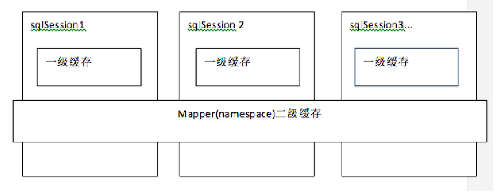
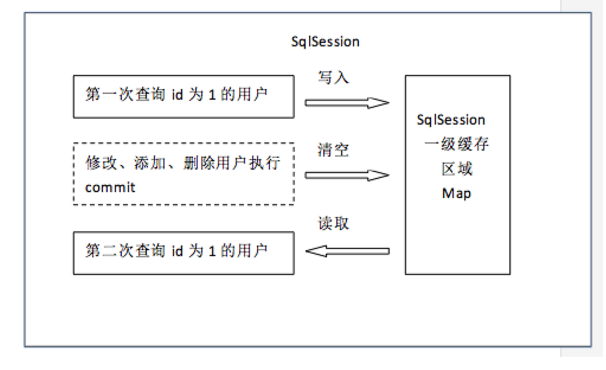
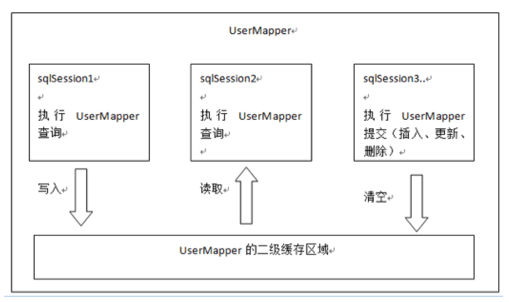
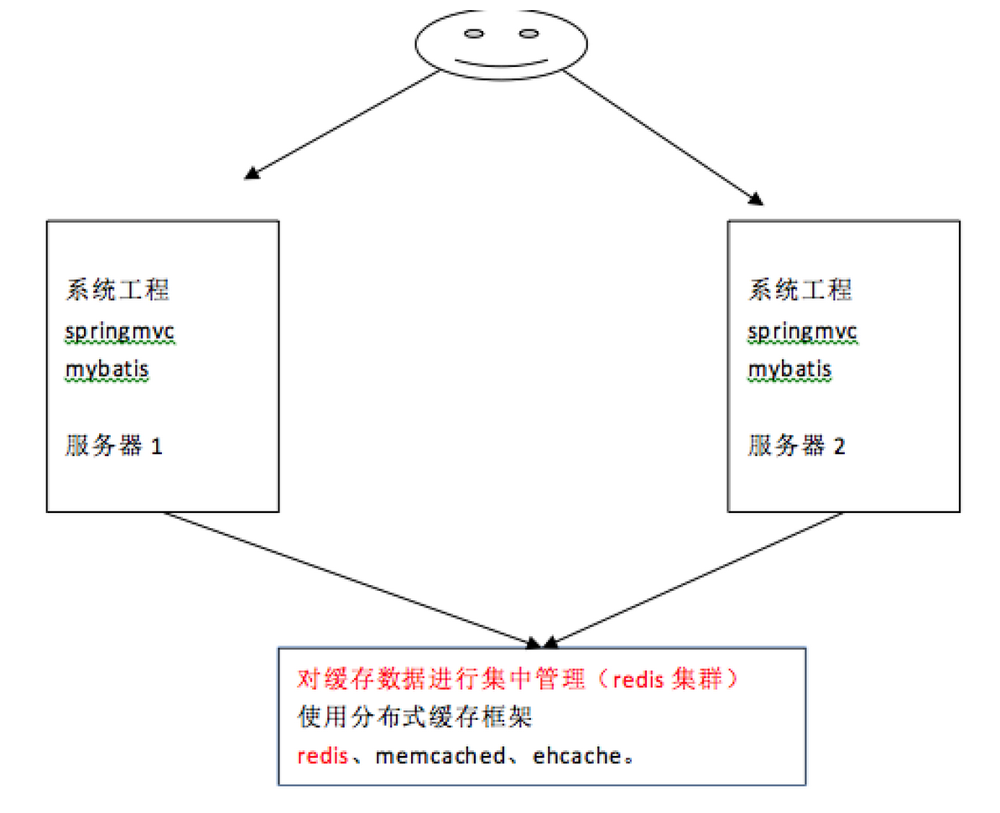

<!doctype html>
<html>
<head>
<meta charset='UTF-8'><meta name='viewport' content='width=device-width initial-scale=1'>
<title>第三阶段 MyBatis-02-映射关系以及优化.md</title><link href='http://fonts.googleapis.com/css?family=Open+Sans:400italic,700italic,700,400&subset=latin,latin-ext' rel='stylesheet' type='text/css' /><style type='text/css'>html {overflow-x: initial !important;}.CodeMirror { height: auto; }
.CodeMirror-scroll { overflow-y: hidden; overflow-x: auto; }
.CodeMirror-lines { padding: 4px 0px; }
.CodeMirror pre { }
.CodeMirror-scrollbar-filler, .CodeMirror-gutter-filler { background-color: white; }
.CodeMirror-gutters { border-right: 1px solid rgb(221, 221, 221); background-color: rgb(247, 247, 247); white-space: nowrap; }
.CodeMirror-linenumbers { }
.CodeMirror-linenumber { padding: 0px 3px 0px 5px; text-align: right; color: rgb(153, 153, 153); }
.CodeMirror div.CodeMirror-cursor { border-left: 1px solid black; z-index: 3; }
.CodeMirror div.CodeMirror-secondarycursor { border-left: 1px solid silver; }
.CodeMirror.cm-keymap-fat-cursor div.CodeMirror-cursor { width: auto; border: 0px; background: rgb(119, 238, 119); z-index: 1; }
.CodeMirror div.CodeMirror-cursor.CodeMirror-overwrite { }
.cm-tab { display: inline-block; }
.cm-s-typora-default .cm-header, .cm-s-typora-default .cm-property { color: rgb(217, 79, 138); }
.cm-s-typora-default pre.cm-header1:not(.cm-atom) :not(.cm-overlay) { font-size: 2rem; line-height: 2rem; }
.cm-s-typora-default pre.cm-header2:not(.cm-atom) :not(.cm-overlay) { font-size: 1.4rem; line-height: 1.4rem; }
.cm-s-typora-default .cm-atom, .cm-s-typora-default .cm-number { color: rgb(149, 132, 134); }
.cm-s-typora-default .cm-table-row, .cm-s-typora-default .cm-block-start { font-family: monospace; }
.cm-s-typora-default .cm-comment, .cm-s-typora-default .cm-code { color: rgb(74, 90, 159); font-family: monospace; }
.cm-s-typora-default .cm-tag { color: rgb(169, 68, 66); }
.cm-s-typora-default .cm-string { color: rgb(126, 134, 169); }
.cm-s-typora-default .cm-link { color: rgb(196, 122, 15); text-decoration: underline; }
.cm-s-typora-default .cm-variable-2, .cm-s-typora-default .cm-variable-1 { color: inherit; }
.cm-s-typora-default .cm-overlay { font-family: monospace; }
.CodeMirror.cm-s-typora-default div.CodeMirror-cursor { border-left: 3px solid rgb(228, 98, 154); }
.cm-s-typora-default .CodeMirror-activeline-background { left: -60px; right: -30px; background: rgba(204, 204, 204, 0.2); }
.cm-s-typora-default .CodeMirror-gutters { border-right: none; background-color: inherit; }
.cm-s-typora-default .cm-trailing-space-new-line::after, .cm-startspace::after, .cm-starttab .cm-tab::after { content: "•"; position: absolute; left: 0px; opacity: 0; font-family: LetterGothicStd, monospace; }
.os-windows .cm-startspace::after, .os-windows .cm-starttab .cm-tab::after { left: -0.1em; }
.cm-starttab .cm-tab::after { content: " "; }
.cm-startspace, .cm-tab, .cm-starttab, .cm-trailing-space-a, .cm-trailing-space-b, .cm-trailing-space-new-line { font-family: monospace; position: relative; }
.cm-s-typora-default .cm-trailing-space-new-line::after { content: "↓"; opacity: 0.3; }
.cm-s-inner .cm-keyword { color: rgb(119, 0, 136); }
.cm-s-inner .cm-atom, .cm-s-inner.cm-atom { color: rgb(34, 17, 153); }
.cm-s-inner .cm-number { color: rgb(17, 102, 68); }
.cm-s-inner .cm-def { color: rgb(0, 0, 255); }
.cm-s-inner .cm-variable { color: black; }
.cm-s-inner .cm-variable-2 { color: rgb(0, 85, 170); }
.cm-s-inner .cm-variable-3 { color: rgb(0, 136, 85); }
.cm-s-inner .cm-property { color: black; }
.cm-s-inner .cm-operator { color: rgb(152, 26, 26); }
.cm-s-inner .cm-comment, .cm-s-inner.cm-comment { color: rgb(170, 85, 0); }
.cm-s-inner .cm-string { color: rgb(170, 17, 17); }
.cm-s-inner .cm-string-2 { color: rgb(255, 85, 0); }
.cm-s-inner .cm-meta { color: rgb(85, 85, 85); }
.cm-s-inner .cm-qualifier { color: rgb(85, 85, 85); }
.cm-s-inner .cm-builtin { color: rgb(51, 0, 170); }
.cm-s-inner .cm-bracket { color: rgb(153, 153, 119); }
.cm-s-inner .cm-tag { color: rgb(17, 119, 0); }
.cm-s-inner .cm-attribute { color: rgb(0, 0, 204); }
.cm-s-inner .cm-header, .cm-s-inner.cm-header { color: blue; }
.cm-s-inner .cm-quote, .cm-s-inner.cm-quote { color: rgb(0, 153, 0); }
.cm-s-inner .cm-hr, .cm-s-inner.cm-hr { color: rgb(153, 153, 153); }
.cm-s-inner .cm-link, .cm-s-inner.cm-link { color: rgb(0, 0, 204); }
.cm-negative { color: rgb(221, 68, 68); }
.cm-positive { color: rgb(34, 153, 34); }
.cm-header, .cm-strong { font-weight: bold; }
.cm-del { text-decoration: line-through; }
.cm-em { font-style: italic; }
.cm-link { text-decoration: underline; }
.cm-error { color: rgb(255, 0, 0); }
.cm-invalidchar { color: rgb(255, 0, 0); }
.cm-constant { color: rgb(38, 139, 210); }
.cm-defined { color: rgb(181, 137, 0); }
div.CodeMirror span.CodeMirror-matchingbracket { color: rgb(0, 255, 0); }
div.CodeMirror span.CodeMirror-nonmatchingbracket { color: rgb(255, 34, 34); }
.cm-s-inner .CodeMirror-activeline-background { background: inherit; }
.CodeMirror { position: relative; overflow: hidden; }
.CodeMirror-scroll { margin-bottom: -30px; margin-right: -30px; padding-bottom: 30px; padding-right: 30px; height: 100%; outline: none; position: relative; box-sizing: content-box; }
.CodeMirror-sizer { position: relative; }
.CodeMirror-vscrollbar, .CodeMirror-hscrollbar, .CodeMirror-scrollbar-filler, .CodeMirror-gutter-filler { position: absolute; z-index: 6; display: none; }
.CodeMirror-vscrollbar { right: 0px; top: 0px; overflow-x: hidden; overflow-y: scroll; }
.CodeMirror-hscrollbar { bottom: 0px; left: 0px; overflow-y: hidden; overflow-x: scroll; }
.CodeMirror-scrollbar-filler { right: 0px; bottom: 0px; }
.CodeMirror-gutter-filler { left: 0px; bottom: 0px; }
.CodeMirror-gutters { position: absolute; left: 0px; top: 0px; padding-bottom: 30px; z-index: 3; }
.CodeMirror-gutter { white-space: normal; height: 100%; box-sizing: content-box; padding-bottom: 30px; margin-bottom: -32px; display: inline-block; }
.CodeMirror-gutter-wrapper { position: absolute; z-index: 4; background: none !important; border: none !important; }
.CodeMirror-gutter-background { position: absolute; top: 0px; bottom: 0px; z-index: 4; }
.CodeMirror-gutter-elt { position: absolute; cursor: default; z-index: 4; }
.CodeMirror-lines { cursor: text; }
.CodeMirror pre { border-radius: 0px; border-width: 0px; background: transparent; font-family: inherit; font-size: inherit; margin: 0px; white-space: pre; word-wrap: normal; color: inherit; z-index: 2; position: relative; overflow: visible; }
.CodeMirror-wrap pre { word-wrap: break-word; white-space: pre-wrap; word-break: normal; }
.CodeMirror-code pre { border-right: 30px solid transparent; width: fit-content; }
.CodeMirror-wrap .CodeMirror-code pre { border-right: none; width: auto; }
.CodeMirror-linebackground { position: absolute; left: 0px; right: 0px; top: 0px; bottom: 0px; z-index: 0; }
.CodeMirror-linewidget { position: relative; z-index: 2; overflow: auto; }
.CodeMirror-widget { }
.CodeMirror-wrap .CodeMirror-scroll { overflow-x: hidden; }
.CodeMirror-measure { position: absolute; width: 100%; height: 0px; overflow: hidden; visibility: hidden; }
.CodeMirror-measure pre { position: static; }
.CodeMirror div.CodeMirror-cursor { position: absolute; visibility: hidden; border-right: none; width: 0px; }
.CodeMirror div.CodeMirror-cursor { visibility: hidden; }
.CodeMirror-focused div.CodeMirror-cursor { visibility: inherit; }
.CodeMirror-selected { background: rgb(217, 217, 217); }
.CodeMirror-focused .CodeMirror-selected { background: rgb(215, 212, 240); }
.cm-searching { background: rgba(255, 255, 0, 0.4); }
.CodeMirror span { }
@media print {
  .CodeMirror div.CodeMirror-cursor { visibility: hidden; }
}
.CodeMirror-lint-markers { width: 16px; }
.CodeMirror-lint-tooltip { background-color: infobackground; border: 1px solid black; border-radius: 4px; color: infotext; font-family: monospace; overflow: hidden; padding: 2px 5px; position: fixed; white-space: pre-wrap; z-index: 10000; max-width: 600px; opacity: 0; transition: opacity 0.4s; font-size: 0.8em; }
.CodeMirror-lint-mark-error, .CodeMirror-lint-mark-warning { background-position: left bottom; background-repeat: repeat-x; }
.CodeMirror-lint-mark-error { background-image: url(""); }
.CodeMirror-lint-marker-error, .CodeMirror-lint-marker-warning { background-position: center center; background-repeat: no-repeat; cursor: pointer; display: inline-block; height: 16px; width: 16px; vertical-align: middle; position: relative; }
.CodeMirror-lint-message-error, .CodeMirror-lint-message-warning { padding-left: 18px; background-position: left top; background-repeat: no-repeat; }
.CodeMirror-lint-marker-error, .CodeMirror-lint-message-error { background-image: url(""); }
.CodeMirror-lint-marker-warning, .CodeMirror-lint-message-warning { background-image: url(""); }
.CodeMirror-lint-marker-multiple { background-image: url("data:image/png;base64,iVBORw0KGgoAAAANSUhEUgAAAAcAAAAHCAMAAADzjKfhAAAACVBMVEUAAAAAAAC/v7914kyHAAAAAXRSTlMAQObYZgAAACNJREFUeNo1ioEJAAAIwmz/H90iFFSGJgFMe3gaLZ0od+9/AQZ0ADosbYraAAAAAElFTkSuQmCC"); background-repeat: no-repeat; background-position: right bottom; width: 100%; height: 100%; }


:root { --bg-color: #ffffff; --text-color: #333333; --code-block-bg-color: inherit; }
html { font-size: 14px; background-color: var(--bg-color); color: var(--text-color); font-family: "Helvetica Neue", Helvetica, Arial, sans-serif; -webkit-font-smoothing: antialiased; }
body { margin: 0px; padding: 0px; height: auto; bottom: 0px; top: 0px; left: 0px; right: 0px; font-size: 1rem; line-height: 1.42857; overflow-x: hidden; background: inherit; }
a:active, a:hover { outline: 0px; }
.in-text-selection, ::selection { background: rgb(181, 214, 252); text-shadow: none; }
#write { margin: 0px auto; height: auto; width: inherit; word-break: normal; word-wrap: break-word; position: relative; padding-bottom: 70px; white-space: pre-wrap; overflow-x: visible; }
.for-image #write { padding-left: 8px; padding-right: 8px; }
body.typora-export { padding-left: 30px; padding-right: 30px; }
@media screen and (max-width: 500px) {
  body.typora-export { padding-left: 0px; padding-right: 0px; }
  .CodeMirror-sizer { margin-left: 0px !important; }
  .CodeMirror-gutters { display: none !important; }
}
.typora-export #write { margin: 0px auto; }
#write > p:first-child, #write > ul:first-child, #write > ol:first-child, #write > pre:first-child, #write > blockquote:first-child, #write > div:first-child, #write > table:first-child { margin-top: 30px; }
#write li > table:first-child { margin-top: -20px; }
img { max-width: 100%; vertical-align: middle; }
input, button, select, textarea { color: inherit; font-style: inherit; font-variant: inherit; font-weight: inherit; font-stretch: inherit; font-size: inherit; line-height: inherit; font-family: inherit; }
input[type="checkbox"], input[type="radio"] { line-height: normal; padding: 0px; }
::before, ::after, * { box-sizing: border-box; }
#write p, #write h1, #write h2, #write h3, #write h4, #write h5, #write h6, #write div, #write pre { width: inherit; }
#write p, #write h1, #write h2, #write h3, #write h4, #write h5, #write h6 { position: relative; }
h1 { font-size: 2rem; }
h2 { font-size: 1.8rem; }
h3 { font-size: 1.6rem; }
h4 { font-size: 1.4rem; }
h5 { font-size: 1.2rem; }
h6 { font-size: 1rem; }
p { -webkit-margin-before: 1rem; -webkit-margin-after: 1rem; -webkit-margin-start: 0px; -webkit-margin-end: 0px; }
.typora-export p { white-space: normal; }
.mathjax-block { margin-top: 0px; margin-bottom: 0px; -webkit-margin-before: 0rem; -webkit-margin-after: 0rem; }
.hidden { display: none; }
.md-blockmeta { color: rgb(204, 204, 204); font-weight: bold; font-style: italic; }
a { cursor: pointer; }
sup.md-footnote { padding: 2px 4px; background-color: rgba(238, 238, 238, 0.7); color: rgb(85, 85, 85); border-radius: 4px; }
#write input[type="checkbox"] { cursor: pointer; width: inherit; height: inherit; margin: 4px 0px 0px; }
tr { break-inside: avoid; break-after: auto; }
thead { display: table-header-group; }
table { border-collapse: collapse; border-spacing: 0px; width: 100%; overflow: auto; break-inside: auto; text-align: left; }
table.md-table td { min-width: 80px; }
.CodeMirror-gutters { border-right: 0px; background-color: inherit; }
.CodeMirror { text-align: left; }
.CodeMirror-placeholder { opacity: 0.3; }
.CodeMirror pre { padding: 0px 4px; }
.CodeMirror-lines { padding: 0px; }
div.hr:focus { cursor: none; }
pre { white-space: pre-wrap; }
.CodeMirror-gutters { margin-right: 4px; }
.md-fences { font-size: 0.9rem; display: block; break-inside: avoid; text-align: left; overflow: visible; white-space: pre; background: var(--code-block-bg-color); position: relative !important; }
.md-diagram-panel { width: 100%; margin-top: 10px; text-align: center; padding-top: 0px; padding-bottom: 8px; overflow-x: auto; }
.md-fences .CodeMirror.CodeMirror-wrap { top: -1.6em; margin-bottom: -1.6em; }
.md-fences.mock-cm { white-space: pre-wrap; }
.show-fences-line-number .md-fences { padding-left: 0px; }
.show-fences-line-number .md-fences.mock-cm { padding-left: 40px; }
.footnotes { opacity: 0.8; font-size: 0.9rem; padding-top: 1em; padding-bottom: 1em; }
.footnotes + .footnotes { margin-top: -1em; }
.md-reset { margin: 0px; padding: 0px; border: 0px; outline: 0px; vertical-align: top; background: transparent; text-decoration: none; text-shadow: none; float: none; position: static; width: auto; height: auto; white-space: nowrap; cursor: inherit; -webkit-tap-highlight-color: transparent; line-height: normal; font-weight: normal; text-align: left; box-sizing: content-box; direction: ltr; }
li div { padding-top: 0px; }
blockquote { margin: 1rem 0px; }
li p, li .mathjax-block { margin: 0.5rem 0px; }
li { margin: 0px; position: relative; }
blockquote > :last-child { margin-bottom: 0px; }
blockquote > :first-child { margin-top: 0px; }
.footnotes-area { color: rgb(136, 136, 136); margin-top: 0.714rem; padding-bottom: 0.143rem; }
@media print {
  html, body { border: 1px solid transparent; height: 99%; break-after: avoid; break-before: avoid; }
  .typora-export * { -webkit-print-color-adjust: exact; }
  h1, h2, h3, h4, h5, h6 { break-after: avoid-page; orphans: 2; }
  p { orphans: 4; }
  html.blink-to-pdf { font-size: 13px; }
  .typora-export #write { padding-left: 1cm; padding-right: 1cm; padding-bottom: 0px; break-after: avoid; }
  .typora-export #write::after { height: 0px; }
  @page { margin: 20mm 0mm; }
}
.footnote-line { margin-top: 0.714em; font-size: 0.7em; }
a img, img a { cursor: pointer; }
pre.md-meta-block { font-size: 0.8rem; min-height: 2.86rem; white-space: pre-wrap; background: rgb(204, 204, 204); display: block; overflow-x: hidden; }
p .md-image:only-child { display: inline-block; width: 100%; text-align: center; }
#write .MathJax_Display { margin: 0.8em 0px 0px; }
.mathjax-block { white-space: pre; overflow: hidden; width: 100%; }
p + .mathjax-block { margin-top: -1.143rem; }
.mathjax-block:not(:empty)::after { display: none; }
[contenteditable="true"]:active, [contenteditable="true"]:focus { outline: none; box-shadow: none; }
.task-list { list-style-type: none; }
.task-list-item { position: relative; padding-left: 1em; }
.task-list-item input { position: absolute; top: 0px; left: 0px; }
.math { font-size: 1rem; }
.md-toc { min-height: 3.58rem; position: relative; font-size: 0.9rem; border-radius: 10px; }
.md-toc-content { position: relative; margin-left: 0px; }
.md-toc::after, .md-toc-content::after { display: none; }
.md-toc-item { display: block; color: rgb(65, 131, 196); text-decoration: none; }
.md-toc-inner:hover { }
.md-toc-inner { display: inline-block; cursor: pointer; }
.md-toc-h1 .md-toc-inner { margin-left: 0px; font-weight: bold; }
.md-toc-h2 .md-toc-inner { margin-left: 2em; }
.md-toc-h3 .md-toc-inner { margin-left: 4em; }
.md-toc-h4 .md-toc-inner { margin-left: 6em; }
.md-toc-h5 .md-toc-inner { margin-left: 8em; }
.md-toc-h6 .md-toc-inner { margin-left: 10em; }
@media screen and (max-width: 48em) {
  .md-toc-h3 .md-toc-inner { margin-left: 3.5em; }
  .md-toc-h4 .md-toc-inner { margin-left: 5em; }
  .md-toc-h5 .md-toc-inner { margin-left: 6.5em; }
  .md-toc-h6 .md-toc-inner { margin-left: 8em; }
}
a.md-toc-inner { font-size: inherit; font-style: inherit; font-weight: inherit; line-height: inherit; }
.footnote-line a:not(.reversefootnote) { color: inherit; }
.md-attr { display: none; }
.md-fn-count::after { content: "."; }
.md-tag { opacity: 0.5; }
.md-comment { color: rgb(162, 127, 3); opacity: 0.8; font-family: monospace; }
code { text-align: left; }
h1 .md-tag, h2 .md-tag, h3 .md-tag, h4 .md-tag, h5 .md-tag, h6 .md-tag { font-weight: initial; opacity: 0.35; }
a.md-print-anchor { border-width: initial !important; border-style: none !important; border-color: initial !important; display: inline-block !important; position: absolute !important; width: 1px !important; right: 0px !important; outline: none !important; background: transparent !important; text-decoration: initial !important; text-shadow: initial !important; }
.md-inline-math .MathJax_SVG .noError { display: none !important; }
.mathjax-block .MathJax_SVG_Display { text-align: center; margin: 1em 0em; position: relative; text-indent: 0px; max-width: none; max-height: none; min-height: 0px; min-width: 100%; width: auto; display: block !important; }
.MathJax_SVG_Display, .md-inline-math .MathJax_SVG_Display { width: auto; margin: inherit; display: inline-block !important; }
.MathJax_SVG .MJX-monospace { font-family: monospace; }
.MathJax_SVG .MJX-sans-serif { font-family: sans-serif; }
.MathJax_SVG { display: inline; font-style: normal; font-weight: normal; line-height: normal; zoom: 90%; text-indent: 0px; text-align: left; text-transform: none; letter-spacing: normal; word-spacing: normal; word-wrap: normal; white-space: nowrap; float: none; direction: ltr; max-width: none; max-height: none; min-width: 0px; min-height: 0px; border: 0px; padding: 0px; margin: 0px; }
.MathJax_SVG * { transition: none; }
.md-diagram-panel > svg { max-width: 100%; }
[lang="flow"] svg, [lang="mermaid"] svg { max-width: 100%; }


:root { --side-bar-bg-color: #fafafa; --control-text-color: #777; }
@font-face { font-family: "Open Sans"; font-style: normal; font-weight: normal; src: local("Open Sans Regular"), url("./github/400.woff") format("woff"); }
@font-face { font-family: "Open Sans"; font-style: italic; font-weight: normal; src: local("Open Sans Italic"), url("./github/400i.woff") format("woff"); }
@font-face { font-family: "Open Sans"; font-style: normal; font-weight: bold; src: local("Open Sans Bold"), url("./github/700.woff") format("woff"); }
@font-face { font-family: "Open Sans"; font-style: italic; font-weight: bold; src: local("Open Sans Bold Italic"), url("./github/700i.woff") format("woff"); }
html { font-size: 16px; }
body { font-family: "Open Sans", "Clear Sans", "Helvetica Neue", Helvetica, Arial, sans-serif; color: rgb(51, 51, 51); line-height: 1.6; }
#write { max-width: 860px; margin: 0px auto; padding: 20px 30px 100px; }
#write > ul:first-child, #write > ol:first-child { margin-top: 30px; }
body > :first-child { margin-top: 0px !important; }
body > :last-child { margin-bottom: 0px !important; }
a { color: rgb(65, 131, 196); }
h1, h2, h3, h4, h5, h6 { position: relative; margin-top: 1rem; margin-bottom: 1rem; font-weight: bold; line-height: 1.4; cursor: text; }
h1:hover a.anchor, h2:hover a.anchor, h3:hover a.anchor, h4:hover a.anchor, h5:hover a.anchor, h6:hover a.anchor { text-decoration: none; }
h1 tt, h1 code { font-size: inherit; }
h2 tt, h2 code { font-size: inherit; }
h3 tt, h3 code { font-size: inherit; }
h4 tt, h4 code { font-size: inherit; }
h5 tt, h5 code { font-size: inherit; }
h6 tt, h6 code { font-size: inherit; }
h1 { padding-bottom: 0.3em; font-size: 2.25em; line-height: 1.2; border-bottom: 1px solid rgb(238, 238, 238); }
h2 { padding-bottom: 0.3em; font-size: 1.75em; line-height: 1.225; border-bottom: 1px solid rgb(238, 238, 238); }
h3 { font-size: 1.5em; line-height: 1.43; }
h4 { font-size: 1.25em; }
h5 { font-size: 1em; }
h6 { font-size: 1em; color: rgb(119, 119, 119); }
p, blockquote, ul, ol, dl, table { margin: 0.8em 0px; }
li > ol, li > ul { margin: 0px; }
hr { height: 4px; padding: 0px; margin: 16px 0px; background-color: rgb(231, 231, 231); border-width: 0px 0px 1px; border-style: none none solid; border-top-color: initial; border-right-color: initial; border-left-color: initial; border-image: initial; overflow: hidden; box-sizing: content-box; border-bottom-color: rgb(221, 221, 221); }
body > h2:first-child { margin-top: 0px; padding-top: 0px; }
body > h1:first-child { margin-top: 0px; padding-top: 0px; }
body > h1:first-child + h2 { margin-top: 0px; padding-top: 0px; }
body > h3:first-child, body > h4:first-child, body > h5:first-child, body > h6:first-child { margin-top: 0px; padding-top: 0px; }
a:first-child h1, a:first-child h2, a:first-child h3, a:first-child h4, a:first-child h5, a:first-child h6 { margin-top: 0px; padding-top: 0px; }
h1 p, h2 p, h3 p, h4 p, h5 p, h6 p { margin-top: 0px; }
li p.first { display: inline-block; }
ul, ol { padding-left: 30px; }
ul:first-child, ol:first-child { margin-top: 0px; }
ul:last-child, ol:last-child { margin-bottom: 0px; }
blockquote { border-left: 4px solid rgb(221, 221, 221); padding: 0px 15px; color: rgb(119, 119, 119); }
blockquote blockquote { padding-right: 0px; }
table { padding: 0px; word-break: initial; }
table tr { border-top: 1px solid rgb(204, 204, 204); margin: 0px; padding: 0px; }
table tr:nth-child(2n) { background-color: rgb(248, 248, 248); }
table tr th { font-weight: bold; border: 1px solid rgb(204, 204, 204); text-align: left; margin: 0px; padding: 6px 13px; }
table tr td { border: 1px solid rgb(204, 204, 204); text-align: left; margin: 0px; padding: 6px 13px; }
table tr th:first-child, table tr td:first-child { margin-top: 0px; }
table tr th:last-child, table tr td:last-child { margin-bottom: 0px; }
.CodeMirror-gutters { border-right: 1px solid rgb(221, 221, 221); }
.md-fences, code, tt { border: 1px solid rgb(221, 221, 221); background-color: rgb(248, 248, 248); border-radius: 3px; font-family: Consolas, "Liberation Mono", Courier, monospace; padding: 2px 4px 0px; font-size: 0.9em; }
.md-fences { margin-bottom: 15px; margin-top: 15px; padding: 8px 1em 6px; }
.task-list { padding-left: 0px; }
.task-list-item { padding-left: 32px; }
.task-list-item input { top: 3px; left: 8px; }
@media screen and (min-width: 914px) {
}
@media print {
  html { font-size: 13px; }
  table, pre { break-inside: avoid; }
  pre { word-wrap: break-word; }
}
.md-fences { background-color: rgb(248, 248, 248); }
#write pre.md-meta-block { padding: 1rem; font-size: 85%; line-height: 1.45; background-color: rgb(247, 247, 247); border: 0px; border-radius: 3px; color: rgb(119, 119, 119); margin-top: 0px !important; }
.mathjax-block > .code-tooltip { bottom: 0.375rem; }
#write > h3.md-focus::before { left: -1.5625rem; top: 0.375rem; }
#write > h4.md-focus::before { left: -1.5625rem; top: 0.285714rem; }
#write > h5.md-focus::before { left: -1.5625rem; top: 0.285714rem; }
#write > h6.md-focus::before { left: -1.5625rem; top: 0.285714rem; }
.md-image > .md-meta { border: 1px solid rgb(221, 221, 221); border-radius: 3px; font-family: Consolas, "Liberation Mono", Courier, monospace; padding: 2px 4px 0px; font-size: 0.9em; color: inherit; }
.md-tag { color: inherit; }
.md-toc { margin-top: 20px; padding-bottom: 20px; }
.sidebar-tabs { border-bottom: none; }
#typora-quick-open { border: 1px solid rgb(221, 221, 221); background-color: rgb(248, 248, 248); }
#typora-quick-open-item { background-color: rgb(250, 250, 250); border-color: rgb(254, 254, 254) rgb(229, 229, 229) rgb(229, 229, 229) rgb(238, 238, 238); border-style: solid; border-width: 1px; }
#md-notification::before { top: 10px; }
.on-focus-mode blockquote { border-left-color: rgba(85, 85, 85, 0.12); }
header, .context-menu, .megamenu-content, footer { font-family: "Segoe UI", Arial, sans-serif; }
.file-node-content:hover .file-node-icon, .file-node-content:hover .file-node-open-state { visibility: visible; }
.mac-seamless-mode #typora-sidebar { background-color: var(--side-bar-bg-color); }
.md-lang { color: rgb(180, 101, 77); }


</style>
</head>
<body class='typora-export' >
<div  id='write'  class = 'is-node'><h3><a name='header-n0' class='md-header-anchor '></a>MyBatis-02-动态SQL语句及映射关系</h3><div class='md-toc' mdtype='toc'><p class="md-toc-content"><span class="md-toc-item md-toc-h3" data-ref="n0"><a class="md-toc-inner" href="#header-n0">MyBatis-02-动态SQL语句及映射关系</a></span><span class="md-toc-item md-toc-h4" data-ref="n3"><a class="md-toc-inner" href="#header-n3">回顾</a></span><span class="md-toc-item md-toc-h4" data-ref="n5"><a class="md-toc-inner" href="#header-n5">任务</a></span><span class="md-toc-item md-toc-h4" data-ref="n7"><a class="md-toc-inner" href="#header-n7">目标</a></span><span class="md-toc-item md-toc-h4" data-ref="n9"><a class="md-toc-inner" href="#header-n9">一、MyBatis动态SQL</a></span><span class="md-toc-item md-toc-h5" data-ref="n10"><a class="md-toc-inner" href="#header-n10">1、动态SQL简介</a></span><span class="md-toc-item md-toc-h5" data-ref="n38"><a class="md-toc-inner" href="#header-n38">2、进行判断</a></span><span class="md-toc-item md-toc-h6" data-ref="n39"><a class="md-toc-inner" href="#header-n39">2.1、if元素</a></span><span class="md-toc-item md-toc-h6" data-ref="n64"><a class="md-toc-inner" href="#header-n64">2.2、choose元素</a></span><span class="md-toc-item md-toc-h5" data-ref="n77"><a class="md-toc-inner" href="#header-n77">3、拼关键字</a></span><span class="md-toc-item md-toc-h6" data-ref="n78"><a class="md-toc-inner" href="#header-n78">3.1、where元素</a></span><span class="md-toc-item md-toc-h6" data-ref="n94"><a class="md-toc-inner" href="#header-n94">3.2、set元素</a></span><span class="md-toc-item md-toc-h6" data-ref="n105"><a class="md-toc-inner" href="#header-n105">3.3、trim元素</a></span><span class="md-toc-item md-toc-h5" data-ref="n117"><a class="md-toc-inner" href="#header-n117">4、进行循环</a></span><span class="md-toc-item md-toc-h6" data-ref="n118"><a class="md-toc-inner" href="#header-n118">4.1、foreach元素</a></span><span class="md-toc-item md-toc-h6" data-ref="n146"><a class="md-toc-inner" href="#header-n146">4.1.1、单参数List的类型</a></span><span class="md-toc-item md-toc-h6" data-ref="n153"><a class="md-toc-inner" href="#header-n153">4.1.2、单参数array数组的类型</a></span><span class="md-toc-item md-toc-h6" data-ref="n162"><a class="md-toc-inner" href="#header-n162">4.1.3、自己把参数封装成Map的类型</a></span><span class="md-toc-item md-toc-h4" data-ref="n171"><a class="md-toc-inner" href="#header-n171"> </a></span><span class="md-toc-item md-toc-h4" data-ref="n172"><a class="md-toc-inner" href="#header-n172">二、MyBatis关联映射</a></span><span class="md-toc-item md-toc-h5" data-ref="n173"><a class="md-toc-inner" href="#header-n173">1、主键映射</a></span><span class="md-toc-item md-toc-h6" data-ref="n174"><a class="md-toc-inner" href="#header-n174">1.1、主键映射作用</a></span><span class="md-toc-item md-toc-h6" data-ref="n186"><a class="md-toc-inner" href="#header-n186">1.2、自动递增</a></span><span class="md-toc-item md-toc-h6" data-ref="n189"><a class="md-toc-inner" href="#header-n189">1.2.1、Oracle Sequence 配置</a></span><span class="md-toc-item md-toc-h6" data-ref="n199"><a class="md-toc-inner" href="#header-n199">1.2.2、Mysql自增主键配置</a></span><span class="md-toc-item md-toc-h6" data-ref="n211"><a class="md-toc-inner" href="#header-n211">1.3、非自动递增</a></span><span class="md-toc-item md-toc-h6" data-ref="n214"><a class="md-toc-inner" href="#header-n214">1.3.1、Oracle Sequence 配置</a></span><span class="md-toc-item md-toc-h6" data-ref="n221"><a class="md-toc-inner" href="#header-n221">1.3.2、Mysql自增主键配置</a></span><span class="md-toc-item md-toc-h5" data-ref="n227"><a class="md-toc-inner" href="#header-n227">2、关联映射</a></span><span class="md-toc-item md-toc-h6" data-ref="n228"><a class="md-toc-inner" href="#header-n228">2.1、关联映射作用</a></span><span class="md-toc-item md-toc-h6" data-ref="n304"><a class="md-toc-inner" href="#header-n304">2.2、嵌套查询映射</a></span><span class="md-toc-item md-toc-h6" data-ref="n321"><a class="md-toc-inner" href="#header-n321">2.3、嵌套结果映射</a></span><span class="md-toc-item md-toc-h5" data-ref="n340"><a class="md-toc-inner" href="#header-n340">3、集合映射</a></span><span class="md-toc-item md-toc-h6" data-ref="n341"><a class="md-toc-inner" href="#header-n341">3.1、集合映射作用</a></span><span class="md-toc-item md-toc-h6" data-ref="n352"><a class="md-toc-inner" href="#header-n352">3.2、嵌套查询映射</a></span><span class="md-toc-item md-toc-h6" data-ref="n373"><a class="md-toc-inner" href="#header-n373">3.3、嵌套结果映射</a></span><span class="md-toc-item md-toc-h5" data-ref="n397"><a class="md-toc-inner" href="#header-n397">4、鉴别器</a></span><span class="md-toc-item md-toc-h6" data-ref="n398"><a class="md-toc-inner" href="#header-n398">4.1、鉴别器的作用</a></span><span class="md-toc-item md-toc-h6" data-ref="n403"><a class="md-toc-inner" href="#header-n403">4.2、鉴别器的使用</a></span><span class="md-toc-item md-toc-h4" data-ref="n434"><a class="md-toc-inner" href="#header-n434">三、性能优化</a></span><span class="md-toc-item md-toc-h5" data-ref="n435"><a class="md-toc-inner" href="#header-n435">1、延迟加载</a></span><span class="md-toc-item md-toc-h6" data-ref="n436"><a class="md-toc-inner" href="#header-n436">1.1、 什么是延迟加载</a></span><span class="md-toc-item md-toc-h6" data-ref="n441"><a class="md-toc-inner" href="#header-n441">1.2 、设置延迟加载</a></span><span class="md-toc-item md-toc-h6" data-ref="n464"><a class="md-toc-inner" href="#header-n464">1.3、使用association进行延迟加载</a></span><span class="md-toc-item md-toc-h6" data-ref="n465"><a class="md-toc-inner" href="#header-n465">1.3.1  需求</a></span><span class="md-toc-item md-toc-h6" data-ref="n468"><a class="md-toc-inner" href="#header-n468">1.3.2  编写映射文件</a></span><span class="md-toc-item md-toc-h6" data-ref="n493"><a class="md-toc-inner" href="#header-n493">1.3.3  加载映射文件</a></span><span class="md-toc-item md-toc-h6" data-ref="n498"><a class="md-toc-inner" href="#header-n498">1.3.4  编写mapper接口</a></span><span class="md-toc-item md-toc-h6" data-ref="n503"><a class="md-toc-inner" href="#header-n503">1.3.5  编写测试代码</a></span><span class="md-toc-item md-toc-h6" data-ref="n515"><a class="md-toc-inner" href="#header-n515">1.4、延迟加载思考</a></span><span class="md-toc-item md-toc-h5" data-ref="n538"><a class="md-toc-inner" href="#header-n538">2、一级缓存</a></span><span class="md-toc-item md-toc-h6" data-ref="n539"><a class="md-toc-inner" href="#header-n539">2.1     mybatis缓存分析</a></span><span class="md-toc-item md-toc-h6" data-ref="n558"><a class="md-toc-inner" href="#header-n558">2.2、 一级缓存</a></span><span class="md-toc-item md-toc-h6" data-ref="n559"><a class="md-toc-inner" href="#header-n559">2.3、原理</a></span><span class="md-toc-item md-toc-h6" data-ref="n570"><a class="md-toc-inner" href="#header-n570">2.4、测试1</a></span><span class="md-toc-item md-toc-h6" data-ref="n572"><a class="md-toc-inner" href="#header-n572">2.5、测试2</a></span><span class="md-toc-item md-toc-h6" data-ref="n574"><a class="md-toc-inner" href="#header-n574">2.6、应用</a></span><span class="md-toc-item md-toc-h5" data-ref="n593"><a class="md-toc-inner" href="#header-n593">3、二级缓存</a></span><span class="md-toc-item md-toc-h6" data-ref="n594"><a class="md-toc-inner" href="#header-n594">3.1、原理</a></span><span class="md-toc-item md-toc-h6" data-ref="n607"><a class="md-toc-inner" href="#header-n607">3.2、开启二级缓存</a></span><span class="md-toc-item md-toc-h6" data-ref="n624"><a class="md-toc-inner" href="#header-n624">3.3、实现序列化</a></span><span class="md-toc-item md-toc-h6" data-ref="n631"><a class="md-toc-inner" href="#header-n631">3.4、测试1</a></span><span class="md-toc-item md-toc-h6" data-ref="n639"><a class="md-toc-inner" href="#header-n639">3.5、测试2</a></span><span class="md-toc-item md-toc-h6" data-ref="n643"><a class="md-toc-inner" href="#header-n643">3.6、禁用二级缓存</a></span><span class="md-toc-item md-toc-h6" data-ref="n654"><a class="md-toc-inner" href="#header-n654">3.7、刷新二级缓存</a></span><span class="md-toc-item md-toc-h6" data-ref="n675"><a class="md-toc-inner" href="#header-n675">3.8、整合ehcache（了解）</a></span><span class="md-toc-item md-toc-h6" data-ref="n678"><a class="md-toc-inner" href="#header-n678">3.8.1、分布式缓存</a></span><span class="md-toc-item md-toc-h6" data-ref="n687"><a class="md-toc-inner" href="#header-n687">3.8.2、整合思路（重点）</a></span><span class="md-toc-item md-toc-h6" data-ref="n696"><a class="md-toc-inner" href="#header-n696">3.8.3、 整合ehcache的步骤</a></span><span class="md-toc-item md-toc-h6" data-ref="n707"><a class="md-toc-inner" href="#header-n707">3.8.4、第一步：引入ehcache的jar包</a></span><span class="md-toc-item md-toc-h6" data-ref="n708"><a class="md-toc-inner" href="#header-n708">3.8.5、第二步：配置cache的type属性</a></span><span class="md-toc-item md-toc-h6" data-ref="n712"><a class="md-toc-inner" href="#header-n712">3.8.6、第三步：添加ehcache的配置文件</a></span><span class="md-toc-item md-toc-h6" data-ref="n716"><a class="md-toc-inner" href="#header-n716">3.9、应用场景</a></span><span class="md-toc-item md-toc-h6" data-ref="n721"><a class="md-toc-inner" href="#header-n721">3.10、局限性</a></span><span class="md-toc-item md-toc-h4" data-ref="n729"><a class="md-toc-inner" href="#header-n729">课前默写</a></span><span class="md-toc-item md-toc-h4" data-ref="n731"><a class="md-toc-inner" href="#header-n731">作业</a></span><span class="md-toc-item md-toc-h4" data-ref="n733"><a class="md-toc-inner" href="#header-n733">面试题</a></span><span class="md-toc-item md-toc-h1" data-ref="n735"><a class="md-toc-inner" href="#header-n735"> </a></span></p></div><h4><a name='header-n3' class='md-header-anchor '></a>回顾</h4><pre class='md-fences mock-cm' style='display:block;position:relative'>1. MyBatis框架原理
2. MyBatis的基本数据交互方式
3. MyBatis基础配置
4. MyBatis环境搭建
5. MyBatis的基础CRUD操作</pre><h4><a name='header-n5' class='md-header-anchor '></a>任务</h4><pre class='md-fences mock-cm' style='display:block;position:relative'>1. MyBatis动态SQL
2. MyBatis关联映射
3. MyBatis延迟加载
4. MyBatis缓存</pre><h4><a name='header-n7' class='md-header-anchor '></a>目标</h4><pre class='md-fences mock-cm' style='display:block;position:relative'>1. 掌握MyBatis动态SQL
2. 掌握MyBatis关联映射
3. 掌握MyBatis延迟加载
4. 掌握MyBatis缓存</pre><h4><a name='header-n9' class='md-header-anchor '></a>一、MyBatis动态SQL</h4><h5><a name='header-n10' class='md-header-anchor '></a>1、动态SQL简介</h5><p>​	MyBatis 的强大特性之一便是它的动态 SQL。如果你有使用 JDBC 或其他类似框架的经验，你就能体会到根据不同条件拼接 SQL 语句有多么痛苦。拼接的时候要确保不能忘了必要的空格，还要注意省掉列名列表最后的逗号。利用动态 SQL 这一特性可以彻底摆脱这种痛苦。</p><p>​	通常使用动态 SQL 不可能是独立的一部分,MyBatis 当然使用一种强大的动态 SQL 语言来改进这种情形,这种语言可以被用在任意的 SQL 映射语句中。</p><p>​	动态 SQL 元素和使用 JSTL 或其他类似基于 XML 的文本处理器相似。在 MyBatis 之前的版本中,有很多的元素需要来了解。MyBatis 3 大大提升了它们,现在用不到原先一半的元素就可以了。MyBatis 采用功能强大的基于 OGNL 的表达式来消除其他元素。</p><p>​	mybatis 的动态sql语句是基于OGNL表达式的。可以方便的在 sql 语句中实现某些逻辑. 总体说来mybatis 动态SQL 语句主要有以下几类:</p><ul><li>if 语句 (简单的条件判断)</li><li>choose (when,otherwize) ,相当于java 语言中的 switch ,与 jstl 中的choose 很类似.</li><li>trim (对包含的内容加上 prefix,或者 suffix 等，前缀，后缀)</li><li>where (主要是用来简化sql语句中where条件判断的，能智能的处理 and or ,不必担心多余导致语法错误)</li><li>set (主要用于更新时)</li><li>foreach (在实现 mybatis in 语句查询时特别有用)</li></ul><h5><a name='header-n38' class='md-header-anchor '></a>2、进行判断</h5><h6><a name='header-n39' class='md-header-anchor '></a>2.1、if元素</h6><p>​	动态 SQL 通常要做的事情是有条件地包含 where 子句的一部分。比如:</p><pre class="md-fences md-end-block" lang="xml"> <div class="CodeMirror cm-s-inner CodeMirror-wrap"><div style="overflow: hidden; position: relative; width: 3px; height: 0px; top: 0px; left: 4px;"></div><div class="CodeMirror-scrollbar-filler" cm-not-content="true"></div><div class="CodeMirror-gutter-filler" cm-not-content="true"></div><div class="CodeMirror-scroll" tabindex="-1"><div class="CodeMirror-sizer" style="margin-left: 0px; margin-bottom: 0px; border-right-width: 30px; min-height: 179px; padding-right: 0px; padding-bottom: 0px;"><div style="position: relative; top: 0px;"><div class="CodeMirror-lines" role="presentation"><div role="presentation" style="position: relative; outline: none;"><div class="CodeMirror-measure"><pre><span>xxxxxxxxxx</span></pre></div><div class="CodeMirror-measure"></div><div style="position: relative; z-index: 1;"></div><div class="CodeMirror-code" role="presentation"><div class="CodeMirror-activeline" style="position: relative;"><div class="CodeMirror-activeline-background CodeMirror-linebackground"></div><div class="CodeMirror-gutter-background CodeMirror-activeline-gutter" style="left: 0px; width: 0px;"></div><pre class=" CodeMirror-line " role="presentation"><span role="presentation" style="padding-right: 0.1px;"><span class="cm-tag cm-bracket">&lt;</span><span class="cm-tag">select</span> <span class="cm-attribute">id</span>=<span class="cm-string">"findActiveBlogWithTitleLike"</span></span></pre></div><pre class=" CodeMirror-line " role="presentation"><span role="presentation" style="padding-right: 0.1px;"> &nbsp; &nbsp; <span class="cm-attribute">resultType</span>=<span class="cm-string">"Blog"</span><span class="cm-tag cm-bracket">&gt;</span></span></pre><pre class=" CodeMirror-line " role="presentation"><span role="presentation" style="padding-right: 0.1px;">  SELECT * FROM BLOG </span></pre><pre class=" CodeMirror-line " role="presentation"><span role="presentation" style="padding-right: 0.1px;">  WHERE state = ‘ACTIVE’ </span></pre><pre class=" CodeMirror-line " role="presentation"><span role="presentation" style="padding-right: 0.1px;"> &nbsp;<span class="cm-tag cm-bracket">&lt;</span><span class="cm-tag">if</span> <span class="cm-attribute">test</span>=<span class="cm-string">"title != null"</span><span class="cm-tag cm-bracket">&gt;</span></span></pre><pre class=" CodeMirror-line " role="presentation"><span role="presentation" style="padding-right: 0.1px;"> &nbsp;  AND title like #{title}</span></pre><pre class=" CodeMirror-line " role="presentation"><span role="presentation" style="padding-right: 0.1px;"> &nbsp;<span class="cm-tag cm-bracket">&lt;/</span><span class="cm-tag">if</span><span class="cm-tag cm-bracket">&gt;</span></span></pre><pre class=" CodeMirror-line " role="presentation"><span role="presentation" style="padding-right: 0.1px;"><span class="cm-tag cm-bracket">&lt;/</span><span class="cm-tag">select</span><span class="cm-tag cm-bracket">&gt;</span></span></pre></div></div></div></div></div><div style="position: absolute; height: 30px; width: 1px; border-bottom: 0px solid transparent; top: 179px;"></div><div class="CodeMirror-gutters" style="display: none; height: 209px;"></div></div></div></pre><p>​	这条语句提供了一个可选的文本查找类型的功能。如果没有传入“title”，那么所有处于“ACTIVE”状态的BLOG都会返回；反之若传入了“title”，那么就会把模糊查找“title”内容的BLOG结果返回(就这个例子而言，细心的读者会发现其中的参数值是可以包含一些掩码或通配符的)。</p><p>​	如果想可选地通过“title”和“author”两个条件搜索该怎么办呢？首先，改变语句的名称让它更具实际意义；然后只要加入另一个条件即可。</p><pre class="md-fences md-end-block" lang="xml"> <div class="CodeMirror cm-s-inner CodeMirror-wrap"><div style="overflow: hidden; position: relative; width: 3px; height: 0px; top: 0px; left: 4px;"></div><div class="CodeMirror-scrollbar-filler" cm-not-content="true"></div><div class="CodeMirror-gutter-filler" cm-not-content="true"></div><div class="CodeMirror-scroll" tabindex="-1"><div class="CodeMirror-sizer" style="margin-left: 0px; margin-bottom: 0px; border-right-width: 30px; min-height: 224px; padding-right: 0px; padding-bottom: 0px;"><div style="position: relative; top: 0px;"><div class="CodeMirror-lines" role="presentation"><div role="presentation" style="position: relative; outline: none;"><div class="CodeMirror-measure"><pre><span>xxxxxxxxxx</span></pre></div><div class="CodeMirror-measure"></div><div style="position: relative; z-index: 1;"></div><div class="CodeMirror-code" role="presentation"><div class="CodeMirror-activeline" style="position: relative;"><div class="CodeMirror-activeline-background CodeMirror-linebackground"></div><div class="CodeMirror-gutter-background CodeMirror-activeline-gutter" style="left: 0px; width: 0px;"></div><pre class=" CodeMirror-line " role="presentation"><span role="presentation" style="padding-right: 0.1px;"><span class="cm-tag cm-bracket">&lt;</span><span class="cm-tag">select</span> <span class="cm-attribute">id</span>=<span class="cm-string">"findActiveBlogLike"</span></span></pre></div><pre class=" CodeMirror-line " role="presentation"><span role="presentation" style="padding-right: 0.1px;"> &nbsp; &nbsp; <span class="cm-attribute">resultType</span>=<span class="cm-string">"Blog"</span><span class="cm-tag cm-bracket">&gt;</span></span></pre><pre class=" CodeMirror-line " role="presentation"><span role="presentation" style="padding-right: 0.1px;">  SELECT * FROM BLOG WHERE state = ‘ACTIVE’ </span></pre><pre class=" CodeMirror-line " role="presentation"><span role="presentation" style="padding-right: 0.1px;"> &nbsp;<span class="cm-tag cm-bracket">&lt;</span><span class="cm-tag">if</span> <span class="cm-attribute">test</span>=<span class="cm-string">"title != null"</span><span class="cm-tag cm-bracket">&gt;</span></span></pre><pre class=" CodeMirror-line " role="presentation"><span role="presentation" style="padding-right: 0.1px;"> &nbsp;  AND title like #{title}</span></pre><pre class=" CodeMirror-line " role="presentation"><span role="presentation" style="padding-right: 0.1px;"> &nbsp;<span class="cm-tag cm-bracket">&lt;/</span><span class="cm-tag">if</span><span class="cm-tag cm-bracket">&gt;</span></span></pre><pre class=" CodeMirror-line " role="presentation"><span role="presentation" style="padding-right: 0.1px;"> &nbsp;<span class="cm-tag cm-bracket">&lt;</span><span class="cm-tag">if</span> <span class="cm-attribute">test</span>=<span class="cm-string">"author != null and author.name != null"</span><span class="cm-tag cm-bracket">&gt;</span></span></pre><pre class=" CodeMirror-line " role="presentation"><span role="presentation" style="padding-right: 0.1px;"> &nbsp;  AND author_name like #{author.name}</span></pre><pre class=" CodeMirror-line " role="presentation"><span role="presentation" style="padding-right: 0.1px;"> &nbsp;<span class="cm-tag cm-bracket">&lt;/</span><span class="cm-tag">if</span><span class="cm-tag cm-bracket">&gt;</span></span></pre><pre class=" CodeMirror-line " role="presentation"><span role="presentation" style="padding-right: 0.1px;"><span class="cm-tag cm-bracket">&lt;/</span><span class="cm-tag">select</span><span class="cm-tag cm-bracket">&gt;</span></span></pre></div></div></div></div></div><div style="position: absolute; height: 30px; width: 1px; border-bottom: 0px solid transparent; top: 224px;"></div><div class="CodeMirror-gutters" style="display: none; height: 254px;"></div></div></div></pre><p>​	Mybatis if 标签可用在许多类型的 <a href='http://www.qf.com/sql/'>SQL </a>语句中，我们以查询为例。首先看一个很普通的查询：</p><pre class="md-fences md-end-block" lang="xml"> <div class="CodeMirror cm-s-inner CodeMirror-wrap"><div style="overflow: hidden; position: relative; width: 3px; height: 0px; top: 0px; left: 4px;"></div><div class="CodeMirror-scrollbar-filler" cm-not-content="true"></div><div class="CodeMirror-gutter-filler" cm-not-content="true"></div><div class="CodeMirror-scroll" tabindex="-1"><div class="CodeMirror-sizer" style="margin-left: 0px; margin-bottom: 0px; border-right-width: 30px; min-height: 112px; padding-right: 0px; padding-bottom: 0px;"><div style="position: relative; top: 0px;"><div class="CodeMirror-lines" role="presentation"><div role="presentation" style="position: relative; outline: none;"><div class="CodeMirror-measure"><pre><span>xxxxxxxxxx</span></pre></div><div class="CodeMirror-measure"></div><div style="position: relative; z-index: 1;"></div><div class="CodeMirror-code" role="presentation"><div class="CodeMirror-activeline" style="position: relative;"><div class="CodeMirror-activeline-background CodeMirror-linebackground"></div><div class="CodeMirror-gutter-background CodeMirror-activeline-gutter" style="left: 0px; width: 0px;"></div><pre class=" CodeMirror-line " role="presentation"><span role="presentation" style="padding-right: 0.1px;"><span class="cm-comment">&lt;!-- 查询用户列表，like用户名称 --&gt;</span> &nbsp;</span></pre></div><pre class=" CodeMirror-line " role="presentation"><span role="presentation" style="padding-right: 0.1px;"><span class="cm-tag cm-bracket">&lt;</span><span class="cm-tag">select</span> <span class="cm-attribute">id</span>=<span class="cm-string">"getUserListLikeName"</span> <span class="cm-attribute">parameterType</span>=<span class="cm-string">"User"</span> <span class="cm-attribute">resultMap</span>=<span class="cm-string">"userResultMap"</span><span class="cm-tag cm-bracket">&gt;</span> &nbsp;</span></pre><pre class=" CodeMirror-line " role="presentation"><span role="presentation" style="padding-right: 0.1px;"> &nbsp;  SELECT * from user u &nbsp; </span></pre><pre class=" CodeMirror-line " role="presentation"><span role="presentation" style="padding-right: 0.1px;">WHERE u.username LIKE CONCAT(CONCAT('%', #{username}),'%') &nbsp;</span></pre><pre class=" CodeMirror-line " role="presentation"><span role="presentation" style="padding-right: 0.1px;"><span class="cm-tag cm-bracket">&lt;/</span><span class="cm-tag">select</span><span class="cm-tag cm-bracket">&gt;</span> &nbsp;</span></pre></div></div></div></div></div><div style="position: absolute; height: 30px; width: 1px; border-bottom: 0px solid transparent; top: 112px;"></div><div class="CodeMirror-gutters" style="display: none; height: 142px;"></div></div></div></pre><p>​	但是当 username 或 sex 为 null 时，此语句很可能报错或查询结果为空。此时我们使用 if 动态 sql 语句先进行判断，如果值为 null 或等于空字符串，我们就不进行此条件的判断，增加灵活性。</p><p>​	参数为实体类：User。将实体类中所有的属性均进行判断，如果不为空则执行判断条件。</p><pre class="md-fences md-end-block" lang="xml"> <div class="CodeMirror cm-s-inner CodeMirror-wrap"><div style="overflow: hidden; position: relative; width: 3px; height: 0px; top: 0px; left: 4px;"></div><div class="CodeMirror-scrollbar-filler" cm-not-content="true"></div><div class="CodeMirror-gutter-filler" cm-not-content="true"></div><div class="CodeMirror-scroll" tabindex="-1"><div class="CodeMirror-sizer" style="margin-left: 0px; margin-bottom: 0px; border-right-width: 30px; min-height: 560px; padding-right: 0px; padding-bottom: 0px;"><div style="position: relative; top: 0px;"><div class="CodeMirror-lines" role="presentation"><div role="presentation" style="position: relative; outline: none;"><div class="CodeMirror-measure"><span><span>​</span>x</span></div><div class="CodeMirror-measure"></div><div style="position: relative; z-index: 1;"></div><div class="CodeMirror-code" role="presentation"><div class="CodeMirror-activeline" style="position: relative;"><div class="CodeMirror-activeline-background CodeMirror-linebackground"></div><div class="CodeMirror-gutter-background CodeMirror-activeline-gutter" style="left: 0px; width: 0px;"></div><pre class=" CodeMirror-line " role="presentation"><span role="presentation" style="padding-right: 0.1px;"><span class="cm-comment">&lt;!-- 添加 if(判断参数) - 将实体类 User 不为空的属性作为 where 条件 --&gt;</span> &nbsp;</span></pre></div><pre class=" CodeMirror-line " role="presentation"><span role="presentation" style="padding-right: 0.1px;"><span class="cm-tag cm-bracket">&lt;</span><span class="cm-tag">select</span> <span class="cm-attribute">id</span>=<span class="cm-string">"getUserList"</span> <span class="cm-attribute">resultMap</span>=<span class="cm-string">"resultMap_User"</span> <span class="cm-attribute">parameterType</span>=<span class="cm-string">"com.qf.pojo.User"</span><span class="cm-tag cm-bracket">&gt;</span> &nbsp;</span></pre><pre class=" CodeMirror-line " role="presentation"><span role="presentation" style="padding-right: 0.1px;"> &nbsp;  SELECT u.username, &nbsp;</span></pre><pre class=" CodeMirror-line " role="presentation"><span role="presentation" style="padding-right: 0.1px;"> &nbsp; &nbsp; &nbsp; &nbsp; &nbsp; u.password, &nbsp;</span></pre><pre class=" CodeMirror-line " role="presentation"><span role="presentation" style="padding-right: 0.1px;"> &nbsp; &nbsp; &nbsp; &nbsp; &nbsp; u.sex, &nbsp;</span></pre><pre class=" CodeMirror-line " role="presentation"><span role="presentation" style="padding-right: 0.1px;"> &nbsp; &nbsp; &nbsp; &nbsp; &nbsp; u.birthday, &nbsp;</span></pre><pre class=" CodeMirror-line " role="presentation"><span role="presentation" style="padding-right: 0.1px;"> &nbsp; &nbsp; &nbsp; &nbsp; &nbsp; u.photo, &nbsp;</span></pre><pre class=" CodeMirror-line " role="presentation"><span role="presentation" style="padding-right: 0.1px;"> &nbsp; &nbsp; &nbsp; &nbsp; &nbsp; u.score, &nbsp;</span></pre><pre class=" CodeMirror-line " role="presentation"><span role="presentation" style="padding-right: 0.1px;"> &nbsp; &nbsp; &nbsp; &nbsp; &nbsp; u.sign</span></pre><pre class=" CodeMirror-line " role="presentation"><span role="presentation" style="padding-right: 0.1px;"> &nbsp; &nbsp;  FROM user u &nbsp; </span></pre><pre class=" CodeMirror-line " role="presentation"><span role="presentation" style="padding-right: 0.1px;"> &nbsp; &nbsp; WHERE &nbsp;</span></pre><pre class=" CodeMirror-line " role="presentation"><span role="presentation" style="padding-right: 0.1px;"> &nbsp; &nbsp;<span class="cm-tag cm-bracket">&lt;</span><span class="cm-tag">if</span> <span class="cm-attribute">test</span>=<span class="cm-string">"username !=null "</span><span class="cm-tag cm-bracket">&gt;</span> &nbsp;</span></pre><pre class=" CodeMirror-line " role="presentation"><span role="presentation" style="padding-right: 0.1px;"> &nbsp; &nbsp; &nbsp;  u.username LIKE CONCAT(CONCAT('%', #{username, jdbcType=VARCHAR}),'%') &nbsp;</span></pre><pre class=" CodeMirror-line " role="presentation"><span role="presentation" style="padding-right: 0.1px;"> &nbsp; &nbsp;<span class="cm-tag cm-bracket">&lt;/</span><span class="cm-tag">if</span><span class="cm-tag cm-bracket">&gt;</span> &nbsp;</span></pre><pre class=" CodeMirror-line " role="presentation"><span role="presentation" style="padding-right: 0.1px;"> &nbsp; &nbsp;<span class="cm-tag cm-bracket">&lt;</span><span class="cm-tag">if</span> <span class="cm-attribute">test</span>=<span class="cm-string">"sex!= null and sex != '' "</span><span class="cm-tag cm-bracket">&gt;</span> &nbsp;</span></pre><pre class=" CodeMirror-line " role="presentation"><span role="presentation" style="padding-right: 0.1px;"> &nbsp; &nbsp; &nbsp;  AND u.sex = #{Sex, jdbcType=INTEGER} &nbsp;</span></pre><pre class=" CodeMirror-line " role="presentation"><span role="presentation" style="padding-right: 0.1px;"> &nbsp; &nbsp;<span class="cm-tag cm-bracket">&lt;/</span><span class="cm-tag">if</span><span class="cm-tag cm-bracket">&gt;</span> &nbsp;</span></pre><pre class=" CodeMirror-line " role="presentation"><span role="presentation" style="padding-right: 0.1px;"> &nbsp; &nbsp;<span class="cm-tag cm-bracket">&lt;</span><span class="cm-tag">if</span> <span class="cm-attribute">test</span>=<span class="cm-string">"birthday != null "</span><span class="cm-tag cm-bracket">&gt;</span> &nbsp;</span></pre><pre class=" CodeMirror-line " role="presentation"><span role="presentation" style="padding-right: 0.1px;"> &nbsp; &nbsp; &nbsp;  AND u.birthday = #{birthday, jdbcType=DATE} &nbsp;</span></pre><pre class=" CodeMirror-line " role="presentation"><span role="presentation" style="padding-right: 0.1px;"> &nbsp; &nbsp;<span class="cm-tag cm-bracket">&lt;/</span><span class="cm-tag">if</span><span class="cm-tag cm-bracket">&gt;</span> &nbsp;</span></pre><pre class=" CodeMirror-line " role="presentation"><span role="presentation" style="padding-right: 0.1px;"><span cm-text="">​</span></span></pre><pre class=" CodeMirror-line " role="presentation"><span role="presentation" style="padding-right: 0.1px;"> &nbsp; &nbsp;<span class="cm-tag cm-bracket">&lt;</span><span class="cm-tag">if</span> <span class="cm-attribute">test</span>=<span class="cm-string">"userId != null and userId != '' "</span><span class="cm-tag cm-bracket">&gt;</span> &nbsp;</span></pre><pre class=" CodeMirror-line " role="presentation"><span role="presentation" style="padding-right: 0.1px;"> &nbsp; &nbsp; &nbsp;  AND id.user_id = #{userId, jdbcType=VARCHAR} &nbsp;</span></pre><pre class=" CodeMirror-line " role="presentation"><span role="presentation" style="padding-right: 0.1px;"> &nbsp; &nbsp;<span class="cm-tag cm-bracket">&lt;/</span><span class="cm-tag">if</span><span class="cm-tag cm-bracket">&gt;</span> &nbsp; </span></pre><pre class=" CodeMirror-line " role="presentation"><span role="presentation" style="padding-right: 0.1px;"><span class="cm-tag cm-bracket">&lt;/</span><span class="cm-tag">select</span><span class="cm-tag cm-bracket">&gt;</span> </span></pre></div></div></div></div></div><div style="position: absolute; height: 30px; width: 1px; border-bottom: 0px solid transparent; top: 560px;"></div><div class="CodeMirror-gutters" style="display: none; height: 590px;"></div></div></div></pre><p>​	使用时比较灵活，创建新的一个这样的实体类，我们需要限制那个条件，只需要附上相应的值就会 where 这个条件，相反不去赋值就可以不在 where 中判断。</p><pre class="md-fences md-end-block" lang="java"> <div class="CodeMirror cm-s-inner CodeMirror-wrap"><div style="overflow: hidden; position: relative; width: 3px; height: 0px; top: 0px; left: 4px;"></div><div class="CodeMirror-scrollbar-filler" cm-not-content="true"></div><div class="CodeMirror-gutter-filler" cm-not-content="true"></div><div class="CodeMirror-scroll" tabindex="-1"><div class="CodeMirror-sizer" style="margin-left: 0px; margin-bottom: 0px; border-right-width: 30px; min-height: 224px; padding-right: 0px; padding-bottom: 0px;"><div style="position: relative; top: 0px;"><div class="CodeMirror-lines" role="presentation"><div role="presentation" style="position: relative; outline: none;"><div class="CodeMirror-measure"><pre><span>xxxxxxxxxx</span></pre></div><div class="CodeMirror-measure"></div><div style="position: relative; z-index: 1;"></div><div class="CodeMirror-code" role="presentation"><div class="CodeMirror-activeline" style="position: relative;"><div class="CodeMirror-activeline-background CodeMirror-linebackground"></div><div class="CodeMirror-gutter-background CodeMirror-activeline-gutter" style="left: 0px; width: 0px;"></div><pre class=" CodeMirror-line " role="presentation"><span role="presentation" style="padding-right: 0.1px;"><span class="cm-keyword">public</span> <span class="cm-variable-3">void</span> <span class="cm-def">select_by_if</span>() { &nbsp;</span></pre></div><pre class=" CodeMirror-line " role="presentation"><span role="presentation" style="padding-right: 0.1px;"> &nbsp; &nbsp;<span class="cm-variable">User</span> <span class="cm-variable">user</span> <span class="cm-operator">=</span> <span class="cm-keyword">new</span> <span class="cm-variable">User</span>(); &nbsp;</span></pre><pre class=" CodeMirror-line " role="presentation"><span role="presentation" style="padding-right: 0.1px;"> &nbsp; &nbsp;<span class="cm-variable">user</span>.<span class="cm-variable">setUsername</span>(<span class="cm-string">""</span>); &nbsp;</span></pre><pre class=" CodeMirror-line " role="presentation"><span role="presentation" style="padding-right: 0.1px;"> &nbsp; &nbsp;<span class="cm-variable">user</span>.<span class="cm-variable">setSex</span>(<span class="cm-number">1</span>); &nbsp;</span></pre><pre class=" CodeMirror-line " role="presentation"><span role="presentation" style="padding-right: 0.1px;"> &nbsp; &nbsp;<span class="cm-variable">user</span>.<span class="cm-variable">setBirthday</span>(<span class="cm-variable">DateUtil</span>.<span class="cm-variable">parse</span>(<span class="cm-string">"1990-08-18"</span>)); &nbsp;</span></pre><pre class=" CodeMirror-line " role="presentation"><span role="presentation" style="padding-right: 0.1px;"> &nbsp; &nbsp;<span class="cm-variable">List</span><span class="cm-operator">&lt;</span><span class="cm-variable">User</span><span class="cm-operator">&gt;</span> <span class="cm-variable">userList</span> <span class="cm-operator">=</span> <span class="cm-keyword">this</span>.<span class="cm-variable">dynamicSqlMapper</span>.<span class="cm-variable">getUserList_if</span>(<span class="cm-variable">user</span>); &nbsp;</span></pre><pre class=" CodeMirror-line " role="presentation"><span role="presentation" style="padding-right: 0.1px;"> &nbsp; &nbsp;<span class="cm-keyword">for</span> (<span class="cm-variable">user</span> <span class="cm-variable">u</span> : <span class="cm-variable">userList</span>) { &nbsp;</span></pre><pre class=" CodeMirror-line " role="presentation"><span role="presentation" style="padding-right: 0.1px;"> &nbsp; &nbsp; &nbsp; &nbsp;<span class="cm-variable">System</span>.<span class="cm-variable">out</span>.<span class="cm-variable">println</span>(<span class="cm-variable">u</span>.<span class="cm-variable">toString</span>()); &nbsp;</span></pre><pre class=" CodeMirror-line " role="presentation"><span role="presentation" style="padding-right: 0.1px;"> &nbsp;  } &nbsp;</span></pre><pre class=" CodeMirror-line " role="presentation"><span role="presentation" style="padding-right: 0.1px;">} </span></pre></div></div></div></div></div><div style="position: absolute; height: 30px; width: 1px; border-bottom: 0px solid transparent; top: 224px;"></div><div class="CodeMirror-gutters" style="display: none; height: 254px;"></div></div></div></pre><p>我们再看看一下另一个示例，先来看看下面的代码：</p><pre class="md-fences md-end-block" lang="xml"> <div class="CodeMirror cm-s-inner CodeMirror-wrap"><div style="overflow: hidden; position: relative; width: 3px; height: 0px; top: 0px; left: 4px;"></div><div class="CodeMirror-scrollbar-filler" cm-not-content="true"></div><div class="CodeMirror-gutter-filler" cm-not-content="true"></div><div class="CodeMirror-scroll" tabindex="-1"><div class="CodeMirror-sizer" style="margin-left: 0px; margin-bottom: 0px; border-right-width: 30px; min-height: 269px; padding-right: 0px; padding-bottom: 0px;"><div style="position: relative; top: 0px;"><div class="CodeMirror-lines" role="presentation"><div role="presentation" style="position: relative; outline: none;"><div class="CodeMirror-measure"><pre><span>xxxxxxxxxx</span></pre></div><div class="CodeMirror-measure"></div><div style="position: relative; z-index: 1;"></div><div class="CodeMirror-code" role="presentation"><div class="CodeMirror-activeline" style="position: relative;"><div class="CodeMirror-activeline-background CodeMirror-linebackground"></div><div class="CodeMirror-gutter-background CodeMirror-activeline-gutter" style="left: 0px; width: 0px;"></div><pre class=" CodeMirror-line " role="presentation"><span role="presentation" style="padding-right: 0.1px;"><span class="cm-tag cm-bracket">&lt;</span><span class="cm-tag">select</span> <span class="cm-attribute">id</span>=<span class="cm-string">"dynamicIfTest"</span> <span class="cm-attribute">parameterType</span>=<span class="cm-string">"Blog"</span> <span class="cm-attribute">resultType</span>=<span class="cm-string">"Blog"</span><span class="cm-tag cm-bracket">&gt;</span></span></pre></div><pre class=" CodeMirror-line " role="presentation"><span role="presentation" style="padding-right: 0.1px;"> &nbsp; &nbsp; &nbsp;  select * from t_blog where 1 = 1</span></pre><pre class=" CodeMirror-line " role="presentation"><span role="presentation" style="padding-right: 0.1px;"> &nbsp; &nbsp; &nbsp; &nbsp;<span class="cm-tag cm-bracket">&lt;</span><span class="cm-tag">if</span> <span class="cm-attribute">test</span>=<span class="cm-string">"title != null"</span><span class="cm-tag cm-bracket">&gt;</span></span></pre><pre class=" CodeMirror-line " role="presentation"><span role="presentation" style="padding-right: 0.1px;"> &nbsp; &nbsp; &nbsp; &nbsp; &nbsp;  and title = #{title}</span></pre><pre class=" CodeMirror-line " role="presentation"><span role="presentation" style="padding-right: 0.1px;"> &nbsp; &nbsp; &nbsp; &nbsp;<span class="cm-tag cm-bracket">&lt;/</span><span class="cm-tag">if</span><span class="cm-tag cm-bracket">&gt;</span></span></pre><pre class=" CodeMirror-line " role="presentation"><span role="presentation" style="padding-right: 0.1px;"> &nbsp; &nbsp; &nbsp; &nbsp;<span class="cm-tag cm-bracket">&lt;</span><span class="cm-tag">if</span> <span class="cm-attribute">test</span>=<span class="cm-string">"content != null"</span><span class="cm-tag cm-bracket">&gt;</span></span></pre><pre class=" CodeMirror-line " role="presentation"><span role="presentation" style="padding-right: 0.1px;"> &nbsp; &nbsp; &nbsp; &nbsp; &nbsp;  and content = #{content}</span></pre><pre class=" CodeMirror-line " role="presentation"><span role="presentation" style="padding-right: 0.1px;"> &nbsp; &nbsp; &nbsp; &nbsp;<span class="cm-tag cm-bracket">&lt;/</span><span class="cm-tag">if</span><span class="cm-tag cm-bracket">&gt;</span></span></pre><pre class=" CodeMirror-line " role="presentation"><span role="presentation" style="padding-right: 0.1px;"> &nbsp; &nbsp; &nbsp; &nbsp;<span class="cm-tag cm-bracket">&lt;</span><span class="cm-tag">if</span> <span class="cm-attribute">test</span>=<span class="cm-string">"owner != null"</span><span class="cm-tag cm-bracket">&gt;</span></span></pre><pre class=" CodeMirror-line " role="presentation"><span role="presentation" style="padding-right: 0.1px;"> &nbsp; &nbsp; &nbsp; &nbsp; &nbsp;  and owner = #{owner}</span></pre><pre class=" CodeMirror-line " role="presentation"><span role="presentation" style="padding-right: 0.1px;"> &nbsp; &nbsp; &nbsp; &nbsp;<span class="cm-tag cm-bracket">&lt;/</span><span class="cm-tag">if</span><span class="cm-tag cm-bracket">&gt;</span></span></pre><pre class=" CodeMirror-line " role="presentation"><span role="presentation" style="padding-right: 0.1px;"> &nbsp; &nbsp;<span class="cm-tag cm-bracket">&lt;/</span><span class="cm-tag">select</span><span class="cm-tag cm-bracket">&gt;</span></span></pre></div></div></div></div></div><div style="position: absolute; height: 30px; width: 1px; border-bottom: 0px solid transparent; top: 269px;"></div><div class="CodeMirror-gutters" style="display: none; height: 299px;"></div></div></div></pre><p>​	这条语句的意思非常简单，如果提供了 title 参数，那么就要满足 title=#{title}，同样如果提供了 Content 和 Owner 的时候，它们也需要满足相应的条件，之后就是返回满足这些条件的所有 Blog，这是非常有用的一个功能，以往我们使用其他类型框架或者直接使用 JDBC的时候， 如果我们要达到同样的选择效果的时候，我们就需要拼 SQL 语句，这是极其麻烦的，比起来，上述的动态SQL就比较简单了。</p><h6><a name='header-n64' class='md-header-anchor '></a>2.2、choose元素</h6><p>​	有时候我们并不想应用所有的条件，而只是想从多个选项中选择一个。而使用if标签时，只要test中的表达式为 true，就会执行 if 标签中的条件。MyBatis 提供了 choose 元素。if标签是与(and)的关系，而 choose 是或(or)的关系。</p><p>​	choose标签是按顺序判断其内部when标签中的test条件出否成立，如果有一个成立，则 choose 结束。当 choose 中所有 when 的条件都不满则时，则执行 otherwise 中的sql。类似于Java 的 switch 语句，choose 为 switch，when 为 case，otherwise 则为 default。</p><p>​	例如下面例子，同样把所有可以限制的条件都写上，方面使用。choose会从上到下选择一个when标签的test为true的sql执行。安全考虑，我们使用where将choose包起来，放置关键字多于错误。</p><pre class="md-fences md-end-block" lang="xml"> <div class="CodeMirror cm-s-inner CodeMirror-wrap"><div style="overflow: hidden; position: relative; width: 3px; height: 0px; top: 0px; left: 4px;"></div><div class="CodeMirror-scrollbar-filler" cm-not-content="true"></div><div class="CodeMirror-gutter-filler" cm-not-content="true"></div><div class="CodeMirror-scroll" tabindex="-1"><div class="CodeMirror-sizer" style="margin-left: 0px; margin-bottom: 0px; border-right-width: 30px; min-height: 448px; padding-right: 0px; padding-bottom: 0px;"><div style="position: relative; top: 0px;"><div class="CodeMirror-lines" role="presentation"><div role="presentation" style="position: relative; outline: none;"><div class="CodeMirror-measure"><pre><span>xxxxxxxxxx</span></pre></div><div class="CodeMirror-measure"></div><div style="position: relative; z-index: 1;"></div><div class="CodeMirror-code" role="presentation"><div class="CodeMirror-activeline" style="position: relative;"><div class="CodeMirror-activeline-background CodeMirror-linebackground"></div><div class="CodeMirror-gutter-background CodeMirror-activeline-gutter" style="left: 0px; width: 0px;"></div><pre class=" CodeMirror-line " role="presentation"><span role="presentation" style="padding-right: 0.1px;"><span class="cm-comment">&lt;!--  choose(判断参数) - 按顺序将实体类 User 第一个不为空的属性作为：where条件 --&gt;</span> &nbsp;</span></pre></div><pre class=" CodeMirror-line " role="presentation"><span role="presentation" style="padding-right: 0.1px;"><span class="cm-tag cm-bracket">&lt;</span><span class="cm-tag">select</span> <span class="cm-attribute">id</span>=<span class="cm-string">"getUserList_choose"</span> <span class="cm-attribute">resultMap</span>=<span class="cm-string">"resultMap_user"</span> <span class="cm-attribute">parameterType</span>=<span class="cm-string">"com.qf.pojo.User"</span><span class="cm-tag cm-bracket">&gt;</span> &nbsp;</span></pre><pre class=" CodeMirror-line " role="presentation"><span role="presentation" style="padding-right: 0.1px;"> &nbsp;  SELECT * &nbsp;</span></pre><pre class=" CodeMirror-line " role="presentation"><span role="presentation" style="padding-right: 0.1px;"> &nbsp; &nbsp;  FROM User u &nbsp; </span></pre><pre class=" CodeMirror-line " role="presentation"><span role="presentation" style="padding-right: 0.1px;"> &nbsp; &nbsp;<span class="cm-tag cm-bracket">&lt;</span><span class="cm-tag">where</span><span class="cm-tag cm-bracket">&gt;</span> &nbsp;</span></pre><pre class=" CodeMirror-line " role="presentation"><span role="presentation" style="padding-right: 0.1px;"> &nbsp; &nbsp; &nbsp; &nbsp;<span class="cm-tag cm-bracket">&lt;</span><span class="cm-tag">choose</span><span class="cm-tag cm-bracket">&gt;</span> &nbsp;</span></pre><pre class=" CodeMirror-line " role="presentation"><span role="presentation" style="padding-right: 0.1px;"> &nbsp; &nbsp; &nbsp; &nbsp; &nbsp; &nbsp;<span class="cm-tag cm-bracket">&lt;</span><span class="cm-tag">when</span> <span class="cm-attribute">test</span>=<span class="cm-string">"username !=null "</span><span class="cm-tag cm-bracket">&gt;</span> &nbsp;</span></pre><pre class=" CodeMirror-line " role="presentation"><span role="presentation" style="padding-right: 0.1px;"> &nbsp; &nbsp; &nbsp; &nbsp; &nbsp; &nbsp; &nbsp;  u.username LIKE CONCAT(CONCAT('%', #{username, jdbcType=VARCHAR}),'%') &nbsp;</span></pre><pre class=" CodeMirror-line " role="presentation"><span role="presentation" style="padding-right: 0.1px;"> &nbsp; &nbsp; &nbsp; &nbsp; &nbsp; &nbsp;<span class="cm-tag cm-bracket">&lt;/</span><span class="cm-tag">when</span> <span class="cm-tag cm-bracket">&gt;</span> &nbsp;</span></pre><pre class=" CodeMirror-line " role="presentation"><span role="presentation" style="padding-right: 0.1px;"> &nbsp; &nbsp; &nbsp; &nbsp; &nbsp; &nbsp;<span class="cm-tag cm-bracket">&lt;</span><span class="cm-tag">when</span> <span class="cm-attribute">test</span>=<span class="cm-string">"sex != null and sex != '' "</span><span class="cm-tag cm-bracket">&gt;</span> &nbsp;</span></pre><pre class=" CodeMirror-line " role="presentation"><span role="presentation" style="padding-right: 0.1px;"> &nbsp; &nbsp; &nbsp; &nbsp; &nbsp; &nbsp; &nbsp;  AND u.sex = #{sex, jdbcType=INTEGER} &nbsp;</span></pre><pre class=" CodeMirror-line " role="presentation"><span role="presentation" style="padding-right: 0.1px;"> &nbsp; &nbsp; &nbsp; &nbsp; &nbsp; &nbsp;<span class="cm-tag cm-bracket">&lt;/</span><span class="cm-tag">when</span> <span class="cm-tag cm-bracket">&gt;</span> &nbsp;</span></pre><pre class=" CodeMirror-line " role="presentation"><span role="presentation" style="padding-right: 0.1px;"> &nbsp; &nbsp; &nbsp; &nbsp; &nbsp; &nbsp;<span class="cm-tag cm-bracket">&lt;</span><span class="cm-tag">when</span> <span class="cm-attribute">test</span>=<span class="cm-string">"birthday != null "</span><span class="cm-tag cm-bracket">&gt;</span> &nbsp;</span></pre><pre class=" CodeMirror-line " role="presentation"><span role="presentation" style="padding-right: 0.1px;"> &nbsp; &nbsp; &nbsp; &nbsp; &nbsp; &nbsp; &nbsp;  AND u.birthday = #{birthday, jdbcType=DATE} &nbsp;</span></pre><pre class=" CodeMirror-line " role="presentation"><span role="presentation" style="padding-right: 0.1px;"> &nbsp; &nbsp; &nbsp; &nbsp; &nbsp; &nbsp;<span class="cm-tag cm-bracket">&lt;/</span><span class="cm-tag">when</span> <span class="cm-tag cm-bracket">&gt;</span> &nbsp;</span></pre><pre class=" CodeMirror-line " role="presentation"><span role="presentation" style="padding-right: 0.1px;"> &nbsp; &nbsp; &nbsp; &nbsp; &nbsp; &nbsp;<span class="cm-tag cm-bracket">&lt;</span><span class="cm-tag">otherwise</span><span class="cm-tag cm-bracket">&gt;</span> &nbsp;</span></pre><pre class=" CodeMirror-line " role="presentation"><span role="presentation" style="padding-right: 0.1px;"> &nbsp; &nbsp; &nbsp; &nbsp; &nbsp; &nbsp;<span class="cm-tag cm-bracket">&lt;/</span><span class="cm-tag">otherwise</span><span class="cm-tag cm-bracket">&gt;</span> &nbsp;</span></pre><pre class=" CodeMirror-line " role="presentation"><span role="presentation" style="padding-right: 0.1px;"> &nbsp; &nbsp; &nbsp; &nbsp;<span class="cm-tag cm-bracket">&lt;/</span><span class="cm-tag">choose</span><span class="cm-tag cm-bracket">&gt;</span> &nbsp;</span></pre><pre class=" CodeMirror-line " role="presentation"><span role="presentation" style="padding-right: 0.1px;"> &nbsp; &nbsp;<span class="cm-tag cm-bracket">&lt;/</span><span class="cm-tag">where</span><span class="cm-tag cm-bracket">&gt;</span> &nbsp; &nbsp;</span></pre><pre class=" CodeMirror-line " role="presentation"><span role="presentation" style="padding-right: 0.1px;"><span class="cm-tag cm-bracket">&lt;/</span><span class="cm-tag">select</span><span class="cm-tag cm-bracket">&gt;</span> &nbsp;</span></pre></div></div></div></div></div><div style="position: absolute; height: 30px; width: 1px; border-bottom: 0px solid transparent; top: 448px;"></div><div class="CodeMirror-gutters" style="display: none; height: 478px;"></div></div></div></pre><p>​	choose (when,otherwize) ,相当于java 语言中的 switch ,与 jstl 中 的 choose 很类似。</p><pre class="md-fences md-end-block" lang="xml"> <div class="CodeMirror cm-s-inner CodeMirror-wrap"><div style="overflow: hidden; position: relative; width: 3px; height: 0px; top: 0px; left: 4px;"></div><div class="CodeMirror-scrollbar-filler" cm-not-content="true"></div><div class="CodeMirror-gutter-filler" cm-not-content="true"></div><div class="CodeMirror-scroll" tabindex="-1"><div class="CodeMirror-sizer" style="margin-left: 0px; margin-bottom: 0px; border-right-width: 30px; min-height: 314px; padding-right: 0px; padding-bottom: 0px;"><div style="position: relative; top: 0px;"><div class="CodeMirror-lines" role="presentation"><div role="presentation" style="position: relative; outline: none;"><div class="CodeMirror-measure"><pre><span>xxxxxxxxxx</span></pre></div><div class="CodeMirror-measure"></div><div style="position: relative; z-index: 1;"></div><div class="CodeMirror-code" role="presentation"><div class="CodeMirror-activeline" style="position: relative;"><div class="CodeMirror-activeline-background CodeMirror-linebackground"></div><div class="CodeMirror-gutter-background CodeMirror-activeline-gutter" style="left: 0px; width: 0px;"></div><pre class=" CodeMirror-line " role="presentation"><span role="presentation" style="padding-right: 0.1px;"><span class="cm-tag cm-bracket">&lt;</span><span class="cm-tag">select</span> <span class="cm-attribute">id</span>=<span class="cm-string">"dynamicChooseTest"</span> <span class="cm-attribute">parameterType</span>=<span class="cm-string">"Blog"</span> <span class="cm-attribute">resultType</span>=<span class="cm-string">"Blog"</span><span class="cm-tag cm-bracket">&gt;</span></span></pre></div><pre class=" CodeMirror-line " role="presentation"><span role="presentation" style="padding-right: 0.1px;"> &nbsp; &nbsp; &nbsp;  select * from t_blog where 1 = 1 </span></pre><pre class=" CodeMirror-line " role="presentation"><span role="presentation" style="padding-right: 0.1px;"> &nbsp; &nbsp; &nbsp; &nbsp;<span class="cm-tag cm-bracket">&lt;</span><span class="cm-tag">choose</span><span class="cm-tag cm-bracket">&gt;</span></span></pre><pre class=" CodeMirror-line " role="presentation"><span role="presentation" style="padding-right: 0.1px;"> &nbsp; &nbsp; &nbsp; &nbsp; &nbsp; &nbsp;<span class="cm-tag cm-bracket">&lt;</span><span class="cm-tag">when</span> <span class="cm-attribute">test</span>=<span class="cm-string">"title != null"</span><span class="cm-tag cm-bracket">&gt;</span></span></pre><pre class=" CodeMirror-line " role="presentation"><span role="presentation" style="padding-right: 0.1px;"> &nbsp; &nbsp; &nbsp; &nbsp; &nbsp; &nbsp; &nbsp;  and title = #{title}</span></pre><pre class=" CodeMirror-line " role="presentation"><span role="presentation" style="padding-right: 0.1px;"> &nbsp; &nbsp; &nbsp; &nbsp; &nbsp; &nbsp;<span class="cm-tag cm-bracket">&lt;/</span><span class="cm-tag">when</span><span class="cm-tag cm-bracket">&gt;</span></span></pre><pre class=" CodeMirror-line " role="presentation"><span role="presentation" style="padding-right: 0.1px;"> &nbsp; &nbsp; &nbsp; &nbsp; &nbsp; &nbsp;<span class="cm-tag cm-bracket">&lt;</span><span class="cm-tag">when</span> <span class="cm-attribute">test</span>=<span class="cm-string">"content != null"</span><span class="cm-tag cm-bracket">&gt;</span></span></pre><pre class=" CodeMirror-line " role="presentation"><span role="presentation" style="padding-right: 0.1px;"> &nbsp; &nbsp; &nbsp; &nbsp; &nbsp; &nbsp; &nbsp;  and content = #{content}</span></pre><pre class=" CodeMirror-line " role="presentation"><span role="presentation" style="padding-right: 0.1px;"> &nbsp; &nbsp; &nbsp; &nbsp; &nbsp; &nbsp;<span class="cm-tag cm-bracket">&lt;/</span><span class="cm-tag">when</span><span class="cm-tag cm-bracket">&gt;</span></span></pre><pre class=" CodeMirror-line " role="presentation"><span role="presentation" style="padding-right: 0.1px;"> &nbsp; &nbsp; &nbsp; &nbsp; &nbsp; &nbsp;<span class="cm-tag cm-bracket">&lt;</span><span class="cm-tag">otherwise</span><span class="cm-tag cm-bracket">&gt;</span></span></pre><pre class=" CodeMirror-line " role="presentation"><span role="presentation" style="padding-right: 0.1px;"> &nbsp; &nbsp; &nbsp; &nbsp; &nbsp; &nbsp; &nbsp;  and owner = "owner1"</span></pre><pre class=" CodeMirror-line " role="presentation"><span role="presentation" style="padding-right: 0.1px;"> &nbsp; &nbsp; &nbsp; &nbsp; &nbsp; &nbsp;<span class="cm-tag cm-bracket">&lt;/</span><span class="cm-tag">otherwise</span><span class="cm-tag cm-bracket">&gt;</span></span></pre><pre class=" CodeMirror-line " role="presentation"><span role="presentation" style="padding-right: 0.1px;"> &nbsp; &nbsp; &nbsp; &nbsp;<span class="cm-tag cm-bracket">&lt;/</span><span class="cm-tag">choose</span><span class="cm-tag cm-bracket">&gt;</span></span></pre><pre class=" CodeMirror-line " role="presentation"><span role="presentation" style="padding-right: 0.1px;"> &nbsp; &nbsp;<span class="cm-tag cm-bracket">&lt;/</span><span class="cm-tag">select</span><span class="cm-tag cm-bracket">&gt;</span></span></pre></div></div></div></div></div><div style="position: absolute; height: 30px; width: 1px; border-bottom: 0px solid transparent; top: 314px;"></div><div class="CodeMirror-gutters" style="display: none; height: 344px;"></div></div></div></pre><p>​	when元素表示当 when 中的条件满足的时候就输出其中的内容，跟 JAVA 中的 switch 效果差不多的是按照条件的顺序，当 when 中有条件满足的时候，就会跳出 choose，即所有的 when 和 otherwise 条件中，只有一个会输出，当所有的我很条件都不满足的时候就输出 otherwise 中的内容。所以上述语句的意思非常简单， 当 title!=null 的时候就输出 and titlte = #{title}，不再往下判断条件，当title为空且 content!=null 的时候就输出 and content = #{content}，当所有条件都不满足的时候就输出 otherwise 中的内容。</p><h5><a name='header-n77' class='md-header-anchor '></a>3、拼关键字</h5><h6><a name='header-n78' class='md-header-anchor '></a>3.1、where元素</h6><p>​	当 where 中的条件使用的 if 标签较多时，这样的组合可能会导致错误。当 java 代码按如下方法调用时：</p><pre class="md-fences md-end-block" lang="java"> <div class="CodeMirror cm-s-inner CodeMirror-wrap"><div style="overflow: hidden; position: relative; width: 3px; height: 0px; top: 0px; left: 4px;"></div><div class="CodeMirror-scrollbar-filler" cm-not-content="true"></div><div class="CodeMirror-gutter-filler" cm-not-content="true"></div><div class="CodeMirror-scroll" tabindex="-1"><div class="CodeMirror-sizer" style="margin-left: 0px; margin-bottom: 0px; border-right-width: 30px; min-height: 224px; padding-right: 0px; padding-bottom: 0px;"><div style="position: relative; top: 0px;"><div class="CodeMirror-lines" role="presentation"><div role="presentation" style="position: relative; outline: none;"><div class="CodeMirror-measure"><pre><span>xxxxxxxxxx</span></pre></div><div class="CodeMirror-measure"></div><div style="position: relative; z-index: 1;"></div><div class="CodeMirror-code" role="presentation"><div class="CodeMirror-activeline" style="position: relative;"><div class="CodeMirror-activeline-background CodeMirror-linebackground"></div><div class="CodeMirror-gutter-background CodeMirror-activeline-gutter" style="left: 0px; width: 0px;"></div><pre class=" CodeMirror-line " role="presentation"><span role="presentation" style="padding-right: 0.1px;"><span class="cm-meta">@Test</span> &nbsp;</span></pre></div><pre class=" CodeMirror-line " role="presentation"><span role="presentation" style="padding-right: 0.1px;"><span class="cm-keyword">public</span> <span class="cm-variable-3">void</span> <span class="cm-def">select_test_where</span>() { &nbsp;</span></pre><pre class=" CodeMirror-line " role="presentation"><span role="presentation" style="padding-right: 0.1px;"> &nbsp; &nbsp;<span class="cm-variable">User</span> <span class="cm-variable">user</span> <span class="cm-operator">=</span> <span class="cm-keyword">new</span> <span class="cm-variable">User</span>(); &nbsp;</span></pre><pre class=" CodeMirror-line " role="presentation"><span role="presentation" style="padding-right: 0.1px;"> &nbsp; &nbsp;<span class="cm-variable">user</span>.<span class="cm-variable">setUsername</span>(<span class="cm-atom">null</span>); &nbsp;</span></pre><pre class=" CodeMirror-line " role="presentation"><span role="presentation" style="padding-right: 0.1px;"> &nbsp; &nbsp;<span class="cm-variable">user</span>.<span class="cm-variable">setSex</span>(<span class="cm-number">1</span>); &nbsp;</span></pre><pre class=" CodeMirror-line " role="presentation"><span role="presentation" style="padding-right: 0.1px;"> &nbsp; &nbsp;<span class="cm-variable">List</span><span class="cm-operator">&lt;</span><span class="cm-variable">User</span><span class="cm-operator">&gt;</span> <span class="cm-variable">userList</span> <span class="cm-operator">=</span> <span class="cm-keyword">this</span>.<span class="cm-variable">dynamicSqlMapper</span>.<span class="cm-variable">getUsertList_where</span>(<span class="cm-variable">user</span>); &nbsp;</span></pre><pre class=" CodeMirror-line " role="presentation"><span role="presentation" style="padding-right: 0.1px;"> &nbsp; &nbsp;<span class="cm-keyword">for</span> (<span class="cm-variable">User</span> <span class="cm-variable">u</span> : <span class="cm-variable">userList</span> ) { &nbsp;</span></pre><pre class=" CodeMirror-line " role="presentation"><span role="presentation" style="padding-right: 0.1px;"> &nbsp; &nbsp; &nbsp; &nbsp;<span class="cm-variable">System</span>.<span class="cm-variable">out</span>.<span class="cm-variable">println</span>(<span class="cm-variable">u</span>.<span class="cm-variable">toString</span>()); &nbsp;</span></pre><pre class=" CodeMirror-line " role="presentation"><span role="presentation" style="padding-right: 0.1px;"> &nbsp;  } &nbsp;</span></pre><pre class=" CodeMirror-line " role="presentation"><span role="presentation" style="padding-right: 0.1px;">} &nbsp;</span></pre></div></div></div></div></div><div style="position: absolute; height: 30px; width: 1px; border-bottom: 0px solid transparent; top: 224px;"></div><div class="CodeMirror-gutters" style="display: none; height: 254px;"></div></div></div></pre><p>​	如果上面例子，参数 username 为 null，将不会进行列 username 的判断，则会直接导“WHERE AND”关键字多余的错误 SQL。</p><p>​	这时可以使用 where 动态语句来解决。“where”标签会知道如果它包含的标签中有返回值的话，它就插入一个‘where’。此外，如果标签返回的内容是以 AND 或OR 开头的，则它会剔除掉。</p><p>​	上面例子修改为：</p><pre class="md-fences md-end-block" lang="xml"> <div class="CodeMirror cm-s-inner CodeMirror-wrap"><div style="overflow: hidden; position: relative; width: 3px; height: 0px; top: 0px; left: 4px;"></div><div class="CodeMirror-scrollbar-filler" cm-not-content="true"></div><div class="CodeMirror-gutter-filler" cm-not-content="true"></div><div class="CodeMirror-scroll" tabindex="-1"><div class="CodeMirror-sizer" style="margin-left: 0px; margin-bottom: 0px; border-right-width: 30px; min-height: 403px; padding-right: 0px; padding-bottom: 0px;"><div style="position: relative; top: 0px;"><div class="CodeMirror-lines" role="presentation"><div role="presentation" style="position: relative; outline: none;"><div class="CodeMirror-measure"><pre><span>xxxxxxxxxx</span></pre></div><div class="CodeMirror-measure"></div><div style="position: relative; z-index: 1;"></div><div class="CodeMirror-code" role="presentation"><div class="CodeMirror-activeline" style="position: relative;"><div class="CodeMirror-activeline-background CodeMirror-linebackground"></div><div class="CodeMirror-gutter-background CodeMirror-activeline-gutter" style="left: 0px; width: 0px;"></div><pre class=" CodeMirror-line " role="presentation"><span role="presentation" style="padding-right: 0.1px;"><span class="cm-tag cm-bracket">&lt;</span><span class="cm-tag">select</span> <span class="cm-attribute">id</span>=<span class="cm-string">"getUserList_whereIf"</span> <span class="cm-attribute">resultMap</span>=<span class="cm-string">"resultMap_User"</span> <span class="cm-attribute">parameterType</span>=<span class="cm-string">"com.qf.pojo.User"</span><span class="cm-tag cm-bracket">&gt;</span> &nbsp;</span></pre></div><pre class=" CodeMirror-line " role="presentation"><span role="presentation" style="padding-right: 0.1px;"> &nbsp;  SELECT u.user_id, &nbsp;</span></pre><pre class=" CodeMirror-line " role="presentation"><span role="presentation" style="padding-right: 0.1px;"> &nbsp; &nbsp; &nbsp; &nbsp; &nbsp; u.username, &nbsp;</span></pre><pre class=" CodeMirror-line " role="presentation"><span role="presentation" style="padding-right: 0.1px;"> &nbsp; &nbsp; &nbsp; &nbsp; &nbsp; u.sex, &nbsp;</span></pre><pre class=" CodeMirror-line " role="presentation"><span role="presentation" style="padding-right: 0.1px;"> &nbsp; &nbsp; &nbsp; &nbsp; &nbsp; u.birthday </span></pre><pre class=" CodeMirror-line " role="presentation"><span role="presentation" style="padding-right: 0.1px;"> &nbsp; &nbsp;  FROM User u</span></pre><pre class=" CodeMirror-line " role="presentation"><span role="presentation" style="padding-right: 0.1px;"> &nbsp; &nbsp;<span class="cm-tag cm-bracket">&lt;</span><span class="cm-tag">where</span><span class="cm-tag cm-bracket">&gt;</span> &nbsp;</span></pre><pre class=" CodeMirror-line " role="presentation"><span role="presentation" style="padding-right: 0.1px;"> &nbsp; &nbsp; &nbsp; &nbsp;<span class="cm-tag cm-bracket">&lt;</span><span class="cm-tag">if</span> <span class="cm-attribute">test</span>=<span class="cm-string">"username !=null "</span><span class="cm-tag cm-bracket">&gt;</span> &nbsp;</span></pre><pre class=" CodeMirror-line " role="presentation"><span role="presentation" style="padding-right: 0.1px;"> &nbsp; &nbsp; &nbsp; &nbsp; &nbsp;  u.username LIKE CONCAT(CONCAT('%', #{username, jdbcType=VARCHAR}),'%') &nbsp;</span></pre><pre class=" CodeMirror-line " role="presentation"><span role="presentation" style="padding-right: 0.1px;"> &nbsp; &nbsp; &nbsp; &nbsp;<span class="cm-tag cm-bracket">&lt;/</span><span class="cm-tag">if</span><span class="cm-tag cm-bracket">&gt;</span> &nbsp;</span></pre><pre class=" CodeMirror-line " role="presentation"><span role="presentation" style="padding-right: 0.1px;"> &nbsp; &nbsp; &nbsp; &nbsp;<span class="cm-tag cm-bracket">&lt;</span><span class="cm-tag">if</span> <span class="cm-attribute">test</span>=<span class="cm-string">"sex != null and sex != '' "</span><span class="cm-tag cm-bracket">&gt;</span> &nbsp;</span></pre><pre class=" CodeMirror-line " role="presentation"><span role="presentation" style="padding-right: 0.1px;"> &nbsp; &nbsp; &nbsp; &nbsp; &nbsp;  AND u.sex = #{sex, jdbcType=INTEGER} &nbsp;</span></pre><pre class=" CodeMirror-line " role="presentation"><span role="presentation" style="padding-right: 0.1px;"> &nbsp; &nbsp; &nbsp; &nbsp;<span class="cm-tag cm-bracket">&lt;/</span><span class="cm-tag">if</span><span class="cm-tag cm-bracket">&gt;</span> &nbsp;</span></pre><pre class=" CodeMirror-line " role="presentation"><span role="presentation" style="padding-right: 0.1px;"> &nbsp; &nbsp; &nbsp; &nbsp;<span class="cm-tag cm-bracket">&lt;</span><span class="cm-tag">if</span> <span class="cm-attribute">test</span>=<span class="cm-string">"birthday != null "</span><span class="cm-tag cm-bracket">&gt;</span> &nbsp;</span></pre><pre class=" CodeMirror-line " role="presentation"><span role="presentation" style="padding-right: 0.1px;"> &nbsp; &nbsp; &nbsp; &nbsp; &nbsp;  AND u.birthday = #{birthday, jdbcType=DATE} &nbsp;</span></pre><pre class=" CodeMirror-line " role="presentation"><span role="presentation" style="padding-right: 0.1px;"> &nbsp; &nbsp; &nbsp; &nbsp;<span class="cm-tag cm-bracket">&lt;/</span><span class="cm-tag">if</span><span class="cm-tag cm-bracket">&gt;</span> </span></pre><pre class=" CodeMirror-line " role="presentation"><span role="presentation" style="padding-right: 0.1px;"> &nbsp; &nbsp;<span class="cm-tag cm-bracket">&lt;/</span><span class="cm-tag">where</span><span class="cm-tag cm-bracket">&gt;</span> &nbsp; &nbsp;</span></pre><pre class=" CodeMirror-line " role="presentation"><span role="presentation" style="padding-right: 0.1px;"><span class="cm-tag cm-bracket">&lt;/</span><span class="cm-tag">select</span><span class="cm-tag cm-bracket">&gt;</span> &nbsp;</span></pre></div></div></div></div></div><div style="position: absolute; height: 30px; width: 1px; border-bottom: 0px solid transparent; top: 403px;"></div><div class="CodeMirror-gutters" style="display: none; height: 433px;"></div></div></div></pre><p>​	where 主要是用来简化 sql 语句中 where 条件判断，自动地处理 AND/OR 条件。</p><pre class="md-fences md-end-block" lang="xml"> <div class="CodeMirror cm-s-inner CodeMirror-wrap"><div style="overflow: hidden; position: relative; width: 3px; height: 0px; top: 0px; left: 4px;"></div><div class="CodeMirror-scrollbar-filler" cm-not-content="true"></div><div class="CodeMirror-gutter-filler" cm-not-content="true"></div><div class="CodeMirror-scroll" tabindex="-1"><div class="CodeMirror-sizer" style="margin-left: 0px; margin-bottom: 0px; border-right-width: 30px; min-height: 314px; padding-right: 0px; padding-bottom: 0px;"><div style="position: relative; top: 0px;"><div class="CodeMirror-lines" role="presentation"><div role="presentation" style="position: relative; outline: none;"><div class="CodeMirror-measure"><pre><span>xxxxxxxxxx</span></pre></div><div class="CodeMirror-measure"></div><div style="position: relative; z-index: 1;"></div><div class="CodeMirror-code" role="presentation"><div class="CodeMirror-activeline" style="position: relative;"><div class="CodeMirror-activeline-background CodeMirror-linebackground"></div><div class="CodeMirror-gutter-background CodeMirror-activeline-gutter" style="left: 0px; width: 0px;"></div><pre class=" CodeMirror-line " role="presentation"><span role="presentation" style="padding-right: 0.1px;"><span class="cm-tag cm-bracket">&lt;</span><span class="cm-tag">select</span> <span class="cm-attribute">id</span>=<span class="cm-string">"dynamicWhereTest"</span> <span class="cm-attribute">parameterType</span>=<span class="cm-string">"Blog"</span> <span class="cm-attribute">resultType</span>=<span class="cm-string">"Blog"</span><span class="cm-tag cm-bracket">&gt;</span></span></pre></div><pre class=" CodeMirror-line " role="presentation"><span role="presentation" style="padding-right: 0.1px;"> &nbsp; &nbsp; &nbsp;  select * from t_blog </span></pre><pre class=" CodeMirror-line " role="presentation"><span role="presentation" style="padding-right: 0.1px;"> &nbsp; &nbsp; &nbsp; &nbsp;<span class="cm-tag cm-bracket">&lt;</span><span class="cm-tag">where</span><span class="cm-tag cm-bracket">&gt;</span></span></pre><pre class=" CodeMirror-line " role="presentation"><span role="presentation" style="padding-right: 0.1px;"> &nbsp; &nbsp; &nbsp; &nbsp; &nbsp; &nbsp;<span class="cm-tag cm-bracket">&lt;</span><span class="cm-tag">if</span> <span class="cm-attribute">test</span>=<span class="cm-string">"title != null"</span><span class="cm-tag cm-bracket">&gt;</span></span></pre><pre class=" CodeMirror-line " role="presentation"><span role="presentation" style="padding-right: 0.1px;"> &nbsp; &nbsp; &nbsp; &nbsp; &nbsp; &nbsp; &nbsp;  title = #{title}</span></pre><pre class=" CodeMirror-line " role="presentation"><span role="presentation" style="padding-right: 0.1px;"> &nbsp; &nbsp; &nbsp; &nbsp; &nbsp; &nbsp;<span class="cm-tag cm-bracket">&lt;/</span><span class="cm-tag">if</span><span class="cm-tag cm-bracket">&gt;</span></span></pre><pre class=" CodeMirror-line " role="presentation"><span role="presentation" style="padding-right: 0.1px;"> &nbsp; &nbsp; &nbsp; &nbsp; &nbsp; &nbsp;<span class="cm-tag cm-bracket">&lt;</span><span class="cm-tag">if</span> <span class="cm-attribute">test</span>=<span class="cm-string">"content != null"</span><span class="cm-tag cm-bracket">&gt;</span></span></pre><pre class=" CodeMirror-line " role="presentation"><span role="presentation" style="padding-right: 0.1px;"> &nbsp; &nbsp; &nbsp; &nbsp; &nbsp; &nbsp; &nbsp;  and content = #{content}</span></pre><pre class=" CodeMirror-line " role="presentation"><span role="presentation" style="padding-right: 0.1px;"> &nbsp; &nbsp; &nbsp; &nbsp; &nbsp; &nbsp;<span class="cm-tag cm-bracket">&lt;/</span><span class="cm-tag">if</span><span class="cm-tag cm-bracket">&gt;</span></span></pre><pre class=" CodeMirror-line " role="presentation"><span role="presentation" style="padding-right: 0.1px;"> &nbsp; &nbsp; &nbsp; &nbsp; &nbsp; &nbsp;<span class="cm-tag cm-bracket">&lt;</span><span class="cm-tag">if</span> <span class="cm-attribute">test</span>=<span class="cm-string">"owner != null"</span><span class="cm-tag cm-bracket">&gt;</span></span></pre><pre class=" CodeMirror-line " role="presentation"><span role="presentation" style="padding-right: 0.1px;"> &nbsp; &nbsp; &nbsp; &nbsp; &nbsp; &nbsp; &nbsp;  and owner = #{owner}</span></pre><pre class=" CodeMirror-line " role="presentation"><span role="presentation" style="padding-right: 0.1px;"> &nbsp; &nbsp; &nbsp; &nbsp; &nbsp; &nbsp;<span class="cm-tag cm-bracket">&lt;/</span><span class="cm-tag">if</span><span class="cm-tag cm-bracket">&gt;</span></span></pre><pre class=" CodeMirror-line " role="presentation"><span role="presentation" style="padding-right: 0.1px;"> &nbsp; &nbsp; &nbsp; &nbsp;<span class="cm-tag cm-bracket">&lt;/</span><span class="cm-tag">where</span><span class="cm-tag cm-bracket">&gt;</span></span></pre><pre class=" CodeMirror-line " role="presentation"><span role="presentation" style="padding-right: 0.1px;"> &nbsp; &nbsp;<span class="cm-tag cm-bracket">&lt;/</span><span class="cm-tag">select</span><span class="cm-tag cm-bracket">&gt;</span></span></pre></div></div></div></div></div><div style="position: absolute; height: 30px; width: 1px; border-bottom: 0px solid transparent; top: 314px;"></div><div class="CodeMirror-gutters" style="display: none; height: 344px;"></div></div></div></pre><p>​	where 元素的作用是会在写入 where 元素的地方输出一个 where，另外一个好处是你不需要考虑 where 元素里面的条件输出是什么样子的，MyBatis 会智能的帮处理，如果所有的条件都不满足那么 MyBatis 就会查出所有的记录，如果输出后是 and 开头的，MyBatis 会把第一个and忽略，当然如果是 or 开头的，MyBatis 也会把它忽略；此外，在 where 元素中你不需要考虑空格的问题，MyBatis 会智能的帮你加上。像上述例子中，如果 title=null， 而 content != null，那么输出的整个语句会是 select * from t_blog where content = #{content}，而不是 select * from t_blog where and content = #{content}，因为 MyBatis 会自动地把首个 and / or 给忽略。</p><h6><a name='header-n94' class='md-header-anchor '></a>3.2、set元素</h6><p>​	当 update 语句中没有使用 if 标签时，如果有一个参数为 null，都会导致错误。</p><p>​	当在 update 语句中使用if标签时，如果前面的if没有执行，则或导致逗号多余错误。使用set标签可以将动态的配置 SET 关键字，并剔除追加到条件末尾的任何不相关的逗号。使用 if+set 标签修改后，如果某项为 null 则不进行更新，而是保持数据库原值。如下示例：</p><pre class="md-fences md-end-block" lang="xml"> <div class="CodeMirror cm-s-inner CodeMirror-wrap"><div style="overflow: hidden; position: relative; width: 3px; height: 0px; top: 0px; left: 4px;"></div><div class="CodeMirror-scrollbar-filler" cm-not-content="true"></div><div class="CodeMirror-gutter-filler" cm-not-content="true"></div><div class="CodeMirror-scroll" tabindex="-1"><div class="CodeMirror-sizer" style="margin-left: 0px; margin-bottom: 0px; border-right-width: 30px; min-height: 358px; padding-right: 0px; padding-bottom: 0px;"><div style="position: relative; top: 0px;"><div class="CodeMirror-lines" role="presentation"><div role="presentation" style="position: relative; outline: none;"><div class="CodeMirror-measure"><pre><span>xxxxxxxxxx</span></pre></div><div class="CodeMirror-measure"></div><div style="position: relative; z-index: 1;"></div><div class="CodeMirror-code" role="presentation"><div class="CodeMirror-activeline" style="position: relative;"><div class="CodeMirror-activeline-background CodeMirror-linebackground"></div><div class="CodeMirror-gutter-background CodeMirror-activeline-gutter" style="left: 0px; width: 0px;"></div><pre class=" CodeMirror-line " role="presentation"><span role="presentation" style="padding-right: 0.1px;"><span class="cm-comment">&lt;!--  if/set(判断参数) - 将实体 User类不为空的属性更新 --&gt;</span> &nbsp;</span></pre></div><pre class=" CodeMirror-line " role="presentation"><span role="presentation" style="padding-right: 0.1px;"><span class="cm-tag cm-bracket">&lt;</span><span class="cm-tag">update</span> <span class="cm-attribute">id</span>=<span class="cm-string">"updateUser_if_set"</span> <span class="cm-attribute">parameterType</span>=<span class="cm-string">"com.pojo.User"</span><span class="cm-tag cm-bracket">&gt;</span> &nbsp;</span></pre><pre class=" CodeMirror-line " role="presentation"><span role="presentation" style="padding-right: 0.1px;"> &nbsp;  UPDATE user &nbsp;</span></pre><pre class=" CodeMirror-line " role="presentation"><span role="presentation" style="padding-right: 0.1px;"> &nbsp; &nbsp;<span class="cm-tag cm-bracket">&lt;</span><span class="cm-tag">set</span><span class="cm-tag cm-bracket">&gt;</span> &nbsp;</span></pre><pre class=" CodeMirror-line " role="presentation"><span role="presentation" style="padding-right: 0.1px;"> &nbsp; &nbsp; &nbsp; &nbsp;<span class="cm-tag cm-bracket">&lt;</span><span class="cm-tag">if</span> <span class="cm-attribute">test</span>=<span class="cm-string">"username!= null and username != '' "</span><span class="cm-tag cm-bracket">&gt;</span> &nbsp;</span></pre><pre class=" CodeMirror-line " role="presentation"><span role="presentation" style="padding-right: 0.1px;"> &nbsp; &nbsp; &nbsp; &nbsp; &nbsp;  username = #{username}, &nbsp;</span></pre><pre class=" CodeMirror-line " role="presentation"><span role="presentation" style="padding-right: 0.1px;"> &nbsp; &nbsp; &nbsp; &nbsp;<span class="cm-tag cm-bracket">&lt;/</span><span class="cm-tag">if</span><span class="cm-tag cm-bracket">&gt;</span> &nbsp;</span></pre><pre class=" CodeMirror-line " role="presentation"><span role="presentation" style="padding-right: 0.1px;"> &nbsp; &nbsp; &nbsp; &nbsp;<span class="cm-tag cm-bracket">&lt;</span><span class="cm-tag">if</span> <span class="cm-attribute">test</span>=<span class="cm-string">"sex!= null and sex!= '' "</span><span class="cm-tag cm-bracket">&gt;</span> &nbsp;</span></pre><pre class=" CodeMirror-line " role="presentation"><span role="presentation" style="padding-right: 0.1px;"> &nbsp; &nbsp; &nbsp; &nbsp; &nbsp; sex = #{sex}, &nbsp;</span></pre><pre class=" CodeMirror-line " role="presentation"><span role="presentation" style="padding-right: 0.1px;"> &nbsp; &nbsp; &nbsp; &nbsp;<span class="cm-tag cm-bracket">&lt;/</span><span class="cm-tag">if</span><span class="cm-tag cm-bracket">&gt;</span> &nbsp;</span></pre><pre class=" CodeMirror-line " role="presentation"><span role="presentation" style="padding-right: 0.1px;"> &nbsp; &nbsp; &nbsp; &nbsp;<span class="cm-tag cm-bracket">&lt;</span><span class="cm-tag">if</span> <span class="cm-attribute">test</span>=<span class="cm-string">"birthday != null "</span><span class="cm-tag cm-bracket">&gt;</span> &nbsp;</span></pre><pre class=" CodeMirror-line " role="presentation"><span role="presentation" style="padding-right: 0.1px;"> &nbsp; &nbsp; &nbsp; &nbsp; &nbsp;  birthday = #{birthday}, &nbsp;</span></pre><pre class=" CodeMirror-line " role="presentation"><span role="presentation" style="padding-right: 0.1px;"> &nbsp; &nbsp; &nbsp; &nbsp;<span class="cm-tag cm-bracket">&lt;/</span><span class="cm-tag">if</span><span class="cm-tag cm-bracket">&gt;</span> &nbsp;</span></pre><pre class=" CodeMirror-line " role="presentation"><span role="presentation" style="padding-right: 0.1px;"> &nbsp; &nbsp;<span class="cm-tag cm-bracket">&lt;/</span><span class="cm-tag">set</span><span class="cm-tag cm-bracket">&gt;</span> &nbsp;</span></pre><pre class=" CodeMirror-line " role="presentation"><span role="presentation" style="padding-right: 0.1px;"> &nbsp;  WHERE user_id = #{userid}; &nbsp; &nbsp; &nbsp;</span></pre><pre class=" CodeMirror-line " role="presentation"><span role="presentation" style="padding-right: 0.1px;"><span class="cm-tag cm-bracket">&lt;/</span><span class="cm-tag">update</span><span class="cm-tag cm-bracket">&gt;</span> &nbsp;</span></pre></div></div></div></div></div><div style="position: absolute; height: 30px; width: 1px; border-bottom: 0px solid transparent; top: 358px;"></div><div class="CodeMirror-gutters" style="display: none; height: 388px;"></div></div></div></pre><p>​	再看看下面的一个示例：</p><pre class="md-fences md-end-block" lang="xml"> <div class="CodeMirror cm-s-inner CodeMirror-wrap"><div style="overflow: hidden; position: relative; width: 3px; height: 0px; top: 0px; left: 4px;"></div><div class="CodeMirror-scrollbar-filler" cm-not-content="true"></div><div class="CodeMirror-gutter-filler" cm-not-content="true"></div><div class="CodeMirror-scroll" tabindex="-1"><div class="CodeMirror-sizer" style="margin-left: 0px; margin-bottom: 0px; border-right-width: 30px; min-height: 336px; padding-right: 0px; padding-bottom: 0px;"><div style="position: relative; top: 0px;"><div class="CodeMirror-lines" role="presentation"><div role="presentation" style="position: relative; outline: none;"><div class="CodeMirror-measure"><pre><span>xxxxxxxxxx</span></pre></div><div class="CodeMirror-measure"></div><div style="position: relative; z-index: 1;"></div><div class="CodeMirror-code" role="presentation"><div class="CodeMirror-activeline" style="position: relative;"><div class="CodeMirror-activeline-background CodeMirror-linebackground"></div><div class="CodeMirror-gutter-background CodeMirror-activeline-gutter" style="left: 0px; width: 0px;"></div><pre class=" CodeMirror-line " role="presentation"><span role="presentation" style="padding-right: 0.1px;"><span class="cm-tag cm-bracket">&lt;</span><span class="cm-tag">update</span> <span class="cm-attribute">id</span>=<span class="cm-string">"dynamicSetTest"</span> <span class="cm-attribute">parameterType</span>=<span class="cm-string">"Blog"</span><span class="cm-tag cm-bracket">&gt;</span></span></pre></div><pre class=" CodeMirror-line " role="presentation"><span role="presentation" style="padding-right: 0.1px;"> &nbsp; &nbsp; &nbsp;  update t_blog</span></pre><pre class=" CodeMirror-line " role="presentation"><span role="presentation" style="padding-right: 0.1px;"> &nbsp; &nbsp; &nbsp; &nbsp;<span class="cm-tag cm-bracket">&lt;</span><span class="cm-tag">set</span><span class="cm-tag cm-bracket">&gt;</span></span></pre><pre class=" CodeMirror-line " role="presentation"><span role="presentation" style="padding-right: 0.1px;"> &nbsp; &nbsp; &nbsp; &nbsp; &nbsp; &nbsp;<span class="cm-tag cm-bracket">&lt;</span><span class="cm-tag">if</span> <span class="cm-attribute">test</span>=<span class="cm-string">"title != null"</span><span class="cm-tag cm-bracket">&gt;</span></span></pre><pre class=" CodeMirror-line " role="presentation"><span role="presentation" style="padding-right: 0.1px;"> &nbsp; &nbsp; &nbsp; &nbsp; &nbsp; &nbsp; &nbsp;  title = #{title},</span></pre><pre class=" CodeMirror-line " role="presentation"><span role="presentation" style="padding-right: 0.1px;"> &nbsp; &nbsp; &nbsp; &nbsp; &nbsp; &nbsp;<span class="cm-tag cm-bracket">&lt;/</span><span class="cm-tag">if</span><span class="cm-tag cm-bracket">&gt;</span></span></pre><pre class=" CodeMirror-line " role="presentation"><span role="presentation" style="padding-right: 0.1px;"> &nbsp; &nbsp; &nbsp; &nbsp; &nbsp; &nbsp;<span class="cm-tag cm-bracket">&lt;</span><span class="cm-tag">if</span> <span class="cm-attribute">test</span>=<span class="cm-string">"content != null"</span><span class="cm-tag cm-bracket">&gt;</span></span></pre><pre class=" CodeMirror-line " role="presentation"><span role="presentation" style="padding-right: 0.1px;"> &nbsp; &nbsp; &nbsp; &nbsp; &nbsp; &nbsp; &nbsp;  content = #{content},</span></pre><pre class=" CodeMirror-line " role="presentation"><span role="presentation" style="padding-right: 0.1px;"> &nbsp; &nbsp; &nbsp; &nbsp; &nbsp; &nbsp;<span class="cm-tag cm-bracket">&lt;/</span><span class="cm-tag">if</span><span class="cm-tag cm-bracket">&gt;</span></span></pre><pre class=" CodeMirror-line " role="presentation"><span role="presentation" style="padding-right: 0.1px;"> &nbsp; &nbsp; &nbsp; &nbsp; &nbsp; &nbsp;<span class="cm-tag cm-bracket">&lt;</span><span class="cm-tag">if</span> <span class="cm-attribute">test</span>=<span class="cm-string">"owner != null"</span><span class="cm-tag cm-bracket">&gt;</span></span></pre><pre class=" CodeMirror-line " role="presentation"><span role="presentation" style="padding-right: 0.1px;"> &nbsp; &nbsp; &nbsp; &nbsp; &nbsp; &nbsp; &nbsp;  owner = #{owner}</span></pre><pre class=" CodeMirror-line " role="presentation"><span role="presentation" style="padding-right: 0.1px;"> &nbsp; &nbsp; &nbsp; &nbsp; &nbsp; &nbsp;<span class="cm-tag cm-bracket">&lt;/</span><span class="cm-tag">if</span><span class="cm-tag cm-bracket">&gt;</span></span></pre><pre class=" CodeMirror-line " role="presentation"><span role="presentation" style="padding-right: 0.1px;"> &nbsp; &nbsp; &nbsp; &nbsp;<span class="cm-tag cm-bracket">&lt;/</span><span class="cm-tag">set</span><span class="cm-tag cm-bracket">&gt;</span></span></pre><pre class=" CodeMirror-line " role="presentation"><span role="presentation" style="padding-right: 0.1px;"> &nbsp; &nbsp; &nbsp;  where id = #{id}</span></pre><pre class=" CodeMirror-line " role="presentation"><span role="presentation" style="padding-right: 0.1px;"> &nbsp; &nbsp;<span class="cm-tag cm-bracket">&lt;/</span><span class="cm-tag">update</span><span class="cm-tag cm-bracket">&gt;</span></span></pre></div></div></div></div></div><div style="position: absolute; height: 30px; width: 1px; border-bottom: 0px solid transparent; top: 336px;"></div><div class="CodeMirror-gutters" style="display: none; height: 366px;"></div></div></div></pre><p>​	set 标签元素主要是用在更新操作的时候，它的主要功能和 where 标签元素其实是差不多的，主要是在包含的语句前输出一个 set，然后如果包含的语句是以逗号结束的话将会把该逗号忽略，如果 set 包含的内容为空的话则会出错。有了 set 元素就可以动态的更新那些修改了的字段。</p><h6><a name='header-n105' class='md-header-anchor '></a>3.3、trim元素</h6><p>​	trim 是更灵活用来去处多余关键字的标签，它可以用来实现 where 和 set 的效果。</p><pre class="md-fences md-end-block" lang="xml"> <div class="CodeMirror cm-s-inner CodeMirror-wrap"><div style="overflow: hidden; position: relative; width: 3px; height: 0px; top: 0px; left: 4px;"></div><div class="CodeMirror-scrollbar-filler" cm-not-content="true"></div><div class="CodeMirror-gutter-filler" cm-not-content="true"></div><div class="CodeMirror-scroll" tabindex="-1"><div class="CodeMirror-sizer" style="margin-left: 0px; margin-bottom: 0px; border-right-width: 30px; min-height: 358px; padding-right: 0px; padding-bottom: 0px;"><div style="position: relative; top: 0px;"><div class="CodeMirror-lines" role="presentation"><div role="presentation" style="position: relative; outline: none;"><div class="CodeMirror-measure"><pre><span>xxxxxxxxxx</span></pre></div><div class="CodeMirror-measure"></div><div style="position: relative; z-index: 1;"></div><div class="CodeMirror-code" role="presentation"><div class="CodeMirror-activeline" style="position: relative;"><div class="CodeMirror-activeline-background CodeMirror-linebackground"></div><div class="CodeMirror-gutter-background CodeMirror-activeline-gutter" style="left: 0px; width: 0px;"></div><pre class=" CodeMirror-line " role="presentation"><span role="presentation" style="padding-right: 0.1px;"><span class="cm-comment">&lt;!-- 使用 if/trim 代替 where(判断参数) - 将 User 类不为空的属性作为 where 条件 --&gt;</span> &nbsp;</span></pre></div><pre class=" CodeMirror-line " role="presentation"><span role="presentation" style="padding-right: 0.1px;"><span class="cm-tag cm-bracket">&lt;</span><span class="cm-tag">select</span> <span class="cm-attribute">id</span>=<span class="cm-string">"getUsertList_if_trim"</span> <span class="cm-attribute">resultMap</span>=<span class="cm-string">"resultMap_User"</span><span class="cm-tag cm-bracket">&gt;</span> &nbsp;</span></pre><pre class=" CodeMirror-line " role="presentation"><span role="presentation" style="padding-right: 0.1px;"> &nbsp;  SELECT * </span></pre><pre class=" CodeMirror-line " role="presentation"><span role="presentation" style="padding-right: 0.1px;"> &nbsp; &nbsp;  FROM user u</span></pre><pre class=" CodeMirror-line " role="presentation"><span role="presentation" style="padding-right: 0.1px;"> &nbsp; &nbsp;<span class="cm-tag cm-bracket">&lt;</span><span class="cm-tag">trim</span> <span class="cm-attribute">prefix</span>=<span class="cm-string">"WHERE"</span> <span class="cm-attribute">prefixOverrides</span>=<span class="cm-string">"AND|OR"</span><span class="cm-tag cm-bracket">&gt;</span> &nbsp;</span></pre><pre class=" CodeMirror-line " role="presentation"><span role="presentation" style="padding-right: 0.1px;"> &nbsp; &nbsp; &nbsp; &nbsp;<span class="cm-tag cm-bracket">&lt;</span><span class="cm-tag">if</span> <span class="cm-attribute">test</span>=<span class="cm-string">"username !=null "</span><span class="cm-tag cm-bracket">&gt;</span> &nbsp;</span></pre><pre class=" CodeMirror-line " role="presentation"><span role="presentation" style="padding-right: 0.1px;"> &nbsp; &nbsp; &nbsp; &nbsp; &nbsp;  u.username LIKE CONCAT(CONCAT('%', #{username, jdbcType=VARCHAR}),'%') &nbsp;</span></pre><pre class=" CodeMirror-line " role="presentation"><span role="presentation" style="padding-right: 0.1px;"> &nbsp; &nbsp; &nbsp; &nbsp;<span class="cm-tag cm-bracket">&lt;/</span><span class="cm-tag">if</span><span class="cm-tag cm-bracket">&gt;</span> &nbsp;</span></pre><pre class=" CodeMirror-line " role="presentation"><span role="presentation" style="padding-right: 0.1px;"> &nbsp; &nbsp; &nbsp; &nbsp;<span class="cm-tag cm-bracket">&lt;</span><span class="cm-tag">if</span> <span class="cm-attribute">test</span>=<span class="cm-string">"sex != null and sex != '' "</span><span class="cm-tag cm-bracket">&gt;</span> &nbsp;</span></pre><pre class=" CodeMirror-line " role="presentation"><span role="presentation" style="padding-right: 0.1px;"> &nbsp; &nbsp; &nbsp; &nbsp; &nbsp;  AND u.sex = #{sex, jdbcType=INTEGER} &nbsp;</span></pre><pre class=" CodeMirror-line " role="presentation"><span role="presentation" style="padding-right: 0.1px;"> &nbsp; &nbsp; &nbsp; &nbsp;<span class="cm-tag cm-bracket">&lt;/</span><span class="cm-tag">if</span><span class="cm-tag cm-bracket">&gt;</span> &nbsp;</span></pre><pre class=" CodeMirror-line " role="presentation"><span role="presentation" style="padding-right: 0.1px;"> &nbsp; &nbsp; &nbsp; &nbsp;<span class="cm-tag cm-bracket">&lt;</span><span class="cm-tag">if</span> <span class="cm-attribute">test</span>=<span class="cm-string">"birthday != null "</span><span class="cm-tag cm-bracket">&gt;</span> &nbsp;</span></pre><pre class=" CodeMirror-line " role="presentation"><span role="presentation" style="padding-right: 0.1px;"> &nbsp; &nbsp; &nbsp; &nbsp; &nbsp;  AND u.birthday = #{birthday, jdbcType=DATE} &nbsp;</span></pre><pre class=" CodeMirror-line " role="presentation"><span role="presentation" style="padding-right: 0.1px;"> &nbsp; &nbsp; &nbsp; &nbsp;<span class="cm-tag cm-bracket">&lt;/</span><span class="cm-tag">if</span><span class="cm-tag cm-bracket">&gt;</span></span></pre><pre class=" CodeMirror-line " role="presentation"><span role="presentation" style="padding-right: 0.1px;"> &nbsp; &nbsp;<span class="cm-tag cm-bracket">&lt;/</span><span class="cm-tag">trim</span><span class="cm-tag cm-bracket">&gt;</span> &nbsp; &nbsp; </span></pre><pre class=" CodeMirror-line " role="presentation"><span role="presentation" style="padding-right: 0.1px;"><span class="cm-tag cm-bracket">&lt;/</span><span class="cm-tag">select</span><span class="cm-tag cm-bracket">&gt;</span> &nbsp;</span></pre></div></div></div></div></div><div style="position: absolute; height: 30px; width: 1px; border-bottom: 0px solid transparent; top: 358px;"></div><div class="CodeMirror-gutters" style="display: none; height: 388px;"></div></div></div></pre><p>​	trim 代替 set</p><pre class="md-fences md-end-block" lang="xml"> <div class="CodeMirror cm-s-inner CodeMirror-wrap"><div style="overflow: hidden; position: relative; width: 3px; height: 0px; top: 0px; left: 4px;"></div><div class="CodeMirror-scrollbar-filler" cm-not-content="true"></div><div class="CodeMirror-gutter-filler" cm-not-content="true"></div><div class="CodeMirror-scroll" tabindex="-1"><div class="CodeMirror-sizer" style="margin-left: 0px; margin-bottom: 0px; border-right-width: 30px; min-height: 381px; padding-right: 0px; padding-bottom: 0px;"><div style="position: relative; top: 0px;"><div class="CodeMirror-lines" role="presentation"><div role="presentation" style="position: relative; outline: none;"><div class="CodeMirror-measure"><pre><span>xxxxxxxxxx</span></pre></div><div class="CodeMirror-measure"></div><div style="position: relative; z-index: 1;"></div><div class="CodeMirror-code" role="presentation"><div class="CodeMirror-activeline" style="position: relative;"><div class="CodeMirror-activeline-background CodeMirror-linebackground"></div><div class="CodeMirror-gutter-background CodeMirror-activeline-gutter" style="left: 0px; width: 0px;"></div><pre class=" CodeMirror-line " role="presentation"><span role="presentation" style="padding-right: 0.1px;"><span class="cm-comment">&lt;!-- if/trim代替set(判断参数) - 将 User 类不为空的属性更新 --&gt;</span> &nbsp;</span></pre></div><pre class=" CodeMirror-line " role="presentation"><span role="presentation" style="padding-right: 0.1px;"><span class="cm-tag cm-bracket">&lt;</span><span class="cm-tag">update</span> <span class="cm-attribute">id</span>=<span class="cm-string">"updateUser_if_trim"</span> <span class="cm-attribute">parameterType</span>=<span class="cm-string">"com.qf.pojo.User"</span><span class="cm-tag cm-bracket">&gt;</span> &nbsp;</span></pre><pre class=" CodeMirror-line " role="presentation"><span role="presentation" style="padding-right: 0.1px;"> &nbsp;  UPDATE user &nbsp;</span></pre><pre class=" CodeMirror-line " role="presentation"><span role="presentation" style="padding-right: 0.1px;"> &nbsp; &nbsp;<span class="cm-tag cm-bracket">&lt;</span><span class="cm-tag">trim</span> <span class="cm-attribute">prefix</span>=<span class="cm-string">"SET"</span> <span class="cm-attribute">suffixOverrides</span>=<span class="cm-string">","</span><span class="cm-tag cm-bracket">&gt;</span> &nbsp;</span></pre><pre class=" CodeMirror-line " role="presentation"><span role="presentation" style="padding-right: 0.1px;"> &nbsp; &nbsp; &nbsp; &nbsp;<span class="cm-tag cm-bracket">&lt;</span><span class="cm-tag">if</span> <span class="cm-attribute">test</span>=<span class="cm-string">"username != null and username != '' "</span><span class="cm-tag cm-bracket">&gt;</span> &nbsp;</span></pre><pre class=" CodeMirror-line " role="presentation"><span role="presentation" style="padding-right: 0.1px;"> &nbsp; &nbsp; &nbsp; &nbsp; &nbsp;  username = #{username}, &nbsp;</span></pre><pre class=" CodeMirror-line " role="presentation"><span role="presentation" style="padding-right: 0.1px;"> &nbsp; &nbsp; &nbsp; &nbsp;<span class="cm-tag cm-bracket">&lt;/</span><span class="cm-tag">if</span><span class="cm-tag cm-bracket">&gt;</span> &nbsp;</span></pre><pre class=" CodeMirror-line " role="presentation"><span role="presentation" style="padding-right: 0.1px;"> &nbsp; &nbsp; &nbsp; &nbsp;<span class="cm-tag cm-bracket">&lt;</span><span class="cm-tag">if</span> <span class="cm-attribute">test</span>=<span class="cm-string">"sex != null and sex != '' "</span><span class="cm-tag cm-bracket">&gt;</span> &nbsp;</span></pre><pre class=" CodeMirror-line " role="presentation"><span role="presentation" style="padding-right: 0.1px;"> &nbsp; &nbsp; &nbsp; &nbsp; &nbsp;  sex = #{sex}, &nbsp;</span></pre><pre class=" CodeMirror-line " role="presentation"><span role="presentation" style="padding-right: 0.1px;"> &nbsp; &nbsp; &nbsp; &nbsp;<span class="cm-tag cm-bracket">&lt;/</span><span class="cm-tag">if</span><span class="cm-tag cm-bracket">&gt;</span> &nbsp;</span></pre><pre class=" CodeMirror-line " role="presentation"><span role="presentation" style="padding-right: 0.1px;"> &nbsp; &nbsp; &nbsp; &nbsp;<span class="cm-tag cm-bracket">&lt;</span><span class="cm-tag">if</span> <span class="cm-attribute">test</span>=<span class="cm-string">"birthday != null "</span><span class="cm-tag cm-bracket">&gt;</span> &nbsp;</span></pre><pre class=" CodeMirror-line " role="presentation"><span role="presentation" style="padding-right: 0.1px;"> &nbsp; &nbsp; &nbsp; &nbsp; &nbsp;  birthday = #{birthday}, &nbsp;</span></pre><pre class=" CodeMirror-line " role="presentation"><span role="presentation" style="padding-right: 0.1px;"> &nbsp; &nbsp; &nbsp; &nbsp;<span class="cm-tag cm-bracket">&lt;/</span><span class="cm-tag">if</span><span class="cm-tag cm-bracket">&gt;</span> &nbsp;</span></pre><pre class=" CodeMirror-line " role="presentation"><span role="presentation" style="padding-right: 0.1px;"> &nbsp; &nbsp; &nbsp; &nbsp; </span></pre><pre class=" CodeMirror-line " role="presentation"><span role="presentation" style="padding-right: 0.1px;"> &nbsp; &nbsp;<span class="cm-tag cm-bracket">&lt;/</span><span class="cm-tag">trim</span><span class="cm-tag cm-bracket">&gt;</span> &nbsp;</span></pre><pre class=" CodeMirror-line " role="presentation"><span role="presentation" style="padding-right: 0.1px;"> &nbsp;  WHERE user_id = #{user_id} &nbsp;</span></pre><pre class=" CodeMirror-line " role="presentation"><span role="presentation" style="padding-right: 0.1px;"><span class="cm-tag cm-bracket">&lt;/</span><span class="cm-tag">update</span><span class="cm-tag cm-bracket">&gt;</span> &nbsp;</span></pre></div></div></div></div></div><div style="position: absolute; height: 30px; width: 1px; border-bottom: 0px solid transparent; top: 381px;"></div><div class="CodeMirror-gutters" style="display: none; height: 411px;"></div></div></div></pre><p>trim (对包含的内容加上 prefix,或者 suffix 等，前缀，后缀)</p><pre class="md-fences md-end-block" lang="xml"> <div class="CodeMirror cm-s-inner CodeMirror-wrap"><div style="overflow: hidden; position: relative; width: 3px; height: 0px; top: 0px; left: 4px;"></div><div class="CodeMirror-scrollbar-filler" cm-not-content="true"></div><div class="CodeMirror-gutter-filler" cm-not-content="true"></div><div class="CodeMirror-scroll" tabindex="-1"><div class="CodeMirror-sizer" style="margin-left: 0px; margin-bottom: 0px; border-right-width: 30px; min-height: 314px; padding-right: 0px; padding-bottom: 0px;"><div style="position: relative; top: 0px;"><div class="CodeMirror-lines" role="presentation"><div role="presentation" style="position: relative; outline: none;"><div class="CodeMirror-measure"><pre><span>xxxxxxxxxx</span></pre></div><div class="CodeMirror-measure"></div><div style="position: relative; z-index: 1;"></div><div class="CodeMirror-code" role="presentation"><div class="CodeMirror-activeline" style="position: relative;"><div class="CodeMirror-activeline-background CodeMirror-linebackground"></div><div class="CodeMirror-gutter-background CodeMirror-activeline-gutter" style="left: 0px; width: 0px;"></div><pre class=" CodeMirror-line " role="presentation"><span role="presentation" style="padding-right: 0.1px;"><span class="cm-tag cm-bracket">&lt;</span><span class="cm-tag">select</span> <span class="cm-attribute">id</span>=<span class="cm-string">"dynamicTrimTest"</span> <span class="cm-attribute">parameterType</span>=<span class="cm-string">"Blog"</span> <span class="cm-attribute">resultType</span>=<span class="cm-string">"Blog"</span><span class="cm-tag cm-bracket">&gt;</span></span></pre></div><pre class=" CodeMirror-line " role="presentation"><span role="presentation" style="padding-right: 0.1px;"> &nbsp; &nbsp; &nbsp;  select * from t_blog </span></pre><pre class=" CodeMirror-line " role="presentation"><span role="presentation" style="padding-right: 0.1px;"> &nbsp; &nbsp; &nbsp; &nbsp;<span class="cm-tag cm-bracket">&lt;</span><span class="cm-tag">trim</span> <span class="cm-attribute">prefix</span>=<span class="cm-string">"where"</span> <span class="cm-attribute">prefixOverrides</span>=<span class="cm-string">"and |or"</span><span class="cm-tag cm-bracket">&gt;</span></span></pre><pre class=" CodeMirror-line " role="presentation"><span role="presentation" style="padding-right: 0.1px;"> &nbsp; &nbsp; &nbsp; &nbsp; &nbsp; &nbsp;<span class="cm-tag cm-bracket">&lt;</span><span class="cm-tag">if</span> <span class="cm-attribute">test</span>=<span class="cm-string">"title != null"</span><span class="cm-tag cm-bracket">&gt;</span></span></pre><pre class=" CodeMirror-line " role="presentation"><span role="presentation" style="padding-right: 0.1px;"> &nbsp; &nbsp; &nbsp; &nbsp; &nbsp; &nbsp; &nbsp;  title = #{title}</span></pre><pre class=" CodeMirror-line " role="presentation"><span role="presentation" style="padding-right: 0.1px;"> &nbsp; &nbsp; &nbsp; &nbsp; &nbsp; &nbsp;<span class="cm-tag cm-bracket">&lt;/</span><span class="cm-tag">if</span><span class="cm-tag cm-bracket">&gt;</span></span></pre><pre class=" CodeMirror-line " role="presentation"><span role="presentation" style="padding-right: 0.1px;"> &nbsp; &nbsp; &nbsp; &nbsp; &nbsp; &nbsp;<span class="cm-tag cm-bracket">&lt;</span><span class="cm-tag">if</span> <span class="cm-attribute">test</span>=<span class="cm-string">"content != null"</span><span class="cm-tag cm-bracket">&gt;</span></span></pre><pre class=" CodeMirror-line " role="presentation"><span role="presentation" style="padding-right: 0.1px;"> &nbsp; &nbsp; &nbsp; &nbsp; &nbsp; &nbsp; &nbsp;  and content = #{content}</span></pre><pre class=" CodeMirror-line " role="presentation"><span role="presentation" style="padding-right: 0.1px;"> &nbsp; &nbsp; &nbsp; &nbsp; &nbsp; &nbsp;<span class="cm-tag cm-bracket">&lt;/</span><span class="cm-tag">if</span><span class="cm-tag cm-bracket">&gt;</span></span></pre><pre class=" CodeMirror-line " role="presentation"><span role="presentation" style="padding-right: 0.1px;"> &nbsp; &nbsp; &nbsp; &nbsp; &nbsp; &nbsp;<span class="cm-tag cm-bracket">&lt;</span><span class="cm-tag">if</span> <span class="cm-attribute">test</span>=<span class="cm-string">"owner != null"</span><span class="cm-tag cm-bracket">&gt;</span></span></pre><pre class=" CodeMirror-line " role="presentation"><span role="presentation" style="padding-right: 0.1px;"> &nbsp; &nbsp; &nbsp; &nbsp; &nbsp; &nbsp; &nbsp;  or owner = #{owner}</span></pre><pre class=" CodeMirror-line " role="presentation"><span role="presentation" style="padding-right: 0.1px;"> &nbsp; &nbsp; &nbsp; &nbsp; &nbsp; &nbsp;<span class="cm-tag cm-bracket">&lt;/</span><span class="cm-tag">if</span><span class="cm-tag cm-bracket">&gt;</span></span></pre><pre class=" CodeMirror-line " role="presentation"><span role="presentation" style="padding-right: 0.1px;"> &nbsp; &nbsp; &nbsp; &nbsp;<span class="cm-tag cm-bracket">&lt;/</span><span class="cm-tag">trim</span><span class="cm-tag cm-bracket">&gt;</span></span></pre><pre class=" CodeMirror-line " role="presentation"><span role="presentation" style="padding-right: 0.1px;"> &nbsp; &nbsp;<span class="cm-tag cm-bracket">&lt;/</span><span class="cm-tag">select</span><span class="cm-tag cm-bracket">&gt;</span></span></pre></div></div></div></div></div><div style="position: absolute; height: 30px; width: 1px; border-bottom: 0px solid transparent; top: 314px;"></div><div class="CodeMirror-gutters" style="display: none; height: 344px;"></div></div></div></pre><p>​	trim 元素的主要功能是可以在自己包含的内容前加上某些前缀，也可以在其后加上某些后缀，与之对应的属性是 prefix 和 suffix；可以把包含内容的首部某些内容覆盖，即忽略，也可以把尾部的某些内容覆盖，对应的属性是 prefixOverrides 和 suffixOverrides；正因为 trim 有这样的功能，所以我们也可以非常简单的利用 trim 来代替 where 元素的功能。</p><h5><a name='header-n117' class='md-header-anchor '></a>4、进行循环</h5><h6><a name='header-n118' class='md-header-anchor '></a>4.1、foreach元素</h6><p>​	foreach的主要用在构建in条件中，它可以在SQL语句中进行迭代一个集合。
​	foreach元素的属性主要有 item，index，collection，open，separator，close。</p><ul><li><p>​    item表示集合中每一个元素进行迭代时的别名，</p></li><li><p>​    index指 定一个名字，用于表示在迭代过程中，每次迭代到的位置，</p></li><li><p>​    open表示该语句以什么开始，</p></li><li><p>​    separator表示在每次进行迭代之间以什么符号作为分隔 符，</p></li><li><p>​    close表示以什么结束。</p><p>在使用foreach的时候最关键的也是最容易出错的就是collection属性，该属性是必须指定的，但是在不同情况 下，该属性的值是不一样的，主要有一下3种情况：
​    1. 如果传入的是单参数且参数类型是一个List的时候，collection属性值为list
​    2. 如果传入的是单参数且参数类型是一个array数组的时候，collection的属性值为array</p><p>​    3.如果传入的参数是多个的时候，我们就需要把它们封装成一个Map了，当然单参数也可以封装成map，实际上如果你在传入参数的时候，在breast里面也是会把它封装成一个Map的，map的key就是参数名，所以这个时候collection属性值就是传入的List或array对象在自己封装的map里面的key </p><p>下面分别来看看上述三种情况的示例代码：</p></li></ul><h6><a name='header-n146' class='md-header-anchor '></a>4.1.1、单参数List的类型</h6><pre class="md-fences md-end-block" lang="xml"> <div class="CodeMirror cm-s-inner CodeMirror-wrap"><div style="overflow: hidden; position: relative; width: 3px; height: 0px; top: 0px; left: 4px;"></div><div class="CodeMirror-scrollbar-filler" cm-not-content="true"></div><div class="CodeMirror-gutter-filler" cm-not-content="true"></div><div class="CodeMirror-scroll" tabindex="-1"><div class="CodeMirror-sizer" style="margin-left: 0px; margin-bottom: 0px; border-right-width: 30px; min-height: 134px; padding-right: 0px; padding-bottom: 0px;"><div style="position: relative; top: 0px;"><div class="CodeMirror-lines" role="presentation"><div role="presentation" style="position: relative; outline: none;"><div class="CodeMirror-measure"><pre><span>xxxxxxxxxx</span></pre></div><div class="CodeMirror-measure"></div><div style="position: relative; z-index: 1;"></div><div class="CodeMirror-code" role="presentation"><div class="CodeMirror-activeline" style="position: relative;"><div class="CodeMirror-activeline-background CodeMirror-linebackground"></div><div class="CodeMirror-gutter-background CodeMirror-activeline-gutter" style="left: 0px; width: 0px;"></div><pre class=" CodeMirror-line " role="presentation"><span role="presentation" style="padding-right: 0.1px;"><span class="cm-tag cm-bracket">&lt;</span><span class="cm-tag">select</span> <span class="cm-attribute">id</span>=<span class="cm-string">"dynamicForeachTest"</span> <span class="cm-attribute">resultType</span>=<span class="cm-string">"Blog"</span><span class="cm-tag cm-bracket">&gt;</span></span></pre></div><pre class=" CodeMirror-line " role="presentation"><span role="presentation" style="padding-right: 0.1px;"> &nbsp; &nbsp; &nbsp; &nbsp; &nbsp; select * from t_blog where id in</span></pre><pre class=" CodeMirror-line " role="presentation"><span role="presentation" style="padding-right: 0.1px;"> &nbsp; &nbsp; &nbsp; <span class="cm-tag cm-bracket">&lt;</span><span class="cm-tag">foreach</span> <span class="cm-attribute">collection</span>=<span class="cm-string">"list"</span> <span class="cm-attribute">index</span>=<span class="cm-string">"index"</span> <span class="cm-attribute">item</span>=<span class="cm-string">"item"</span> <span class="cm-attribute">open</span>=<span class="cm-string">"("</span> <span class="cm-attribute">separator</span>=<span class="cm-string">","</span> <span class="cm-attribute">close</span>=<span class="cm-string">")"</span><span class="cm-tag cm-bracket">&gt;</span></span></pre><pre class=" CodeMirror-line " role="presentation"><span role="presentation" style="padding-right: 0.1px;"> &nbsp; &nbsp; &nbsp; &nbsp; &nbsp; &nbsp; &nbsp;  #{item} &nbsp; &nbsp; &nbsp; </span></pre><pre class=" CodeMirror-line " role="presentation"><span role="presentation" style="padding-right: 0.1px;"> &nbsp; &nbsp; &nbsp; <span class="cm-tag cm-bracket">&lt;/</span><span class="cm-tag">foreach</span><span class="cm-tag cm-bracket">&gt;</span> &nbsp; &nbsp;</span></pre><pre class=" CodeMirror-line " role="presentation"><span role="presentation" style="padding-right: 0.1px;"> &nbsp; &nbsp;<span class="cm-tag cm-bracket">&lt;/</span><span class="cm-tag">select</span><span class="cm-tag cm-bracket">&gt;</span></span></pre></div></div></div></div></div><div style="position: absolute; height: 30px; width: 1px; border-bottom: 0px solid transparent; top: 134px;"></div><div class="CodeMirror-gutters" style="display: none; height: 164px;"></div></div></div></pre><p>​	上述collection的值为list，对应的Mapper是这样的
​		public List dynamicForeachTest(List ids);
​	测试代码：</p><pre class="md-fences md-end-block" lang="java"> <div class="CodeMirror cm-s-inner CodeMirror-wrap"><div style="overflow: hidden; position: relative; width: 3px; height: 0px; top: 0px; left: 4px;"></div><div class="CodeMirror-scrollbar-filler" cm-not-content="true"></div><div class="CodeMirror-gutter-filler" cm-not-content="true"></div><div class="CodeMirror-scroll" tabindex="-1"><div class="CodeMirror-sizer" style="margin-left: 0px; margin-bottom: 0px; border-right-width: 30px; min-height: 291px; padding-right: 0px; padding-bottom: 0px;"><div style="position: relative; top: 0px;"><div class="CodeMirror-lines" role="presentation"><div role="presentation" style="position: relative; outline: none;"><div class="CodeMirror-measure"><pre><span>xxxxxxxxxx</span></pre></div><div class="CodeMirror-measure"></div><div style="position: relative; z-index: 1;"></div><div class="CodeMirror-code" role="presentation"><div class="CodeMirror-activeline" style="position: relative;"><div class="CodeMirror-activeline-background CodeMirror-linebackground"></div><div class="CodeMirror-gutter-background CodeMirror-activeline-gutter" style="left: 0px; width: 0px;"></div><pre class=" CodeMirror-line " role="presentation"><span role="presentation" style="padding-right: 0.1px;"> &nbsp;<span class="cm-meta">@Test</span></span></pre></div><pre class=" CodeMirror-line " role="presentation"><span role="presentation" style="padding-right: 0.1px;"> &nbsp; &nbsp; &nbsp;<span class="cm-keyword">public</span> <span class="cm-variable-3">void</span> <span class="cm-def">dynamicForeachTest</span>() {</span></pre><pre class=" CodeMirror-line " role="presentation"><span role="presentation" style="padding-right: 0.1px;"> &nbsp; &nbsp; &nbsp; &nbsp; &nbsp;<span class="cm-variable">SqlSession</span> <span class="cm-variable">session</span> <span class="cm-operator">=</span> <span class="cm-variable">Util</span>.<span class="cm-variable">getSqlSessionFactory</span>().<span class="cm-variable">openSession</span>(); &nbsp; &nbsp; &nbsp;</span></pre><pre class=" CodeMirror-line " role="presentation"><span role="presentation" style="padding-right: 0.1px;"> &nbsp; &nbsp; &nbsp; &nbsp; &nbsp;<span class="cm-variable">BlogMapper</span> <span class="cm-variable">blogMapper</span> <span class="cm-operator">=</span> <span class="cm-variable">session</span>.<span class="cm-variable">getMapper</span>(<span class="cm-variable">BlogMapper</span>.<span class="cm-keyword">class</span>);</span></pre><pre class=" CodeMirror-line " role="presentation"><span role="presentation" style="padding-right: 0.1px;"> &nbsp; &nbsp; &nbsp; &nbsp; &nbsp; <span class="cm-variable">List</span> <span class="cm-variable">ids</span> <span class="cm-operator">=</span> <span class="cm-keyword">new</span> <span class="cm-variable">ArrayList</span>();</span></pre><pre class=" CodeMirror-line " role="presentation"><span role="presentation" style="padding-right: 0.1px;"> &nbsp; &nbsp; &nbsp; &nbsp; &nbsp; <span class="cm-variable">ids</span>.<span class="cm-variable">add</span>(<span class="cm-number">1</span>);</span></pre><pre class=" CodeMirror-line " role="presentation"><span role="presentation" style="padding-right: 0.1px;"> &nbsp; &nbsp; &nbsp; &nbsp; &nbsp; <span class="cm-variable">ids</span>.<span class="cm-variable">add</span>(<span class="cm-number">3</span>);</span></pre><pre class=" CodeMirror-line " role="presentation"><span role="presentation" style="padding-right: 0.1px;"> &nbsp; &nbsp; &nbsp; &nbsp; &nbsp; &nbsp;<span class="cm-variable">ids</span>.<span class="cm-variable">add</span>(<span class="cm-number">6</span>);</span></pre><pre class=" CodeMirror-line " role="presentation"><span role="presentation" style="padding-right: 0.1px;"> &nbsp; &nbsp; &nbsp; &nbsp; &nbsp;<span class="cm-variable">List</span> <span class="cm-variable">blogs</span> <span class="cm-operator">=</span> <span class="cm-variable">blogMapper</span>.<span class="cm-variable">dynamicForeachTest</span>(<span class="cm-variable">ids</span>);</span></pre><pre class=" CodeMirror-line " role="presentation"><span role="presentation" style="padding-right: 0.1px;"> &nbsp; &nbsp; &nbsp; &nbsp; &nbsp;<span class="cm-keyword">for</span> (<span class="cm-variable">Blog</span> <span class="cm-variable">blog</span> : <span class="cm-variable">blogs</span>)</span></pre><pre class=" CodeMirror-line " role="presentation"><span role="presentation" style="padding-right: 0.1px;"> &nbsp; &nbsp; &nbsp; &nbsp; &nbsp; &nbsp; &nbsp;<span class="cm-variable">System</span>.<span class="cm-variable">out</span>.<span class="cm-variable">println</span>(<span class="cm-variable">blog</span>);</span></pre><pre class=" CodeMirror-line " role="presentation"><span role="presentation" style="padding-right: 0.1px;"> &nbsp; &nbsp; &nbsp; &nbsp; &nbsp;<span class="cm-variable">session</span>.<span class="cm-variable">close</span>();</span></pre><pre class=" CodeMirror-line " role="presentation"><span role="presentation" style="padding-right: 0.1px;"> &nbsp; &nbsp;  }</span></pre></div></div></div></div></div><div style="position: absolute; height: 30px; width: 1px; border-bottom: 0px solid transparent; top: 291px;"></div><div class="CodeMirror-gutters" style="display: none; height: 321px;"></div></div></div></pre><h6><a name='header-n153' class='md-header-anchor '></a>4.1.2、单参数array数组的类型</h6><pre class="md-fences md-end-block" lang="xml"> <div class="CodeMirror cm-s-inner CodeMirror-wrap"><div style="overflow: hidden; position: relative; width: 3px; height: 0px; top: 0px; left: 4px;"></div><div class="CodeMirror-scrollbar-filler" cm-not-content="true"></div><div class="CodeMirror-gutter-filler" cm-not-content="true"></div><div class="CodeMirror-scroll" tabindex="-1"><div class="CodeMirror-sizer" style="margin-left: 0px; margin-bottom: 0px; border-right-width: 30px; min-height: 134px; padding-right: 0px; padding-bottom: 0px;"><div style="position: relative; top: 0px;"><div class="CodeMirror-lines" role="presentation"><div role="presentation" style="position: relative; outline: none;"><div class="CodeMirror-measure"><pre><span>xxxxxxxxxx</span></pre></div><div class="CodeMirror-measure"></div><div style="position: relative; z-index: 1;"></div><div class="CodeMirror-code" role="presentation"><div class="CodeMirror-activeline" style="position: relative;"><div class="CodeMirror-activeline-background CodeMirror-linebackground"></div><div class="CodeMirror-gutter-background CodeMirror-activeline-gutter" style="left: 0px; width: 0px;"></div><pre class=" CodeMirror-line " role="presentation"><span role="presentation" style="padding-right: 0.1px;"> <span class="cm-tag cm-bracket">&lt;</span><span class="cm-tag">select</span> <span class="cm-attribute">id</span>=<span class="cm-string">"dynamicForeach2Test"</span> <span class="cm-attribute">resultType</span>=<span class="cm-string">"Blog"</span><span class="cm-tag cm-bracket">&gt;</span></span></pre></div><pre class=" CodeMirror-line " role="presentation"><span role="presentation" style="padding-right: 0.1px;"> &nbsp; &nbsp; select * from t_blog where id in</span></pre><pre class=" CodeMirror-line " role="presentation"><span role="presentation" style="padding-right: 0.1px;"> &nbsp; &nbsp; <span class="cm-tag cm-bracket">&lt;</span><span class="cm-tag">foreach</span> <span class="cm-attribute">collection</span>=<span class="cm-string">"array"</span> <span class="cm-attribute">index</span>=<span class="cm-string">"index"</span> <span class="cm-attribute">item</span>=<span class="cm-string">"item"</span> <span class="cm-attribute">open</span>=<span class="cm-string">"("</span> <span class="cm-attribute">separator</span>=<span class="cm-string">","</span> <span class="cm-attribute">close</span>=<span class="cm-string">")"</span><span class="cm-tag cm-bracket">&gt;</span></span></pre><pre class=" CodeMirror-line " role="presentation"><span role="presentation" style="padding-right: 0.1px;"> &nbsp; &nbsp; &nbsp; &nbsp;  #{item}</span></pre><pre class=" CodeMirror-line " role="presentation"><span role="presentation" style="padding-right: 0.1px;"> &nbsp; &nbsp; <span class="cm-tag cm-bracket">&lt;/</span><span class="cm-tag">foreach</span><span class="cm-tag cm-bracket">&gt;</span></span></pre><pre class=" CodeMirror-line " role="presentation"><span role="presentation" style="padding-right: 0.1px;"> <span class="cm-tag cm-bracket">&lt;/</span><span class="cm-tag">select</span><span class="cm-tag cm-bracket">&gt;</span> &nbsp; &nbsp;</span></pre></div></div></div></div></div><div style="position: absolute; height: 30px; width: 1px; border-bottom: 0px solid transparent; top: 134px;"></div><div class="CodeMirror-gutters" style="display: none; height: 164px;"></div></div></div></pre><p>​	上述collection为array，对应的Mapper代码：</p><p>​		public List dynamicForeach2Test(int[] ids);</p><p>​	对应的测试代码：</p><pre class="md-fences md-end-block" lang="java"> <div class="CodeMirror cm-s-inner CodeMirror-wrap"><div style="overflow: hidden; position: relative; width: 3px; height: 0px; top: 0px; left: 4px;"></div><div class="CodeMirror-scrollbar-filler" cm-not-content="true"></div><div class="CodeMirror-gutter-filler" cm-not-content="true"></div><div class="CodeMirror-scroll" tabindex="-1"><div class="CodeMirror-sizer" style="margin-left: 0px; margin-bottom: 0px; border-right-width: 30px; min-height: 224px; padding-right: 0px; padding-bottom: 0px;"><div style="position: relative; top: 0px;"><div class="CodeMirror-lines" role="presentation"><div role="presentation" style="position: relative; outline: none;"><div class="CodeMirror-measure"><pre><span>xxxxxxxxxx</span></pre></div><div class="CodeMirror-measure"></div><div style="position: relative; z-index: 1;"></div><div class="CodeMirror-code" role="presentation"><div class="CodeMirror-activeline" style="position: relative;"><div class="CodeMirror-activeline-background CodeMirror-linebackground"></div><div class="CodeMirror-gutter-background CodeMirror-activeline-gutter" style="left: 0px; width: 0px;"></div><pre class=" CodeMirror-line " role="presentation"><span role="presentation" style="padding-right: 0.1px;"> &nbsp;<span class="cm-meta">@Test</span></span></pre></div><pre class=" CodeMirror-line " role="presentation"><span role="presentation" style="padding-right: 0.1px;"> &nbsp;<span class="cm-keyword">public</span> <span class="cm-variable-3">void</span> <span class="cm-def">dynamicForeach2Test</span>() {</span></pre><pre class=" CodeMirror-line " role="presentation"><span role="presentation" style="padding-right: 0.1px;"> &nbsp; &nbsp; &nbsp; &nbsp; &nbsp;<span class="cm-variable">SqlSession</span> <span class="cm-variable">session</span> <span class="cm-operator">=</span> <span class="cm-variable">Util</span>.<span class="cm-variable">getSqlSessionFactory</span>().<span class="cm-variable">openSession</span>();</span></pre><pre class=" CodeMirror-line " role="presentation"><span role="presentation" style="padding-right: 0.1px;"> &nbsp; &nbsp; &nbsp; &nbsp; &nbsp;<span class="cm-variable">BlogMapper</span> <span class="cm-variable">blogMapper</span> <span class="cm-operator">=</span> <span class="cm-variable">session</span>.<span class="cm-variable">getMapper</span>(<span class="cm-variable">BlogMapper</span>.<span class="cm-keyword">class</span>);</span></pre><pre class=" CodeMirror-line " role="presentation"><span role="presentation" style="padding-right: 0.1px;"> &nbsp; &nbsp; &nbsp; &nbsp; &nbsp;<span class="cm-variable-3">int</span>[] <span class="cm-variable">ids</span> <span class="cm-operator">=</span> <span class="cm-keyword">new</span> <span class="cm-variable-3">int</span>[] {<span class="cm-number">1</span>,<span class="cm-number">3</span>,<span class="cm-number">6</span>,<span class="cm-number">9</span>};</span></pre><pre class=" CodeMirror-line " role="presentation"><span role="presentation" style="padding-right: 0.1px;"> &nbsp; &nbsp; &nbsp; &nbsp; &nbsp;<span class="cm-variable">List</span> <span class="cm-variable">blogs</span> <span class="cm-operator">=</span> <span class="cm-variable">blogMapper</span>.<span class="cm-variable">dynamicForeach2Test</span>(<span class="cm-variable">ids</span>);</span></pre><pre class=" CodeMirror-line " role="presentation"><span role="presentation" style="padding-right: 0.1px;"> &nbsp; &nbsp; &nbsp; &nbsp; &nbsp;<span class="cm-keyword">for</span> (<span class="cm-variable">Blog</span> <span class="cm-variable">blog</span> : <span class="cm-variable">blogs</span>)</span></pre><pre class=" CodeMirror-line " role="presentation"><span role="presentation" style="padding-right: 0.1px;"> &nbsp; &nbsp; &nbsp; &nbsp; &nbsp;<span class="cm-variable">System</span>.<span class="cm-variable">out</span>.<span class="cm-variable">println</span>(<span class="cm-variable">blog</span>); &nbsp; &nbsp;</span></pre><pre class=" CodeMirror-line " role="presentation"><span role="presentation" style="padding-right: 0.1px;"> &nbsp; &nbsp; &nbsp; &nbsp; &nbsp;<span class="cm-variable">session</span>.<span class="cm-variable">close</span>();</span></pre><pre class=" CodeMirror-line " role="presentation"><span role="presentation" style="padding-right: 0.1px;"> }</span></pre></div></div></div></div></div><div style="position: absolute; height: 30px; width: 1px; border-bottom: 0px solid transparent; top: 224px;"></div><div class="CodeMirror-gutters" style="display: none; height: 254px;"></div></div></div></pre><h6><a name='header-n162' class='md-header-anchor '></a>4.1.3、自己把参数封装成Map的类型</h6><pre class="md-fences md-end-block" lang="xml"> <div class="CodeMirror cm-s-inner CodeMirror-wrap"><div style="overflow: hidden; position: relative; width: 3px; height: 0px; top: 0px; left: 4px;"></div><div class="CodeMirror-scrollbar-filler" cm-not-content="true"></div><div class="CodeMirror-gutter-filler" cm-not-content="true"></div><div class="CodeMirror-scroll" tabindex="-1"><div class="CodeMirror-sizer" style="margin-left: 0px; margin-bottom: 0px; border-right-width: 30px; min-height: 134px; padding-right: 0px; padding-bottom: 0px;"><div style="position: relative; top: 0px;"><div class="CodeMirror-lines" role="presentation"><div role="presentation" style="position: relative; outline: none;"><div class="CodeMirror-measure"><pre><span>xxxxxxxxxx</span></pre></div><div class="CodeMirror-measure"></div><div style="position: relative; z-index: 1;"></div><div class="CodeMirror-code" role="presentation"><div class="CodeMirror-activeline" style="position: relative;"><div class="CodeMirror-activeline-background CodeMirror-linebackground"></div><div class="CodeMirror-gutter-background CodeMirror-activeline-gutter" style="left: 0px; width: 0px;"></div><pre class=" CodeMirror-line " role="presentation"><span role="presentation" style="padding-right: 0.1px;"> <span class="cm-tag cm-bracket">&lt;</span><span class="cm-tag">select</span> <span class="cm-attribute">id</span>=<span class="cm-string">"dynamicForeach3Test"</span> <span class="cm-attribute">resultType</span>=<span class="cm-string">"Blog"</span><span class="cm-tag cm-bracket">&gt;</span></span></pre></div><pre class=" CodeMirror-line " role="presentation"><span role="presentation" style="padding-right: 0.1px;"> &nbsp; &nbsp; &nbsp; &nbsp; select * from t_blog where title like "%"#{title}"%" and id in</span></pre><pre class=" CodeMirror-line " role="presentation"><span role="presentation" style="padding-right: 0.1px;"> &nbsp; &nbsp; &nbsp; &nbsp; &nbsp;<span class="cm-tag cm-bracket">&lt;</span><span class="cm-tag">foreach</span> <span class="cm-attribute">collection</span>=<span class="cm-string">"ids"</span> <span class="cm-attribute">index</span>=<span class="cm-string">"index"</span> <span class="cm-attribute">item</span>=<span class="cm-string">"item"</span> <span class="cm-attribute">open</span>=<span class="cm-string">"("</span> <span class="cm-attribute">separator</span>=<span class="cm-string">","</span> <span class="cm-attribute">close</span>=<span class="cm-string">")"</span><span class="cm-tag cm-bracket">&gt;</span></span></pre><pre class=" CodeMirror-line " role="presentation"><span role="presentation" style="padding-right: 0.1px;"> &nbsp; &nbsp; &nbsp; &nbsp; &nbsp; &nbsp; &nbsp; #{item}</span></pre><pre class=" CodeMirror-line " role="presentation"><span role="presentation" style="padding-right: 0.1px;"> &nbsp; &nbsp; &nbsp; &nbsp; &nbsp;<span class="cm-tag cm-bracket">&lt;/</span><span class="cm-tag">foreach</span><span class="cm-tag cm-bracket">&gt;</span></span></pre><pre class=" CodeMirror-line " role="presentation"><span role="presentation" style="padding-right: 0.1px;"> <span class="cm-tag cm-bracket">&lt;/</span><span class="cm-tag">select</span><span class="cm-tag cm-bracket">&gt;</span></span></pre></div></div></div></div></div><div style="position: absolute; height: 30px; width: 1px; border-bottom: 0px solid transparent; top: 134px;"></div><div class="CodeMirror-gutters" style="display: none; height: 164px;"></div></div></div></pre><p> </p><p>​	上述collection的值为ids，是传入的参数Map的key，对应的Mapper代码：
​		public List dynamicForeach3Test(Map params);
​	对应测试代码：</p><pre class="md-fences md-end-block" lang="java"> <div class="CodeMirror cm-s-inner CodeMirror-wrap"><div style="overflow: hidden; position: relative; width: 3px; height: 0px; top: 0px; left: 4px;"></div><div class="CodeMirror-scrollbar-filler" cm-not-content="true"></div><div class="CodeMirror-gutter-filler" cm-not-content="true"></div><div class="CodeMirror-scroll" tabindex="-1"><div class="CodeMirror-sizer" style="margin-left: 0px; margin-bottom: 0px; border-right-width: 30px; min-height: 426px; padding-right: 0px; padding-bottom: 0px;"><div style="position: relative; top: 0px;"><div class="CodeMirror-lines" role="presentation"><div role="presentation" style="position: relative; outline: none;"><div class="CodeMirror-measure"><pre><span>xxxxxxxxxx</span></pre></div><div class="CodeMirror-measure"></div><div style="position: relative; z-index: 1;"></div><div class="CodeMirror-code" role="presentation"><div class="CodeMirror-activeline" style="position: relative;"><div class="CodeMirror-activeline-background CodeMirror-linebackground"></div><div class="CodeMirror-gutter-background CodeMirror-activeline-gutter" style="left: 0px; width: 0px;"></div><pre class=" CodeMirror-line " role="presentation"><span role="presentation" style="padding-right: 0.1px;"><span class="cm-meta">@Test</span></span></pre></div><pre class=" CodeMirror-line " role="presentation"><span role="presentation" style="padding-right: 0.1px;"> &nbsp; &nbsp;<span class="cm-keyword">public</span> <span class="cm-variable-3">void</span> <span class="cm-def">dynamicForeach3Test</span>() {</span></pre><pre class=" CodeMirror-line " role="presentation"><span role="presentation" style="padding-right: 0.1px;"> &nbsp; &nbsp; &nbsp; &nbsp;<span class="cm-variable">SqlSession</span> <span class="cm-variable">session</span> <span class="cm-operator">=</span> <span class="cm-variable">Util</span>.<span class="cm-variable">getSqlSessionFactory</span>().<span class="cm-variable">openSession</span>();</span></pre><pre class=" CodeMirror-line " role="presentation"><span role="presentation" style="padding-right: 0.1px;"> &nbsp; &nbsp; &nbsp; &nbsp; <span class="cm-variable">BlogMapper</span> <span class="cm-variable">blogMapper</span> <span class="cm-operator">=</span> <span class="cm-variable">session</span>.<span class="cm-variable">getMapper</span>(<span class="cm-variable">BlogMapper</span>.<span class="cm-keyword">class</span>);</span></pre><pre class=" CodeMirror-line " role="presentation"><span role="presentation" style="padding-right: 0.1px;"> &nbsp; &nbsp; &nbsp; &nbsp; &nbsp;<span class="cm-keyword">final</span> <span class="cm-variable">List</span> <span class="cm-variable">ids</span> <span class="cm-operator">=</span> <span class="cm-keyword">new</span> <span class="cm-variable">ArrayList</span>();</span></pre><pre class=" CodeMirror-line " role="presentation"><span role="presentation" style="padding-right: 0.1px;"> &nbsp; &nbsp; &nbsp; &nbsp; &nbsp;<span class="cm-variable">ids</span>.<span class="cm-variable">add</span>(<span class="cm-number">1</span>);</span></pre><pre class=" CodeMirror-line " role="presentation"><span role="presentation" style="padding-right: 0.1px;"> &nbsp; &nbsp; &nbsp; &nbsp; &nbsp;<span class="cm-variable">ids</span>.<span class="cm-variable">add</span>(<span class="cm-number">2</span>);</span></pre><pre class=" CodeMirror-line " role="presentation"><span role="presentation" style="padding-right: 0.1px;"> &nbsp; &nbsp; &nbsp; &nbsp; &nbsp;<span class="cm-variable">ids</span>.<span class="cm-variable">add</span>(<span class="cm-number">3</span>);</span></pre><pre class=" CodeMirror-line " role="presentation"><span role="presentation" style="padding-right: 0.1px;"> &nbsp; &nbsp; &nbsp; &nbsp; &nbsp;<span class="cm-variable">ids</span>.<span class="cm-variable">add</span>(<span class="cm-number">6</span>);</span></pre><pre class=" CodeMirror-line " role="presentation"><span role="presentation" style="padding-right: 0.1px;"> &nbsp; &nbsp; &nbsp; &nbsp; <span class="cm-variable">ids</span>.<span class="cm-variable">add</span>(<span class="cm-number">7</span>);</span></pre><pre class=" CodeMirror-line " role="presentation"><span role="presentation" style="padding-right: 0.1px;"> &nbsp; &nbsp; &nbsp; &nbsp; <span class="cm-variable">ids</span>.<span class="cm-variable">add</span>(<span class="cm-number">9</span>);</span></pre><pre class=" CodeMirror-line " role="presentation"><span role="presentation" style="padding-right: 0.1px;"> &nbsp; &nbsp; &nbsp; &nbsp;<span class="cm-variable">Map</span> <span class="cm-variable">params</span> <span class="cm-operator">=</span> <span class="cm-keyword">new</span> <span class="cm-variable">HashMap</span>();</span></pre><pre class=" CodeMirror-line " role="presentation"><span role="presentation" style="padding-right: 0.1px;"> &nbsp; &nbsp; &nbsp; &nbsp; <span class="cm-variable">params</span>.<span class="cm-variable">put</span>(<span class="cm-string">"ids"</span>, <span class="cm-variable">ids</span>);</span></pre><pre class=" CodeMirror-line " role="presentation"><span role="presentation" style="padding-right: 0.1px;"> &nbsp; &nbsp; &nbsp; &nbsp; <span class="cm-variable">params</span>.<span class="cm-variable">put</span>(<span class="cm-string">"title"</span>, <span class="cm-string">"中国"</span>);</span></pre><pre class=" CodeMirror-line " role="presentation"><span role="presentation" style="padding-right: 0.1px;"> &nbsp; &nbsp; &nbsp; &nbsp;<span class="cm-variable">List</span> <span class="cm-variable">blogs</span> <span class="cm-operator">=</span> <span class="cm-variable">blogMapper</span>.<span class="cm-variable">dynamicForeach3Test</span>(<span class="cm-variable">params</span>);</span></pre><pre class=" CodeMirror-line " role="presentation"><span role="presentation" style="padding-right: 0.1px;"> &nbsp; &nbsp; &nbsp; &nbsp; <span class="cm-keyword">for</span> (<span class="cm-variable">Blog</span> <span class="cm-variable">blog</span> : <span class="cm-variable">blogs</span>)</span></pre><pre class=" CodeMirror-line " role="presentation"><span role="presentation" style="padding-right: 0.1px;"> &nbsp; &nbsp; &nbsp; &nbsp; &nbsp; &nbsp; <span class="cm-variable">System</span>.<span class="cm-variable">out</span>.<span class="cm-variable">println</span>(<span class="cm-variable">blog</span>);</span></pre><pre class=" CodeMirror-line " role="presentation"><span role="presentation" style="padding-right: 0.1px;"> &nbsp; &nbsp; &nbsp; &nbsp; <span class="cm-variable">session</span>.<span class="cm-variable">close</span>();</span></pre><pre class=" CodeMirror-line " role="presentation"><span role="presentation" style="padding-right: 0.1px;"> &nbsp; &nbsp; }</span></pre></div></div></div></div></div><div style="position: absolute; height: 30px; width: 1px; border-bottom: 0px solid transparent; top: 426px;"></div><div class="CodeMirror-gutters" style="display: none; height: 456px;"></div></div></div></pre><h4><a name='header-n171' class='md-header-anchor '></a> </h4><h4><a name='header-n172' class='md-header-anchor '></a>二、MyBatis关联映射</h4><h5><a name='header-n173' class='md-header-anchor '></a>1、主键映射</h5><h6><a name='header-n174' class='md-header-anchor '></a>1.1、主键映射作用</h6><ul><li><p>当数据插入操作不关心插入后数据的主键（唯一标识），那么建议使用 <em>不返回自增主键值</em> 的方式来配置插入语句，这样可以避免额外的SQL开销.</p></li><li><p>当执行插入操作后需要立即获取插入的自增主键值，比如一次操作中保存一对多这种关系的数据，那么就要使用 <em>插入后获取自增主键值</em> 的方式配置.</p><p>​</p><p>​	mybatis进行插入操作时，如果表的主键是自增的，针对不同的数据库相应的操作也不同。基本上经常会遇到的就是Oracle Sequece 和 Mysql 自增主键，解释如下。</p></li></ul><h6><a name='header-n186' class='md-header-anchor '></a>1.2、自动递增</h6><p>​	一对多的那种表结构，在插入多端数据时，需要获取刚刚保存了的一段的主键。那么这个时候，上述的配置就无法满足需要了。为此我们需要使用mybatis提供的<code>&lt;selectKey /&gt;</code>来单独配置针对自增逐渐的处理。</p><h6><a name='header-n189' class='md-header-anchor '></a>1.2.1、Oracle Sequence 配置</h6><pre class="md-fences md-end-block" lang="xml"> <div class="CodeMirror cm-s-inner CodeMirror-wrap"><div style="overflow: hidden; position: relative; width: 3px; height: 0px; top: 0px; left: 4px;"></div><div class="CodeMirror-scrollbar-filler" cm-not-content="true"></div><div class="CodeMirror-gutter-filler" cm-not-content="true"></div><div class="CodeMirror-scroll" tabindex="-1"><div class="CodeMirror-sizer" style="margin-left: 0px; margin-bottom: 0px; border-right-width: 30px; min-height: 112px; padding-right: 0px; padding-bottom: 0px;"><div style="position: relative; top: 0px;"><div class="CodeMirror-lines" role="presentation"><div role="presentation" style="position: relative; outline: none;"><div class="CodeMirror-measure"><pre><span>xxxxxxxxxx</span></pre></div><div class="CodeMirror-measure"></div><div style="position: relative; z-index: 1;"></div><div class="CodeMirror-code" role="presentation"><div class="CodeMirror-activeline" style="position: relative;"><div class="CodeMirror-activeline-background CodeMirror-linebackground"></div><div class="CodeMirror-gutter-background CodeMirror-activeline-gutter" style="left: 0px; width: 0px;"></div><pre class=" CodeMirror-line " role="presentation"><span role="presentation" style="padding-right: 0.1px;"> <span class="cm-tag cm-bracket">&lt;</span><span class="cm-tag">sql</span> <span class="cm-attribute">id</span>=<span class="cm-string">'TABLE_NAME'</span><span class="cm-tag cm-bracket">&gt;</span>TEST_USER<span class="cm-tag cm-bracket">&lt;/</span><span class="cm-tag">sql</span><span class="cm-tag cm-bracket">&gt;</span> <span class="cm-tag cm-bracket">&lt;</span><span class="cm-tag">sql</span> <span class="cm-attribute">id</span>=<span class="cm-string">'TABLE_SEQUENCE'</span><span class="cm-tag cm-bracket">&gt;</span>SEQ_TEST_USER_ID.nextval<span class="cm-tag cm-bracket">&lt;/</span><span class="cm-tag">sql</span><span class="cm-tag cm-bracket">&gt;</span></span></pre></div><pre class=" CodeMirror-line " role="presentation"><span role="presentation" style="padding-right: 0.1px;"> <span class="cm-comment">&lt;!-- 注意这里需要先查询自增主键值 --&gt;</span> <span class="cm-tag cm-bracket">&lt;</span><span class="cm-tag">insert</span> <span class="cm-attribute">id</span>=<span class="cm-string">"insert"</span> <span class="cm-attribute">parameterType</span>=<span class="cm-string">"User"</span><span class="cm-tag cm-bracket">&gt;</span> &nbsp; &nbsp; <span class="cm-tag cm-bracket">&lt;</span><span class="cm-tag">selectKey</span> <span class="cm-attribute">keyProperty</span>=<span class="cm-string">"id"</span> <span class="cm-attribute">resultType</span>=<span class="cm-string">"int"</span> <span class="cm-attribute">order</span>=<span class="cm-string">"BEFORE"</span><span class="cm-tag cm-bracket">&gt;</span> &nbsp; &nbsp; &nbsp; &nbsp; select <span class="cm-tag cm-bracket">&lt;</span><span class="cm-tag">include</span> <span class="cm-attribute">refid</span>=<span class="cm-string">"TABLE_SEQUENCE"</span> <span class="cm-tag cm-bracket">/&gt;</span> from dual &nbsp; &nbsp; <span class="cm-tag cm-bracket">&lt;/</span><span class="cm-tag">selectKey</span><span class="cm-tag cm-bracket">&gt;</span> &nbsp; &nbsp; insert into <span class="cm-tag cm-bracket">&lt;</span><span class="cm-tag">include</span> <span class="cm-attribute">refid</span>=<span class="cm-string">"TABLE_NAME"</span> <span class="cm-tag cm-bracket">/&gt;</span> (ID,NAME,AGE) &nbsp; &nbsp; &nbsp; &nbsp; values ( #{id}, #{name}, #{age} ) <span class="cm-tag cm-bracket">&lt;/</span><span class="cm-tag">insert</span><span class="cm-tag cm-bracket">&gt;</span></span></pre></div></div></div></div></div><div style="position: absolute; height: 30px; width: 1px; border-bottom: 0px solid transparent; top: 112px;"></div><div class="CodeMirror-gutters" style="display: none; height: 142px;"></div></div></div></pre><p>当使用了<code>&lt;selectKey /&gt;</code>后，在实际的插入操作时，mybatis会执行以下两句SQL:</p><pre class='md-fences mock-cm' style='display:block;position:relative'> select SEQ_TEST_USER_ID.nextval from dual; // 语句1 
 insert into (ID,NAME,AGE) values ( ?, ?, ? ); // 语句2</pre><p>​	在执行插入 <em>语句2</em> 之前，会先执行 <em>语句1</em> 以获取当前的ID值，然后mybatis使用反射调用<code>User</code>对象的<code>setId</code>方法，将 <em>语句1</em> 查询出的值保存在<code>User</code>对象中，然后才执行 <em>语句2</em> 这样就保证了执行完插入后</p><pre class='md-fences mock-cm' style='display:block;position:relative'> User user = new User(); user.setName(&quot;test&quot;); user.setAge(24);
 userMapper.insert(user); System.out.println(user.id); // user.id 不为空</pre><p>​	user.id`是有值的。</p><h6><a name='header-n199' class='md-header-anchor '></a>1.2.2、Mysql自增主键配置</h6><p>针对于Mysql这种自己维护主键的数据库，可以直接使用以下配置在插入后获取插入主键，</p><pre class='md-fences mock-cm' style='display:block;position:relative'> &lt;sql id=&#39;TABLE_NAME&#39;&gt;TEST_USER&lt;/sql&gt;
 &lt;insert id=&quot;insert&quot; useGeneratedKeys=&quot;true&quot; keyProperty=&quot;id&quot; parameterType=&quot;User&quot;&gt;     insert into &lt;include refid=&quot;TABLE_NAME&quot; /&gt; ( NAME, AGE )         values ( #{name}, #{age} ) &lt;/insert&gt;</pre><p>当然，由于Mysql的自增主键可以通过SQL语句</p><pre class='md-fences mock-cm' style='display:block;position:relative'> select LAST_INSERT_ID();</pre><p>来获取的。因此针对Mysql，Mybatis也可配置如下：</p><pre class='md-fences mock-cm' style='display:block;position:relative'> &lt;sql id=&#39;TABLE_NAME&#39;&gt;TEST_USER&lt;/sql&gt;
 &lt;!-- 注意这里需要先查询自增主键值 --&gt; &lt;insert id=&quot;insert&quot; parameterType=&quot;User&quot;&gt;     &lt;selectKey keyProperty=&quot;id&quot; resultType=&quot;int&quot; order=&quot;BEFORE&quot;&gt;         SELECT LAST_INSERT_ID()     &lt;/selectKey&gt;     insert into &lt;include refid=&quot;TABLE_NAME&quot; /&gt; (ID,NAME,AGE)         values ( #{id}, #{name}, #{age} ) &lt;/insert&gt;</pre><p>只不过该中配置需要额外的一条查询SQL!</p><h6><a name='header-n211' class='md-header-anchor '></a>1.3、非自动递增</h6><p>如果考虑到插入数据的主键不作为其他表插入数据的外键使用，那么可以考虑使用这种方式。</p><h6><a name='header-n214' class='md-header-anchor '></a>1.3.1、Oracle Sequence 配置</h6><pre class='md-fences mock-cm' style='display:block;position:relative'> &lt;sql id=&#39;TABLE_NAME&#39;&gt;TEST_USER&lt;/sql&gt; &lt;sql id=&#39;TABLE_SEQUENCE&#39;&gt;SEQ_TEST_USER_ID.nextval&lt;/sql&gt;
 &lt;!-- 注意这里直接调用sequence的nextval函数 --&gt; &lt;insert id=&quot;insert&quot; parameterType=&quot;User&quot;&gt;     insert into &lt;include refid=&quot;TABLE_NAME&quot; /&gt; (ID,NAME,AGE)         values ( &lt;include refid=&quot;TABLE_SEQUENCE&quot; /&gt; ,#{name}, #{age} ) &lt;/insert&gt;</pre><p>当插入语句如上配置时，那么针对如下语句</p><pre class='md-fences mock-cm' style='display:block;position:relative'> User user = new User(); user.setName(&quot;test&quot;); user.setAge(24);
 userMapper.insert(user); System.out.println(user.id); // user.id 为空</pre><p><code>user.id</code>为空，也就是说如上的配置并不能在完成插入操作后将插入时的主键值存放到保存的对象中。</p><h6><a name='header-n221' class='md-header-anchor '></a>1.3.2、Mysql自增主键配置</h6><p>​	由于mysql数据库中，可以设置表的主键为自增，所以对于Mysql数据库在mybatis配置插入语句时，不指定插入ID字段即可。主键的自增交由Mysql来管理。</p><pre class='md-fences mock-cm' style='display:block;position:relative'> &lt;sql id=&#39;TABLE_NAME&#39;&gt;TEST_USER&lt;/sql&gt;
 &lt;!-- 注意这里的插入SQL中是没有指明ID字段的！ --&gt; &lt;insert id=&quot;insert&quot; parameterType=&quot;User&quot;&gt;     insert into &lt;include refid=&quot;TABLE_NAME&quot; /&gt; (NAME,AGE)         values (#{name}, #{age} ) &lt;/insert&gt;</pre><p>​	同样，针对Mysql如此配置mybaits，插入完成后<code>user.id</code>为空</p><h5><a name='header-n227' class='md-header-anchor '></a>2、关联映射</h5><h6><a name='header-n228' class='md-header-anchor '></a>2.1、关联映射作用</h6><p>​	在现实的项目中进行数据库建模时，我们要遵循数据库设计范式的要求，会对现实中的业务模型进行拆分，封装在不同的数据表中，表与表之间存在着<strong>一对多</strong>或是<strong>多对多</strong>的对应关系。进而，我们对数据库的增删改查操作的主体，也就从单表变成了多表。那么Mybatis中是如何实现这种多表关系的映射呢？</p><p>查询结果集ResultMap</p><p>​	resultMap 元素是 MyBatis 中最重要最强大的元素。它就是让你远离 90%的需要从结果 集中取出数据的 JDBC 代码的那个东西，而且在一些情形下允许你做一些 JDBC 不支持的事 情。 事实上, 编写相似于对复杂语句联合映射这些等同的代码，也许可以跨过上千行的代码。</p><p>​	有朋友会问，之前的示例中我们没有用到结果集，不是也可以正确地将数据表中的数据映射到Java对象的属性中吗？是的。这正是resultMap元素设计的初衷，就是简单语句不需要明确的结果映射，而很多复杂语句确实需要描述它们的关系。</p><ul><li><p>resultMap元素中，允许有以下直接子元素：</p></li><li><p>constructor － 类在实例化时，用来注入结果到构造方法中（本文中暂不讲解）</p></li><li><p>id － 作用与result相同，同时可以标识出用这个字段值可以区分其他对象实例。可以理解为数据表中的主键，可以定位数据表中唯一一笔记录</p></li><li><p>result － 将数据表中的字段注入到Java对象属性中</p></li><li><p>association － 关联，简单的讲，就是“有一个”关系，如“用户”有一个“帐号”</p></li><li><p>collection － 集合，顾名思议，就是“有很多”关系，如“客户”有很多“订单”</p></li><li><p>discriminator － 使用结果集决定使用哪个个结果映射（暂不涉及）</p><p>每个元素的用法及属性我会在下面结合使用进行讲解。</p><p>​我们在数据库中额外创建三张数据表，分别表示销售人员、客户，以及销售和客户多对多的对应关系。每个销售、客户都有一个登录帐号。</p></li></ul><pre class='md-fences mock-cm' style='display:block;position:relative'>CREATE TABLE `customer` (
  `customer_id` int(10) NOT NULL AUTO_INCREMENT,
  `customer_name` varchar(200) NOT NULL,
  `user_id` int(10) DEFAULT NULL,
  `is_valid` tinyint(4) NOT NULL DEFAULT &#39;1&#39;,
  `created_time` datetime NOT NULL,
  `update_time` timestamp NOT NULL DEFAULT CURRENT_TIMESTAMP ON UPDATE CURRENT_TIMESTAMP,
  PRIMARY KEY (`customer_id`),
  KEY `customer_name` (`customer_name`) USING BTREE
) ENGINE=InnoDB AUTO_INCREMENT=1 DEFAULT CHARSET=utf8；

CREATE TABLE `salesman` (
  `sales_id` int(10) NOT NULL AUTO_INCREMENT,
  `sales_name` varchar(64) NOT NULL,
  `sales_phone` varchar(32) DEFAULT NULL,
  `sales_fax` varchar(32) DEFAULT NULL,
  `sales_email` varchar(100) DEFAULT NULL,
  `user_id` int(10) DEFAULT NULL,
  `report_to` int(10) DEFAULT &#39;0&#39;,
  `is_valid` tinyint(4) NOT NULL DEFAULT &#39;1&#39;,
  `created_time` datetime DEFAULT NULL,
  `update_time` timestamp NOT NULL DEFAULT CURRENT_TIMESTAMP ON UPDATE CURRENT_TIMESTAMP,
  PRIMARY KEY (`sales_id`),
  KEY `sales_name` (`sales_name`)
) ENGINE=InnoDB AUTO_INCREMENT=1 DEFAULT CHARSET=utf8；

CREATE TABLE `customer_sales` (
  `id` int(10) NOT NULL AUTO_INCREMENT,
  `customer_id` int(10) NOT NULL,
  `sales_id` int(10) NOT NULL,
  `created_time` datetime NOT NULL,
  `update_time` timestamp NOT NULL DEFAULT CURRENT_TIMESTAMP ON UPDATE CURRENT_TIMESTAMP,
  PRIMARY KEY (`id`),
  UNIQUE KEY `customer_id` (`customer_id`,`sales_id`) USING BTREE,
  KEY `sales_id` (`sales_id`)
) ENGINE=InnoDB AUTO_INCREMENT=1 DEFAULT CHARSET=utf8；</pre><p>​	实现销售与登录用户一对一关系</p><p>​	这里采用Mybatis的接口式编程。无论是对单表进行映射，还是对多表映射，步骤都是相同的，唯一的不同就在映射文件的编写上。</p><p> 	首先，我们需要销售创建一个Java类，其中的userInfo属性对应销售的登录用户信息的。</p><pre class='md-fences mock-cm' style='display:block;position:relative'>public class Sales {
	private int salesId;
	private String salesName;
	private String phone;
	private String fax;
	private String email;
	private int isValid;
	private Timestamp createdTime;
	private Timestamp updateTime;
	private User userInfo;</pre><p>第二步，编写Mybatis映射文件，需要注意的是映射文件的名称空间，要与我们编写的接品的全限定名一致（包名＋接口名）</p><pre class='md-fences mock-cm' style='display:block;position:relative'>&lt;?xml version=&quot;1.0&quot; encoding=&quot;UTF-8&quot;?&gt;

&lt;!DOCTYPE mapper PUBLIC &quot;-//mybatis.org//DTD Mapper 3.0//EN&quot; 
&quot;http://mybatis.org/dtd/mybatis-3-mapper.dtd&quot;&gt;

&lt;mapper namespace=&quot;com.qf.dao.ISalesDao&quot;&gt;
    &lt;resultMap id=&quot;salesResultMap&quot; type=&quot;com.qf.pojo.Sales&quot;&gt;
        &lt;id property=&quot;salesId&quot; column=&quot;sales_id&quot; /&gt;
        &lt;result property=&quot;salesName&quot; column=&quot;sales_name&quot; /&gt;
        &lt;result property=&quot;phone&quot; column=&quot;sales_phone&quot; /&gt;
        &lt;result property=&quot;fax&quot; column=&quot;sales_fax&quot; /&gt;
        &lt;result property=&quot;email&quot; column=&quot;sales_email&quot; /&gt;

        &lt;!-- 定义多对一关联信息（每个销售人员对应一个登录帐号） --&gt;
        &lt;association property=&quot;userInfo&quot; column=&quot;user_id&quot; javaType=&quot;User&quot; select=&quot;selectUser&quot;&gt;
            &lt;id property=&quot;userId&quot; column=&quot;userId&quot; /&gt;
            &lt;result property=&quot;userName&quot; column=&quot;user_name&quot; /&gt;
            &lt;result property=&quot;userPassword&quot; column=&quot;user_password&quot; /&gt;
            &lt;result property=&quot;nickName&quot; column=&quot;nick_name&quot; /&gt;
            &lt;result property=&quot;email&quot; column=&quot;email&quot; /&gt;
            &lt;result property=&quot;isValid&quot; column=&quot;is_valid&quot; /&gt;
            &lt;result property=&quot;createdTime&quot; column=&quot;created_time&quot; /&gt;
            &lt;result property=&quot;updateTime&quot; column=&quot;update_time&quot; /&gt;
        &lt;/association&gt;
    &lt;/resultMap&gt;
	
    &lt;select id=&quot;selectUser&quot; resultType=&quot;User&quot;&gt;
        SELECT user_id, user_name, user_password, nick_name, email, is_valid, created_time
        FROM sys_user WHERE user_id = #{id}
    &lt;/select&gt;
	
    &lt;select id=&quot;getById&quot; parameterType=&quot;int&quot; resultMap=&quot;salesResultMap&quot; &gt;
        SELECT sales_id, sales_name, sales_phone, sales_fax, sales_email, user_id, is_valid, created_time, update_time
        FROM salesman WHERE sales_id=#{id}
    &lt;/select&gt;
&lt;/mapper&gt;</pre><p>第三步，将映射文件注册到Mybatis中。</p><pre class='md-fences mock-cm' style='display:block;position:relative'>&lt;mappers&gt;
    &lt;mapper resource=&quot;com/qf/mapping/User.xml&quot; /&gt;
    &lt;mapper resource=&quot;com/qf/mapping/Sales.xml&quot; /&gt;
&lt;/mappers&gt;</pre><p>第四步，编写接口</p><pre class='md-fences mock-cm' style='display:block;position:relative'>public interface ISalesDao {  
    public Sales getById(int id);  
}  </pre><p>第五步，编写测试用例</p><pre class='md-fences mock-cm' style='display:block;position:relative'>public class SalesDaoTest {

	private Reader reader;
	private SqlSessionFactory sqlSessionFactory;

	@Before
	public void setUp() throws Exception {
		try {
			reader = Resources.getResourceAsReader(&quot;mybatis.xml&quot;);
		} catch (IOException e) {
			e.printStackTrace();
		}
		sqlSessionFactory = new SqlSessionFactoryBuilder().build(reader);
	}

	@After
	public void tearDown() throws Exception {
	}

	@Test
	public void getById() {
		SqlSession session = sqlSessionFactory.openSession();
		try {
			ISalesDao sd = session.getMapper(ISalesDao.class);
			Sales sales = sd.getById(2);
			assertNotNull(sales);
			System.out.println(sales);
		} finally {
			session.close();
		}
	}

}</pre><p>下面我们就针对第二步，映射文件中的resultMap编写进行详细讲解。</p><pre class='md-fences mock-cm' style='display:block;position:relative'>&lt;resultMap id=&quot;salesResultMap&quot; type=&quot;com.qf.pojo.Sales&quot;&gt;
    &lt;id property=&quot;salesId&quot; column=&quot;sales_id&quot; /&gt;
    &lt;result property=&quot;salesName&quot; column=&quot;sales_name&quot; /&gt;
    &lt;result property=&quot;phone&quot; column=&quot;sales_phone&quot; /&gt;
    &lt;result property=&quot;fax&quot; column=&quot;sales_fax&quot; /&gt;
    &lt;result property=&quot;email&quot; column=&quot;sales_email&quot; /&gt;
    &lt;result property=&quot;isValid&quot; column=&quot;is_valid&quot; /&gt;
    &lt;result property=&quot;createdTime&quot; column=&quot;createdTime&quot; /&gt;
    &lt;result property=&quot;updateTime&quot; column=&quot;update_time&quot; /&gt;

    &lt;!-- 定义多对一关联信息（每个销售人员对应一个登录帐号） --&gt;
    &lt;association property=&quot;userInfo&quot; column=&quot;user_id&quot; javaType=&quot;User&quot; select=&quot;selectUser&quot;&gt;
        &lt;id property=&quot;userId&quot; column=&quot;userId&quot; /&gt;
        &lt;result property=&quot;userName&quot; column=&quot;user_name&quot; /&gt;
        &lt;result property=&quot;userPassword&quot; column=&quot;user_password&quot; /&gt;
        &lt;result property=&quot;nickName&quot; column=&quot;nick_name&quot; /&gt;
        &lt;result property=&quot;email&quot; column=&quot;email&quot; /&gt;
        &lt;result property=&quot;isValid&quot; column=&quot;is_valid&quot; /&gt;
        &lt;result property=&quot;createdTime&quot; column=&quot;created_time&quot; /&gt;
        &lt;result property=&quot;updateTime&quot; column=&quot;update_time&quot; /&gt;
    &lt;/association&gt;
&lt;/resultMap&gt;</pre><p>​	和其他元素一样，我们都需要为其取一个唯一的id，并指定其在Java中对应的类型，由于我没有在Mybatis配置文件中为Sales类指定别名，所以这里使用的是全限定名。</p><pre class='md-fences mock-cm' style='display:block;position:relative'>&lt;resultMap id=&quot;salesResultMap&quot; type=&quot;com.qf.pojo.Sales&quot;&gt; </pre><p>​	使用id和result元素指定数据表中字段与Java类中属性的映射关系，除了我phone、fax和email三行映射代码，其余的全部可以省去不写。为什么？这个就像前面示例中使用到的User类一样，Mybatis会自动帮助我们完成映射工作，不需要我们额外编写代码。那么为什么phone、fax和email这三个字段的映射关系不能省略呢？这是因为我在编写Sales类的时候埋下了伏笔，我故意不按照按驼峰规则对这三个属性进行命名，同时也不与数据表中的字段名相同，为了确保可以正确的将字段映射到属性上，我们必须手工编写映射在代码，明确地告诉Mybatis我们的映射规则。</p><pre class='md-fences mock-cm' style='display:block;position:relative'>&lt;resultMap id=&quot;salesResultMap&quot; type=&quot;com.qf.pojo.Sales&quot;&gt;
    &lt;result property=&quot;phone&quot; column=&quot;sales_phone&quot; /&gt;
    &lt;result property=&quot;fax&quot; column=&quot;sales_fax&quot; /&gt;
    &lt;result property=&quot;email&quot; column=&quot;sales_email&quot; /&gt;
&lt;/resultMap&gt;</pre><p>​	下面重点来了，association元素来帮助我们完成销售与登录用户对应关系的映射。她实现了“有一个”的关系映射，我们需要做的只是告诉Mybatis，这个关系是通过哪一个字段来建立关联的，被关联的对象类型是什么，以及将关联对象映射到哪个属性上面。如果被关联对象的数据结构比较简单，就如本文中的登录用户表这样，那么可以有更简单的写法。</p><pre class='md-fences mock-cm' style='display:block;position:relative'>&lt;association property=&quot;userInfo&quot; column=&quot;user_id&quot; javaType=&quot;User&quot; select=&quot;selectUser&quot; /&gt;  </pre><p>我们还需要告诉Mybatis，加载关联的方式。MyBatis 在这方面会有两种不同的方式:</p><ul><li>嵌套查询:通过执行另外一个 SQL 映射语句来返回预期的复杂类型。</li><li>嵌套结果:使用嵌套结果映射来处理重复的联合结果的子集。</li></ul><h6><a name='header-n304' class='md-header-anchor '></a>2.2、嵌套查询映射</h6><p>我们在这里先使用嵌套查询来实现。使用属性select指定了关联数据的查询语句。</p><pre class='md-fences mock-cm' style='display:block;position:relative'>&lt;select id=&quot;selectUser&quot; resultType=&quot;User&quot;&gt;  
    SELECT user_id, user_name, user_password, nick_name, email, is_valid, created_time  
    FROM sys_user WHERE user_id = #{id}  
&lt;/select&gt;  </pre><p>当对Sales进行映射的时候，Mybatis会使用这个名为selectUser的查询语句去获取相关联的数据信息。这种方法使用起来很简单。但是简单，不代表最好。对于大型数据集合和列表这种方式将会有性能上的问题，就是我们熟知的 “N+1 查询问题”。概括地讲,N+1 查询问题可以是这样引起的:</p><ul><li>你执行了一个单独的 SQL 语句来获取结果列表(就是“+1”)。</li><li>对返回的每条记录,你执行了一个查询语句来为每个加载细节(就是“N”)。</li></ul><p>这个问题会导致成百上千的 SQL 语句被执行。这通常不是期望的。</p><p>MyBatis 能延迟加载这样的查询就是一个好处,因此你可以分散这些语句同时运行的消耗。然而,如果你加载一个列表,之后迅速迭代来访问嵌套的数据,你会调用所有的延迟加载,这样的行为可能是很糟糕的。</p><h6><a name='header-n321' class='md-header-anchor '></a>2.3、嵌套结果映射</h6><p>下面我们就来讲一下另一种实式方式：嵌套结果。使用这种方式，就可以有效地避免了N+1问题。</p><pre class='md-fences mock-cm' style='display:block;position:relative'>&lt;?xml version=&quot;1.0&quot; encoding=&quot;UTF-8&quot;?&gt;

&lt;!DOCTYPE mapper PUBLIC &quot;-//mybatis.org//DTD Mapper 3.0//EN&quot; 
&quot;http://mybatis.org/dtd/mybatis-3-mapper.dtd&quot;&gt;

&lt;mapper namespace=&quot;com.qf.dao.ISalesDao&quot;&gt;
	&lt;resultMap id=&quot;salesResultMap&quot; type=&quot;com.qf.pojo.Sales&quot;&gt;
		&lt;id property=&quot;salesId&quot; column=&quot;sales_id&quot; /&gt;
		&lt;result property=&quot;salesName&quot; column=&quot;sales_name&quot; /&gt;
		&lt;result property=&quot;phone&quot; column=&quot;sales_phone&quot; /&gt;
		&lt;result property=&quot;fax&quot; column=&quot;sales_fax&quot; /&gt;
		&lt;result property=&quot;email&quot; column=&quot;sales_email&quot; /&gt;
		&lt;result property=&quot;isValid&quot; column=&quot;is_valid&quot; /&gt;
		&lt;result property=&quot;createdTime&quot; column=&quot;created_time&quot; /&gt;
		&lt;result property=&quot;updateTime&quot; column=&quot;update_time&quot; jdbcType=&quot;TIMESTAMP&quot; /&gt;

		&lt;!-- 定义多对一关联信息（嵌套结果方式） --&gt;
		&lt;association property=&quot;userInfo&quot; resultMap=&quot;userResult&quot; /&gt;
	&lt;/resultMap&gt;

	&lt;resultMap id=&quot;userResult&quot; type=&quot;User&quot;&gt;
		&lt;id property=&quot;userId&quot; column=&quot;user_id&quot; /&gt;
		&lt;result property=&quot;userName&quot; column=&quot;user_name&quot; /&gt;
		&lt;result property=&quot;userPassword&quot; column=&quot;user_password&quot; /&gt;
		&lt;result property=&quot;nickName&quot; column=&quot;nick_name&quot; /&gt;
		&lt;result property=&quot;email&quot; column=&quot;user_email&quot; /&gt;
		&lt;result property=&quot;isValid&quot; column=&quot;user_is_valid&quot; /&gt;
		&lt;result property=&quot;createdTime&quot; column=&quot;user_created_time&quot; /&gt;
		&lt;result property=&quot;updateTime&quot; column=&quot;user_update_time&quot; /&gt;
	&lt;/resultMap&gt;

	&lt;select id=&quot;getById&quot; parameterType=&quot;int&quot; resultMap=&quot;salesResultMap&quot;&gt;
		SELECT
		sales_id, sales_name, sales_phone, sales_fax, sales_email,
		salesman.is_valid, salesman.created_time, salesman.update_time,
		sys_user.user_id as user_id, user_name, user_password, nick_name,
		email as user_email,
		sys_user.is_valid as user_is_valid, sys_user.created_time as
		user_created_time,
		sys_user.update_time as user_update_time
		FROM
		salesman left outer join sys_user using(user_id)
		WHERE sales_id=#{id}
	&lt;/select&gt;
&lt;/mapper&gt;</pre><p>和嵌套查询相比，使用嵌套结果方式，在映射文件上主要有以下三处修改：</p><p>一、修改association元素，无需指定column，另外将resultType改为使用resultMap。为什么？这是因为后面我们会把select语句改为多表关联查询，这样就会有些字段名是冲突的，我们不得不使用别名。这一点对于Mybatis而言，就相当于字段名发生了变化，那么就需要我们手工来维护映射关系。另外，我们也无需指定javaType属性了，因为在resultMap中，已经指定了对应的Java实体类，这里就可以省略了。</p><pre class='md-fences mock-cm' style='display:block;position:relative'>&lt;association property=&quot;userInfo&quot; resultMap=&quot;userResult&quot; /&gt;</pre><p><br/></p><p>二、为关联结果集编写映射关系，大家可以看到，好多字段名称已经发生了变化，如is_valid这个字段由于salesman和sys_user表中都存在这个字段，所以我们不得不为其起了一个别名user_is_valid。</p><pre class='md-fences mock-cm' style='display:block;position:relative'>&lt;resultMap id=&quot;userResult&quot; type=&quot;User&quot;&gt;  
        &lt;id property=&quot;userId&quot; column=&quot;user_id&quot; /&gt;  
        &lt;result property=&quot;userName&quot; column=&quot;user_name&quot; /&gt;  
        &lt;result property=&quot;userPassword&quot; column=&quot;user_password&quot; /&gt;  
        &lt;result property=&quot;nickName&quot; column=&quot;nick_name&quot; /&gt;  
        &lt;result property=&quot;email&quot; column=&quot;user_email&quot; /&gt;  
        &lt;result property=&quot;isValid&quot; column=&quot;user_is_valid&quot; /&gt;  
        &lt;result property=&quot;createdTime&quot; column=&quot;user_created_time&quot; /&gt;  
        &lt;result property=&quot;updateTime&quot; column=&quot;user_update_time&quot; /&gt;  
    &lt;/resultMap&gt; </pre><p>三、修改查询语句，由单表查询改表多表关联查询</p><pre class='md-fences mock-cm' style='display:block;position:relative'>&lt;select id=&quot;getById&quot; parameterType=&quot;int&quot; resultMap=&quot;salesResultMap&quot;&gt;  
    SELECT sales_id, sales_name, sales_phone, sales_fax, sales_email,  
           salesman.is_valid, salesman.created_time, salesman.update_time,  
           sys_user.user_id as user_id, user_name, user_password, nick_name,  
           email as user_email,  
           sys_user.is_valid as user_is_valid, sys_user.created_time as  
           user_created_time,  
           sys_user.update_time as user_update_time  
    FROM salesman left outer join sys_user using(user_id)  
    WHERE sales_id=#{id}  
&lt;/select&gt; </pre><p>至此，关联映射已讲解完了。还有集合映射没有讲，哇咔咔，内空实在是太多了〜〜〜〜今晚通宵也未必能写得完了。暂时先写到这儿吧，下回再继续讲解如何实现多对多的集合映射。</p><h5><a name='header-n340' class='md-header-anchor '></a>3、集合映射</h5><h6><a name='header-n341' class='md-header-anchor '></a>3.1、集合映射作用</h6><p>集合映射，实现销售与客户的多对多关系</p><p>第一步，在动手编写映射文件之前，我们需要对Sales类增加一个List属性，用以保存销售员对应的客户列表。</p><pre class='md-fences mock-cm' style='display:block;position:relative'>private List&lt;Customer&gt; customers;  
  
public Sales() {  
    super();  
    this.setCustomers(new ArrayList&lt;Customer&gt;());  
}  
  
public List&lt;Customer&gt; getCustomers() {  
    return customers;  
}  
  
protected void setCustomers(List&lt;Customer&gt; customers) {  
    this.customers = customers;  
}  </pre><p>同时增加一个客户类。</p><pre class='md-fences mock-cm' style='display:block;position:relative'>public class Customer {   
    private int customerId;  
    private String customerName;   
    private int isValid;   
    private Timestamp createdTime;  
    private Timestamp updateTime;   
    private User userInfo;  
</pre><p>第二步，修改映射文件。我们先使用嵌套查询方式来实现为销售加载客户列表。首先在resultMap中增加客户集合映射的定义。</p><h6><a name='header-n352' class='md-header-anchor '></a>3.2、嵌套查询映射</h6><pre class='md-fences mock-cm' style='display:block;position:relative'>&lt;!-- 定义一对多集合信息（每个销售人员对应多个客户） --&gt;
&lt;collection property=&quot;customers&quot; javaType=&quot;ArrayList&quot; column=&quot;sales_id&quot; ofType=&quot;Customer&quot; select=&quot;getCustomerForSales&quot; /&gt;</pre><p>集合映射的定义与关联映射定义很相似，除了关键字不同外，还多了两个属性JavaType和ofType。</p><p>property用于指定在Java实体类是保存集合关系的属性名称</p><p>JavaType用于指定在Java实体类中使用什么类型来保存集合数据，多数情况下这个属性可以省略的。</p><p>column用于指定数据表中的外键字段名称。</p><p>ofType用于指定集合中包含的类型。</p><p>select用于指定查询语句。</p><p> 然后再定义查询客户的查询语句。</p><pre class='md-fences mock-cm' style='display:block;position:relative'>&lt;select id=&quot;getCustomerForSales&quot; resultType=&quot;com.qf.pojo.Customer&quot;&gt;
    SELECT c.customer_id, c.customer_name, c.user_id, c.is_valid,
    c.created_time, c.update_time
    FROM customer c INNER JOIN customer_sales s USING(customer_id)
    WHERE s.sales_id = #{id}
&lt;/select&gt;</pre><p>​	需要注意的是，无论是关联还是集合，在嵌套查询的时候，查询语句的定义都不需要使用parameterType属性定义传入的参数类型，因为通常作为外键的，都是简单数据类型，查询语句会自动使用定义在association或是collection元素上column属性作为传入参数的。</p><p>​	运行测试用例，看到如下结果就说明我们的映射文件是正确的了。</p><h6><a name='header-n373' class='md-header-anchor '></a>3.3、嵌套结果映射</h6><pre class='md-fences mock-cm' style='display:block;position:relative'>&lt;resultMap id=&quot;salesResultMap&quot; type=&quot;com.qf.pojo.Sales&quot;&gt;
    &lt;id property=&quot;salesId&quot; column=&quot;sales_id&quot; /&gt;
    &lt;result property=&quot;salesName&quot; column=&quot;sales_name&quot; /&gt;
    &lt;result property=&quot;phone&quot; column=&quot;sales_phone&quot; /&gt;
    &lt;result property=&quot;fax&quot; column=&quot;sales_fax&quot; /&gt;
    &lt;result property=&quot;email&quot; column=&quot;sales_email&quot; /&gt;
    &lt;result property=&quot;isValid&quot; column=&quot;is_valid&quot; /&gt;
    &lt;result property=&quot;createdTime&quot; column=&quot;created_time&quot; /&gt;
    &lt;result property=&quot;updateTime&quot; column=&quot;update_time&quot; /&gt;

    &lt;!-- 定义多对一关联信息（嵌套结果方式） --&gt;
    &lt;association property=&quot;userInfo&quot; resultMap=&quot;userResult&quot; /&gt;

    &lt;!-- 定义一对多集合信息（每个销售人员对应多个客户） --&gt;
    &lt;!-- &lt;collection property=&quot;customers&quot; column=&quot;sales_id&quot; select=&quot;getCustomerForSales&quot; /&gt; --&gt;

    &lt;collection property=&quot;customers&quot; ofType=&quot;com.qf.pojo.Customer&quot;&gt;
        &lt;id property=&quot;customerId&quot; column=&quot;customer_id&quot; /&gt;
        &lt;result property=&quot;customerName&quot; column=&quot;customer_name&quot; /&gt;
        &lt;result property=&quot;isValid&quot; column=&quot;is_valid&quot; /&gt;
        &lt;result property=&quot;createdTime&quot; column=&quot;created_time&quot; /&gt;
        &lt;result property=&quot;updateTime&quot; column=&quot;update_time&quot; /&gt;
        &lt;!-- 映射客户与登录用户的关联关系，请注意columnPrefix属性 --&gt;
        &lt;association property=&quot;userInfo&quot; resultMap=&quot;userResult&quot; columnPrefix=&quot;cu_&quot; /&gt;
    &lt;/collection&gt;
&lt;/resultMap&gt;</pre><p>这里将客户的映射关系直接写在了销售的resultMap中。上述代码与关联映射十分相似，只是有一点需要朋友们留心，那就是在对客户数据进行映射的时候，<strong>我们使用了association元素的一个新的属性columnPrefix</strong>。这个属性是做什么用的呢？从名字上理解，就是给每个栏位之前加上前缀。Bingo！答对了，那么什么情况下会使用到这个属性呢？后面我们会结合着修改后的查询语句来说明这个属性的使用场景。请耐心的往下看。：）</p><p>映射结果修改好了，紧接着我们就要修改查询语句了。</p><pre class='md-fences mock-cm' style='display:block;position:relative'>&lt;select id=&quot;getById&quot; parameterType=&quot;int&quot; resultMap=&quot;salesResultMap&quot;&gt;  
    SELECT  
        s.sales_id, s.sales_name, s.sales_phone, s.sales_fax, s.sales_email,  
        s.is_valid, s.created_time, s.update_time,  
        su.user_id as user_id, su.user_name, su.user_password, su.nick_name,  
        su.email as user_email,  
        su.is_valid as user_is_valid,  
        su.created_time as user_created_time,  
        su.update_time as user_update_time,  
        c.customer_id, c.customer_name, c.is_valid as customer_is_valid,  
        c.created_time as customer_created_time,  
        c.update_time as customer_update_time,  
        cu.user_id as cu_user_id, cu.user_name as cu_user_name, cu.user_password as cu_user_password,   
        cu.nick_name as cu_nick_name, cu.email as cu_user_email, cu.is_valid as cu_user_is_valid,  
        cu.created_time as cu_user_created_time, cu.update_time as cu_user_update_time  
    FROM  
        salesman s LEFT OUTER JOIN sys_user su ON s.user_id = su.user_id  
        INNER JOIN customer_sales cs USING(sales_id)  
        LEFT OUTER JOIN customer c USING(customer_id)  
        LEFT OUTER JOIN sys_user cu ON c.user_id = cu.user_id  
    WHERE sales_id=#{id}  
&lt;/select&gt;  
</pre><p>这个语句乍看起来有些复杂，其实很容易理解。这里用到了四张数据表，销售、客户、客房销售关系表和登录用户表。具体的字段我就不说了，主要说一下这个登录用户表。这张数据表在查询语句中出现了两次，为什么呢？因为销售与登录用户有关联关系，同样地，客户也与登录用户表有关联关系，所以我们需要对用户表进行两次Join操作。</p><p>那么问题来了，销售要用户有关联，客户也要与用户有关联，这种映射语句应该如何写呢？难道要对用户表写两次映射？聪明的朋友一定会说，我们可以复用之前写过的用户映射结果集呀！答案是肯定的。我们不妨在这里再次贴出这段代码，一起回忆一下。</p><pre class='md-fences mock-cm' style='display:block;position:relative'>&lt;resultMap id=&quot;userResult&quot; type=&quot;User&quot;&gt;  
    &lt;id property=&quot;userId&quot; column=&quot;user_id&quot; /&gt;  
    &lt;result property=&quot;userName&quot; column=&quot;user_name&quot; /&gt;  
    &lt;result property=&quot;userPassword&quot; column=&quot;user_password&quot; /&gt;  
    &lt;result property=&quot;nickName&quot; column=&quot;nick_name&quot; /&gt;  
    &lt;result property=&quot;email&quot; column=&quot;user_email&quot; /&gt;  
    &lt;result property=&quot;isValid&quot; column=&quot;user_is_valid&quot; /&gt;  
    &lt;result property=&quot;createdTime&quot; column=&quot;user_created_time&quot; /&gt;  
    &lt;result property=&quot;updateTime&quot; column=&quot;user_update_time&quot; /&gt;  
&lt;/resultMap&gt;  </pre><p>数据表中的字段与Java实体类中的属性的映射关系是一一对应的，Mybatis会根据我们定义的映射关系，将数据表中字段的映射到Java实体类属性上。</p><p>可是我们的查询语句中对用户表进行了两次Join操作，第一次是销售与用户的Join，第二次是客户与用户的Join。而SQL语句是不允许在同一条查询语句中出现相同字段名的（虽然我们有时候会这样写，但是数据库会自动帮我们为重名的字段名起个别名的，比如在字段名后添加数字）。如果我们为第二次Join进来的用户表中的字段使用别名方式，那么就会导致映射的到客户类中的用户信息缺失，因为字段名与我们在映射文件中的定义不一致。如何解决这个问题呢？这时候该columnPrefix属性出场了。</p><p>Mybatis也考虑到这种情况的出现，她允许我们在重复出现的字段名前加上一个<strong>统一的字符前缀</strong>，这样就可以有效的避免字段重名，又可以复用之前定义的映射结果集。</p><p>在上述的查询语句中，我们为第二次Join进来的用户表中的字段都加上了“cu<em>”做为区分重名字段的前缀，同时使用columnPrefix属性告诉Mybatis在第二次对用户表映射的时候，将字段名是以“cu</em>”打头的字段值映射到Java实体类属性当中。这样就可以正确的把客户与用户的关联信息映射到Customer对象当中了。</p><pre class='md-fences mock-cm' style='display:block;position:relative'>&lt;association property=&quot;userInfo&quot; resultMap=&quot;userResult&quot; columnPrefix=&quot;cu_&quot; /&gt;  </pre><p>我们之前在User.xml文件中定义过用户表的映射结果集，现在在Sales.xml中也需要使用到同样的结果集，是否可以直接跨文件引用呢？答案是肯定的了，不然对于同一个映射结果集，我们要多处编写，多处维护，这样不仅工作量大，对日后的维护也带来了一定的麻烦。我们只需要在引用处使用结果集的全限定名就可以了。</p><pre class='md-fences mock-cm' style='display:block;position:relative'>	&lt;resultMap id=&quot;salesResultMap&quot; type=&quot;com.qf.pojo.Sales&quot;&gt;
		&lt;id property=&quot;salesId&quot; column=&quot;sales_id&quot; /&gt;
		&lt;result property=&quot;salesName&quot; column=&quot;sales_name&quot; /&gt;
		&lt;result property=&quot;phone&quot; column=&quot;sales_phone&quot; /&gt;
		&lt;result property=&quot;fax&quot; column=&quot;sales_fax&quot; /&gt;
		&lt;result property=&quot;email&quot; column=&quot;sales_email&quot; /&gt;
		&lt;result property=&quot;isValid&quot; column=&quot;is_valid&quot; /&gt;
		&lt;result property=&quot;createdTime&quot; column=&quot;created_time&quot; /&gt;
		&lt;result property=&quot;updateTime&quot; column=&quot;update_time&quot; /&gt;

		&lt;!-- 定义多对一关联信息（嵌套查询方式） --&gt;
		&lt;!-- &lt;association property=&quot;userInfo&quot; column=&quot;user_id&quot; javaType=&quot;User&quot; 
			select=&quot;selectUser&quot; fetchType=&quot;lazy&quot;&gt; &lt;/association&gt; --&gt;

		&lt;!-- 定义多对一关联信息（嵌套结果方式） --&gt;
		&lt;association property=&quot;userInfo&quot; resultMap=&quot;com.qf.xml.user.userResult&quot; /&gt;

		&lt;!-- 定义一对多集合信息（每个销售人员对应多个客户） --&gt;
		&lt;!-- &lt;collection property=&quot;customers&quot; column=&quot;sales_id&quot; select=&quot;getCustomerForSales&quot; 
			/&gt; --&gt;

		&lt;collection property=&quot;customers&quot; ofType=&quot;com.qf.pojo.Customer&quot;&gt;
			&lt;id property=&quot;customerId&quot; column=&quot;customer_id&quot; /&gt;
			&lt;result property=&quot;customerName&quot; column=&quot;customer_name&quot; /&gt;
			&lt;result property=&quot;isValid&quot; column=&quot;is_valid&quot; /&gt;
			&lt;result property=&quot;createdTime&quot; column=&quot;created_time&quot; /&gt;
			&lt;result property=&quot;updateTime&quot; column=&quot;update_time&quot; /&gt;
			&lt;association property=&quot;userInfo&quot; resultMap=&quot;com.qf.xml.user.userResult&quot; columnPrefix=&quot;cu_&quot; /&gt;
		&lt;/collection&gt;
	&lt;/resultMap&gt;</pre><h5><a name='header-n397' class='md-header-anchor '></a>4、鉴别器</h5><h6><a name='header-n398' class='md-header-anchor '></a>4.1、鉴别器的作用</h6><p>​	鉴别器在于确定使用那个ResultMap来映射SQL查询语句，在实现中我们往往有一个基类，然后可以派生一些类。比如我们要选择一群人可以用List<Person>，然而Person里面有个性别sex，根据它还可以分为Male或者Female。鉴别器就要根据sex决定用Male还是用Female相关的Mapper进行映射。</p><p>​	这些话还是很抽象，不过说起鉴别器，语言真的不好用描述，不过不要紧，我们来看一个实例就豁然开朗了，我们知道在上篇中我们已经有了一个员工的POJO，然后继承这个POJO分成一个男性，一个女性的POJO。</p><h6><a name='header-n403' class='md-header-anchor '></a>4.2、鉴别器的使用</h6><p>​	当我们查询一批员工的时候，我们希望的是返回一个List<Employee>,而里面的元素根据性别(sex)自动匹配是MaleEmployee或者是FemaleEmployee，于是我们需要根据sex的值去决定使用MaleEmployee或者是FemaleEmployee的resultMap去映射，这便是鉴别器。</p><p>​	让我们来定义employ的mapper,xml代码如下：</p><pre class='md-fences mock-cm' style='display:block;position:relative'>&lt;?xml version=&quot;1.0&quot; encoding=&quot;UTF-8&quot; ?&gt;
&lt;!DOCTYPE mapper
  PUBLIC &quot;-//mybatis.org//DTD Mapper 3.0//EN&quot;
  &quot;http://mybatis.org/dtd/mybatis-3-mapper.dtd&quot;&gt;
&lt;mapper namespace=&quot;com.qf.mapper.EmployeeMapper&quot;&gt;
	&lt;resultMap id=&quot;employeeMap&quot; type=&quot;com.qf.pojo.Employee&quot;&gt;
		&lt;id property=&quot;id&quot; column=&quot;id&quot; /&gt;
		&lt;result property=&quot;empName&quot; column=&quot;emp_name&quot; /&gt;
		&lt;result property=&quot;sex&quot; column=&quot;sex&quot; /&gt;
		&lt;association property=&quot;employeeCard&quot; column=&quot;id&quot;
			select=&quot;com.qf.mapper.EmployeeCardMapper.getEmployeeCardByEmpId&quot; /&gt;
		&lt;collection property=&quot;projectList&quot; column=&quot;id&quot;
			select=&quot;com.qf.mapper.ProjectMapper.findProjectByEmpId&quot; /&gt;
		&lt;discriminator javaType=&quot;int&quot; column=&quot;sex&quot;&gt;
			&lt;case value=&quot;1&quot; resultMap=&quot;maleEmployeeMap&quot; /&gt;
			&lt;case value=&quot;2&quot; resultMap=&quot;femaleEmployeeMap&quot; /&gt;
		&lt;/discriminator&gt;
	&lt;/resultMap&gt;

	&lt;select id=&quot;getEmployee&quot; parameterType=&quot;int&quot; resultMap=&quot;employeeMap&quot;&gt;
		select id, emp_name as empName, sex from t_employee where id =#{id}
	&lt;/select&gt;

	&lt;resultMap id=&quot;maleEmployeeMap&quot; type=&quot;com.qf.pojo.MaleEmployee&quot; extends=&quot;employeeMap&quot;&gt;
		&lt;collection property=&quot;prostateList&quot; select=&quot;com.qf.mapper.MaleEmployeeMapper.findProstateList&quot; column=&quot;id&quot; /&gt;
	&lt;/resultMap&gt;

	&lt;resultMap id=&quot;femaleEmployeeMap&quot; type=&quot;com.qf.pojo.FemaleEmployee&quot; extends=&quot;employeeMap&quot;&gt;
		&lt;collection property=&quot;uterusList&quot; select=&quot;com.qf.mapper.FemaleEmployeeMapper.findUterusList&quot; column=&quot;id&quot; /&gt;
	&lt;/resultMap&gt;
&lt;/mapper&gt;</pre><p>我们这里定义了employee的resultMap，它除了级联其他的和平时我们定义的没什么不一样。这里先不看别的级联，先看看鉴别器：<discriminator>元素，我们定义了用javaType说明它用的是整数作为参数，而column指的是SQL对应的列为sex。</p><p>那么<case>定义的是你的条件分支：</p><p>当sex=1时候，采用maleEmployeeMap；</p><p>当sex=2时，采用femaleEmployeeMap。</p><p>maleEmployeeMap和femaleEmployeeMap都继承了employeeMap,并且扩展了一个属性，它们用select属性，来定义如何取对应的属性数据。要记住下面这句话，后面我们还将讨论它：*这里使用了全限定路径，其次用column=&quot;id&quot;作为参数传递，如果是多个参数的，需要用逗号分隔。</p><p><strong>3、关联Mapper：</strong></p><p>上面我们看到了我们使用了select关联其他的sql语句，而select里面给的就是一个全限定的路径。分别是：</p><p>com.qf.mapper.MaleEmployeeMapper.findProstateList</p><p>和</p><p>com.qf.mapper.FemaleEmployeeMapper.findUterusList</p><p>现在让我们看看这两个Mapper是怎么样的：</p><pre class='md-fences mock-cm' style='display:block;position:relative'>&lt;?xml version=&quot;1.0&quot; encoding=&quot;UTF-8&quot; ?&gt;
&lt;!DOCTYPE mapper PUBLIC &quot;-//mybatis.org//DTD Mapper 3.0//EN&quot;
  &quot;http://mybatis.org/dtd/mybatis-3-mapper.dtd&quot;&gt;
&lt;mapper namespace=&quot;comqf.mapper.MaleEmployeeMapper&quot;&gt;
    &lt;select id=&quot;findProstateList&quot; parameterType=&quot;int&quot; resultType=&quot;string&quot;&gt;
        select prostate from t_healthy_male where emp_id = #{emp_id}
    &lt;/select&gt;
&lt;/mapper&gt;


&lt;?xml version=&quot;1.0&quot; encoding=&quot;UTF-8&quot; ?&gt;
&lt;!DOCTYPE mapper
  PUBLIC &quot;-//mybatis.org//DTD Mapper 3.0//EN&quot;
  &quot;http://mybatis.org/dtd/mybatis-3-mapper.dtd&quot;&gt;
&lt;mapper namespace=&quot;comqf.mapper.FemaleEmployeeMapper&quot;&gt;
    &lt;select id=&quot;findUterusList&quot; parameterType=&quot;int&quot; resultType=&quot;string&quot;&gt;
        select uterus from t_healthy_female where emp_id = #{emp_id}
    &lt;/select&gt;
&lt;/mapper&gt;

</pre><p>显然他们都比较简单，和我们定义的普通Mapper没什么区别。</p><h4><a name='header-n434' class='md-header-anchor '></a>三、性能优化</h4><h5><a name='header-n435' class='md-header-anchor '></a>1、延迟加载</h5><h6><a name='header-n436' class='md-header-anchor '></a>1.1、 什么是延迟加载</h6><p>​	resultMap中的association和collection标签具有延迟加载的功能。</p><p>​	延迟加载的意思是说，在关联查询时，利用延迟加载，先加载主信息。需要关联信息时再去按需加载关联信息。这样会大大提高数据库性能，因为查询单表要比关联查询多张表速度要快。</p><h6><a name='header-n441' class='md-header-anchor '></a>1.2 、设置延迟加载</h6><p>​	Mybatis默认是不开启延迟加载功能的，我们需要手动开启。</p><p>​	需要在SqlMapConfig.xml文件中，在<settings>标签中开启延迟加载功能。</p><p>​	lazyLoadingEnabled、aggressiveLazyLoading</p><table><thead><tr><th>设置项</th><th>描述</th><th>允许值</th><th>默认值</th></tr></thead><tbody><tr><td>lazyLoadingEnabled</td><td>全局性设置懒加载。如果设为‘false’，则所有相关联的都会被初始化加载。</td><td>true | false</td><td>true</td></tr><tr><td>aggressiveLazyLoading</td><td>当设置为‘true’的时候，懒加载的对象可能被任何懒属性全部加载。否则，每个属性都按需加载。</td><td>true | false</td><td>true</td></tr></tbody></table><h6><a name='header-n464' class='md-header-anchor '></a>1.3、使用association进行延迟加载</h6><h6><a name='header-n465' class='md-header-anchor '></a>1.3.1  需求</h6><p>​	查询订单并且关联查询用户信息（对用户信息的加载要求是按需加载）</p><h6><a name='header-n468' class='md-header-anchor '></a>1.3.2  编写映射文件</h6><p>​	需要定义两个mapper的方法对应的statement。</p><p>1、只查询订单信息</p><p>​	SELECT * FROM orders</p><p>​	在查询订单的statement中使用association去延迟加载（执行）下边的satatement(关联查询用户信息)</p><pre class="md-fences md-end-block" lang="xml"> <div class="CodeMirror cm-s-inner CodeMirror-wrap"><div style="overflow: hidden; position: relative; width: 3px; height: 0px; top: 0px; left: 4px;"></div><div class="CodeMirror-scrollbar-filler" cm-not-content="true"></div><div class="CodeMirror-gutter-filler" cm-not-content="true"></div><div class="CodeMirror-scroll" tabindex="-1"><div class="CodeMirror-sizer" style="margin-left: 0px; margin-bottom: 0px; border-right-width: 30px; min-height: 448px; padding-right: 0px; padding-bottom: 0px;"><div style="position: relative; top: 0px;"><div class="CodeMirror-lines" role="presentation"><div role="presentation" style="position: relative; outline: none;"><div class="CodeMirror-measure"><pre><span>xxxxxxxxxx</span></pre></div><div class="CodeMirror-measure"></div><div style="position: relative; z-index: 1;"></div><div class="CodeMirror-code" role="presentation"><div class="CodeMirror-activeline" style="position: relative;"><div class="CodeMirror-activeline-background CodeMirror-linebackground"></div><div class="CodeMirror-gutter-background CodeMirror-activeline-gutter" style="left: 0px; width: 0px;"></div><pre class=" CodeMirror-line " role="presentation"><span role="presentation" style="padding-right: 0.1px;"><span class="cm-comment">&lt;!-- 定义OrdersUserLazyLoadingRstMap --&gt;</span></span></pre></div><pre class=" CodeMirror-line " role="presentation"><span role="presentation" style="padding-right: 0.1px;"><span class="cm-tag cm-bracket">&lt;</span><span class="cm-tag">resultMap</span> <span class="cm-attribute">type</span>=<span class="cm-string">"com.qf.mybatis.po.Orders"</span> <span class="cm-attribute">id</span>=<span class="cm-string">"OrdersUserLazyLoadingRstMap"</span><span class="cm-tag cm-bracket">&gt;</span></span></pre><pre class=" CodeMirror-line " role="presentation"><span role="presentation" style="padding-right: 0.1px;"> &nbsp; &nbsp;<span class="cm-tag cm-bracket">&lt;</span><span class="cm-tag">id</span> <span class="cm-attribute">column</span>=<span class="cm-string">"id"</span> <span class="cm-attribute">property</span>=<span class="cm-string">"id"</span> <span class="cm-tag cm-bracket">/&gt;</span></span></pre><pre class=" CodeMirror-line " role="presentation"><span role="presentation" style="padding-right: 0.1px;"> &nbsp; &nbsp;<span class="cm-tag cm-bracket">&lt;</span><span class="cm-tag">result</span> <span class="cm-attribute">column</span>=<span class="cm-string">"user_id"</span> <span class="cm-attribute">property</span>=<span class="cm-string">"userId"</span> <span class="cm-tag cm-bracket">/&gt;</span></span></pre><pre class=" CodeMirror-line " role="presentation"><span role="presentation" style="padding-right: 0.1px;"> &nbsp; &nbsp;<span class="cm-tag cm-bracket">&lt;</span><span class="cm-tag">result</span> <span class="cm-attribute">column</span>=<span class="cm-string">"number"</span> <span class="cm-attribute">property</span>=<span class="cm-string">"number"</span> <span class="cm-tag cm-bracket">/&gt;</span></span></pre><pre class=" CodeMirror-line " role="presentation"><span role="presentation" style="padding-right: 0.1px;"> &nbsp; &nbsp;<span class="cm-tag cm-bracket">&lt;</span><span class="cm-tag">result</span> <span class="cm-attribute">column</span>=<span class="cm-string">"createtime"</span> <span class="cm-attribute">property</span>=<span class="cm-string">"createtime"</span> <span class="cm-tag cm-bracket">/&gt;</span></span></pre><pre class=" CodeMirror-line " role="presentation"><span role="presentation" style="padding-right: 0.1px;"> &nbsp; &nbsp;<span class="cm-tag cm-bracket">&lt;</span><span class="cm-tag">result</span> <span class="cm-attribute">column</span>=<span class="cm-string">"note"</span> <span class="cm-attribute">property</span>=<span class="cm-string">"note"</span> <span class="cm-tag cm-bracket">/&gt;</span></span></pre><pre class=" CodeMirror-line " role="presentation"><span role="presentation" style="padding-right: 0.1px;"> &nbsp; &nbsp;<span class="cm-comment">&lt;!-- 延迟加载用户信息 --&gt;</span></span></pre><pre class=" CodeMirror-line " role="presentation"><span role="presentation" style="padding-right: 0.1px;"> &nbsp; &nbsp;<span class="cm-comment">&lt;!-- select：指定延迟加载需要执行的statement的id（是根据user_id查询用户信息的statement）</span></span></pre><pre class=" CodeMirror-line " role="presentation"><span role="presentation" style="padding-right: 0.1px;"> &nbsp; &nbsp; &nbsp; <span class="cm-comment">我们使用UserMapper.xml中的findUserById完成根据用户ID（user_id）查询用户信</span></span></pre><pre class=" CodeMirror-line " role="presentation"><span role="presentation" style="padding-right: 0.1px;"> &nbsp; &nbsp; &nbsp; <span class="cm-comment">如果findUserById不在本mapper中，前边需要加namespace</span></span></pre><pre class=" CodeMirror-line " role="presentation"><span role="presentation" style="padding-right: 0.1px;"> &nbsp; &nbsp;<span class="cm-comment">--&gt;</span></span></pre><pre class=" CodeMirror-line " role="presentation"><span role="presentation" style="padding-right: 0.1px;"> &nbsp; &nbsp;<span class="cm-comment">&lt;!-- column：主信息表中需要关联查询的列，此处是user_id --&gt;</span></span></pre><pre class=" CodeMirror-line " role="presentation"><span role="presentation" style="padding-right: 0.1px;"> &nbsp; &nbsp;<span class="cm-tag cm-bracket">&lt;</span><span class="cm-tag">association</span> <span class="cm-attribute">property</span>=<span class="cm-string">"user"</span> <span class="cm-attribute">select</span>=<span class="cm-string">"com.qf.mybatis.mapper.UserMapper.findUserById"</span> <span class="cm-attribute">column</span>=<span class="cm-string">"user_id"</span><span class="cm-tag cm-bracket">&gt;&lt;/</span><span class="cm-tag">association</span><span class="cm-tag cm-bracket">&gt;</span></span></pre><pre class=" CodeMirror-line " role="presentation"><span role="presentation" style="padding-right: 0.1px;"><span class="cm-tag cm-bracket">&lt;/</span><span class="cm-tag">resultMap</span><span class="cm-tag cm-bracket">&gt;</span></span></pre><pre class=" CodeMirror-line " role="presentation"><span role="presentation" style="padding-right: 0.1px;"><span class="cm-comment">&lt;!-- 查询订单信息，延迟加载关联查询的用户信息 --&gt;</span></span></pre><pre class=" CodeMirror-line " role="presentation"><span role="presentation" style="padding-right: 0.1px;"><span class="cm-tag cm-bracket">&lt;</span><span class="cm-tag">select</span> <span class="cm-attribute">id</span>=<span class="cm-string">"findOrdersUserLazyLoading"</span> <span class="cm-attribute">resultMap</span>=<span class="cm-string">"OrdersUserLazyLoadingRstMap"</span><span class="cm-tag cm-bracket">&gt;</span></span></pre><pre class=" CodeMirror-line " role="presentation"><span role="presentation" style="padding-right: 0.1px;"> &nbsp;  SELECT * FROM orders</span></pre><pre class=" CodeMirror-line " role="presentation"><span role="presentation" style="padding-right: 0.1px;"><span class="cm-tag cm-bracket">&lt;/</span><span class="cm-tag">select</span><span class="cm-tag cm-bracket">&gt;</span></span></pre></div></div></div></div></div><div style="position: absolute; height: 30px; width: 1px; border-bottom: 0px solid transparent; top: 448px;"></div><div class="CodeMirror-gutters" style="display: none; height: 478px;"></div></div></div></pre><p> </p><p>2、关联查询用户信息</p><p>​           通过上边查询到的订单信息中user_id去关联查询用户信息</p><p>​           使用UserMapper.xml中的findUserById</p><pre class="md-fences md-end-block" lang="xml"> <div class="CodeMirror cm-s-inner CodeMirror-wrap"><div style="overflow: hidden; position: relative; width: 3px; height: 0px; top: 0px; left: 4px;"></div><div class="CodeMirror-scrollbar-filler" cm-not-content="true"></div><div class="CodeMirror-gutter-filler" cm-not-content="true"></div><div class="CodeMirror-scroll" tabindex="-1"><div class="CodeMirror-sizer" style="margin-left: 0px; margin-bottom: 0px; border-right-width: 30px; min-height: 90px; padding-right: 0px; padding-bottom: 0px;"><div style="position: relative; top: 0px;"><div class="CodeMirror-lines" role="presentation"><div role="presentation" style="position: relative; outline: none;"><div class="CodeMirror-measure"><pre><span>xxxxxxxxxx</span></pre></div><div class="CodeMirror-measure"></div><div style="position: relative; z-index: 1;"></div><div class="CodeMirror-code" role="presentation"><div class="CodeMirror-activeline" style="position: relative;"><div class="CodeMirror-activeline-background CodeMirror-linebackground"></div><div class="CodeMirror-gutter-background CodeMirror-activeline-gutter" style="left: 0px; width: 0px;"></div><pre class=" CodeMirror-line " role="presentation"><span role="presentation" style="padding-right: 0.1px;"><span class="cm-tag cm-bracket">&lt;</span><span class="cm-tag">select</span> <span class="cm-attribute">id</span>=<span class="cm-string">"findUserById"</span> <span class="cm-attribute">parameterType</span>=<span class="cm-string">"int"</span></span></pre></div><pre class=" CodeMirror-line " role="presentation"><span role="presentation" style="padding-right: 0.1px;"> &nbsp; &nbsp; &nbsp; <span class="cm-attribute">resultType</span>=<span class="cm-string">"com.qf.mybatis.po.User"</span><span class="cm-tag cm-bracket">&gt;</span></span></pre><pre class=" CodeMirror-line " role="presentation"><span role="presentation" style="padding-right: 0.1px;"> &nbsp;  SELECT * FROM user WHERE id = #{id}</span></pre><pre class=" CodeMirror-line " role="presentation"><span role="presentation" style="padding-right: 0.1px;"><span class="cm-tag cm-bracket">&lt;/</span><span class="cm-tag">select</span><span class="cm-tag cm-bracket">&gt;</span></span></pre></div></div></div></div></div><div style="position: absolute; height: 30px; width: 1px; border-bottom: 0px solid transparent; top: 90px;"></div><div class="CodeMirror-gutters" style="display: none; height: 120px;"></div></div></div></pre><p> </p><p>​	上边先去执行findOrdersUserLazyLoading，当需要去查询用户的时候再去执行findUserById，通过resultMap的定义将延迟加载执行配置起来。</p><p> </p><h6><a name='header-n493' class='md-header-anchor '></a>1.3.3  加载映射文件</h6><p><!-- 批量加载mapper文件，需要mapper接口文件和mapper映射文件名称相同且在同一个包下 --></p><p>&lt;package name=&quot;com.qf.mybatis.mapper”/&gt;</p><h6><a name='header-n498' class='md-header-anchor '></a>1.3.4  编写mapper接口</h6><p>// 查询订单信息，延迟加载关联查询的用户信息</p><p>public List<Orders> findOrdersUserLazyLoading();</p><h6><a name='header-n503' class='md-header-anchor '></a>1.3.5  编写测试代码</h6><p>思路：</p><p>1、执行上边mapper方法（findOrdersUserLazyLoading），内部去调用com.qf.mybatis.mapper.OrdersMapper中的findOrdersUserLazyLoading只查询orders信息（单表）。</p><p>2、在程序中去遍历上一步骤查询出的List<Orders>，当我们调用Orders中的getUser方法时，开始进行延迟加载。</p><p>3、执行延迟加载，去调用UserMapper.xml中findUserbyId这个方法获取用户信息。</p><pre class="md-fences md-end-block" lang="java"> <div class="CodeMirror cm-s-inner CodeMirror-wrap"><div style="overflow: hidden; position: relative; width: 3px; height: 0px; top: 0px; left: 4px;"></div><div class="CodeMirror-scrollbar-filler" cm-not-content="true"></div><div class="CodeMirror-gutter-filler" cm-not-content="true"></div><div class="CodeMirror-scroll" tabindex="-1"><div class="CodeMirror-sizer" style="margin-left: 0px; margin-bottom: 0px; border-right-width: 30px; min-height: 314px; padding-right: 0px; padding-bottom: 0px;"><div style="position: relative; top: 0px;"><div class="CodeMirror-lines" role="presentation"><div role="presentation" style="position: relative; outline: none;"><div class="CodeMirror-measure"><pre><span>xxxxxxxxxx</span></pre></div><div class="CodeMirror-measure"></div><div style="position: relative; z-index: 1;"></div><div class="CodeMirror-code" role="presentation"><div class="CodeMirror-activeline" style="position: relative;"><div class="CodeMirror-activeline-background CodeMirror-linebackground"></div><div class="CodeMirror-gutter-background CodeMirror-activeline-gutter" style="left: 0px; width: 0px;"></div><pre class=" CodeMirror-line " role="presentation"><span role="presentation" style="padding-right: 0.1px;"><span class="cm-meta">@Test</span></span></pre></div><pre class=" CodeMirror-line " role="presentation"><span role="presentation" style="padding-right: 0.1px;"><span class="cm-keyword">public</span> <span class="cm-variable-3">void</span> <span class="cm-def">testFindOrdersUserLazyLoading</span>() {</span></pre><pre class=" CodeMirror-line " role="presentation"><span role="presentation" style="padding-right: 0.1px;"> &nbsp; &nbsp;<span class="cm-comment">// 创建sqlSession</span></span></pre><pre class=" CodeMirror-line " role="presentation"><span role="presentation" style="padding-right: 0.1px;"> &nbsp; &nbsp;<span class="cm-variable">SqlSession</span> <span class="cm-variable">sqlSession</span> <span class="cm-operator">=</span> <span class="cm-variable">sqlSessionFactory</span>.<span class="cm-variable">openSession</span>();</span></pre><pre class=" CodeMirror-line " role="presentation"><span role="presentation" style="padding-right: 0.1px;"> &nbsp; &nbsp;<span class="cm-comment">// 通过SqlSession构造usermapper的代理对象</span></span></pre><pre class=" CodeMirror-line " role="presentation"><span role="presentation" style="padding-right: 0.1px;"> &nbsp; &nbsp;<span class="cm-variable">OrdersMapper</span> <span class="cm-variable">ordersMapper</span> <span class="cm-operator">=</span> <span class="cm-variable">sqlSession</span>.<span class="cm-variable">getMapper</span>(<span class="cm-variable">OrdersMapper</span>.<span class="cm-keyword">class</span>);</span></pre><pre class=" CodeMirror-line " role="presentation"><span role="presentation" style="padding-right: 0.1px;"> &nbsp; &nbsp;<span class="cm-comment">// 调用usermapper的方法</span></span></pre><pre class=" CodeMirror-line " role="presentation"><span role="presentation" style="padding-right: 0.1px;"> &nbsp; &nbsp;<span class="cm-variable">List</span><span class="cm-operator">&lt;</span><span class="cm-variable">Orders</span><span class="cm-operator">&gt;</span> <span class="cm-variable">list</span> <span class="cm-operator">=</span> <span class="cm-variable">ordersMapper</span>.<span class="cm-variable">findOrdersUserLazyLoading</span>();</span></pre><pre class=" CodeMirror-line " role="presentation"><span role="presentation" style="padding-right: 0.1px;"> &nbsp; &nbsp;<span class="cm-keyword">for</span>(<span class="cm-variable">Orders</span> <span class="cm-variable">orders</span> : <span class="cm-variable">list</span>){</span></pre><pre class=" CodeMirror-line " role="presentation"><span role="presentation" style="padding-right: 0.1px;"> &nbsp; &nbsp; &nbsp; <span class="cm-variable">System</span>.<span class="cm-variable">out</span>.<span class="cm-variable">println</span>(<span class="cm-variable">orders</span>.<span class="cm-variable">getUser</span>());</span></pre><pre class=" CodeMirror-line " role="presentation"><span role="presentation" style="padding-right: 0.1px;"> &nbsp;  }</span></pre><pre class=" CodeMirror-line " role="presentation"><span role="presentation" style="padding-right: 0.1px;"> &nbsp; &nbsp;<span class="cm-comment">// 释放SqlSession</span></span></pre><pre class=" CodeMirror-line " role="presentation"><span role="presentation" style="padding-right: 0.1px;"> &nbsp; &nbsp;<span class="cm-variable">sqlSession</span>.<span class="cm-variable">close</span>();</span></pre><pre class=" CodeMirror-line " role="presentation"><span role="presentation" style="padding-right: 0.1px;">}</span></pre></div></div></div></div></div><div style="position: absolute; height: 30px; width: 1px; border-bottom: 0px solid transparent; top: 314px;"></div><div class="CodeMirror-gutters" style="display: none; height: 344px;"></div></div></div></pre><p></p><h6><a name='header-n515' class='md-header-anchor '></a>1.4、延迟加载思考</h6><p>不使用mybatis提供的association及collection中的延迟加载功能，如何实现延迟加载？？</p><p> 实现方法如下：</p><p>定义两个mapper方法：</p><p>1、查询订单列表</p><p>2、根据用户id查询用户信息</p><p>实现思路：</p><p>先去查询第一个mapper方法，获取订单信息列表</p><p>在程序中（service），按需去调用第二个mapper方法去查询用户信息。</p><p> 总之：</p><p>使用延迟加载方法，先去查询简单的sql（最好单表，也可以关联查询），再去按需要加载关联查询的其它信息。</p><p> </p><h5><a name='header-n538' class='md-header-anchor '></a>2、一级缓存</h5><h6><a name='header-n539' class='md-header-anchor '></a>2.1     mybatis缓存分析</h6><p>mybatis提供查询缓存，如果缓存中有数据就不用从数据库中获取，用于减轻数据压力，提高系统性能。</p><p></p><p>​	一级缓存是SqlSession级别的缓存。在操作数据库时需要构造 sqlSession对象，在对象中有一个数据结构（HashMap）用于存储缓存数据。不同的sqlSession之间的缓存数据区域（HashMap）是互相不影响的。</p><p>​	二级缓存是mapper级别的缓存，多个SqlSession去操作同一个Mapper的sql语句，多个SqlSession可以共用二级缓存，二级缓存是跨SqlSession的。</p><p>​	Mybatis的缓存，包括一级缓存和二级缓存</p><p> 	一级缓存指的就是sqlsession，在sqlsession中有一个数据区域，是map结构，这个区域就是一级缓存区域。一级缓存中的key是由sql语句、条件、statement等信息组成一个唯一值。一级缓存中的value，就是查询出的结果对象。</p><p> 	二级缓存指的就是同一个namespace下的mapper，二级缓存中，也有一个map结构，这个区域就是二级缓存区域。二级缓存中的key是由sql语句、条件、statement等信息组成一个唯一值。二级缓存中的value，就是查询出的结果对象。</p><p> 	一级缓存是默认使用的。</p><p>​	二级缓存需要手动开启。</p><h6><a name='header-n558' class='md-header-anchor '></a>2.2、 一级缓存</h6><h6><a name='header-n559' class='md-header-anchor '></a>2.3、原理</h6><p></p><p>​	第一次发起查询用户id为1的用户信息，先去找缓存中是否有id为1的用户信息，如果没有，从数据库查询用户信息。得到用户信息，将用户信息存储到一级缓存中。</p><p>​	如果sqlSession去执行commit操作（执行插入、更新、删除），清空SqlSession中的一级缓存，这样做的目的为了让缓存中存储的是最新的信息，避免脏读。	</p><p>​	第二次发起查询用户id为1的用户信息，先去找缓存中是否有id为1的用户信息，缓存中有，直接从缓存中获取用户信息。</p><p>​	Mybatis默认支持一级缓存。</p><h6><a name='header-n570' class='md-header-anchor '></a>2.4、测试1</h6><pre class="md-fences md-end-block" lang="java"> <div class="CodeMirror cm-s-inner CodeMirror-wrap"><div style="overflow: hidden; position: relative; width: 3px; height: 0px; top: 0px; left: 4px;"></div><div class="CodeMirror-scrollbar-filler" cm-not-content="true"></div><div class="CodeMirror-gutter-filler" cm-not-content="true"></div><div class="CodeMirror-scroll" tabindex="-1"><div class="CodeMirror-sizer" style="margin-left: 0px; margin-bottom: 0px; border-right-width: 30px; min-height: 269px; padding-right: 0px; padding-bottom: 0px;"><div style="position: relative; top: 0px;"><div class="CodeMirror-lines" role="presentation"><div role="presentation" style="position: relative; outline: none;"><div class="CodeMirror-measure"><pre><span>xxxxxxxxxx</span></pre></div><div class="CodeMirror-measure"></div><div style="position: relative; z-index: 1;"></div><div class="CodeMirror-code" role="presentation"><div class="CodeMirror-activeline" style="position: relative;"><div class="CodeMirror-activeline-background CodeMirror-linebackground"></div><div class="CodeMirror-gutter-background CodeMirror-activeline-gutter" style="left: 0px; width: 0px;"></div><pre class=" CodeMirror-line " role="presentation"><span role="presentation" style="padding-right: 0.1px;"> <span class="cm-meta">@Test</span></span></pre></div><pre class=" CodeMirror-line " role="presentation"><span role="presentation" style="padding-right: 0.1px;"> &nbsp; &nbsp;<span class="cm-keyword">public</span> <span class="cm-variable-3">void</span> <span class="cm-def">testOneLevelCache</span>() {</span></pre><pre class=" CodeMirror-line " role="presentation"><span role="presentation" style="padding-right: 0.1px;"> &nbsp; &nbsp; &nbsp; <span class="cm-variable">SqlSession</span> <span class="cm-variable">sqlSession</span> <span class="cm-operator">=</span> <span class="cm-variable">sqlSessionFactory</span>.<span class="cm-variable">openSession</span>();</span></pre><pre class=" CodeMirror-line " role="presentation"><span role="presentation" style="padding-right: 0.1px;"> &nbsp; &nbsp; &nbsp; <span class="cm-variable">UserMapper</span> <span class="cm-variable">mapper</span> <span class="cm-operator">=</span> <span class="cm-variable">sqlSession</span>.<span class="cm-variable">getMapper</span>(<span class="cm-variable">UserMapper</span>.<span class="cm-keyword">class</span>);</span></pre><pre class=" CodeMirror-line " role="presentation"><span role="presentation" style="padding-right: 0.1px;"> &nbsp; &nbsp; &nbsp; <span class="cm-comment">// 第一次查询ID为1的用户，去缓存找，找不到就去查找数据库</span></span></pre><pre class=" CodeMirror-line " role="presentation"><span role="presentation" style="padding-right: 0.1px;"> &nbsp; &nbsp; &nbsp; <span class="cm-variable">User</span> <span class="cm-variable">user1</span> <span class="cm-operator">=</span> <span class="cm-variable">mapper</span>.<span class="cm-variable">findUserById</span>(<span class="cm-number">1</span>);</span></pre><pre class=" CodeMirror-line " role="presentation"><span role="presentation" style="padding-right: 0.1px;"> &nbsp; &nbsp; &nbsp; <span class="cm-variable">System</span>.<span class="cm-variable">out</span>.<span class="cm-variable">println</span>(<span class="cm-variable">user1</span>);</span></pre><pre class=" CodeMirror-line " role="presentation"><span role="presentation" style="padding-right: 0.1px;"> &nbsp; &nbsp; &nbsp; <span class="cm-comment">// 第二次查询ID为1的用户</span></span></pre><pre class=" CodeMirror-line " role="presentation"><span role="presentation" style="padding-right: 0.1px;"> &nbsp; &nbsp; &nbsp; <span class="cm-variable">User</span> <span class="cm-variable">user2</span> <span class="cm-operator">=</span> <span class="cm-variable">mapper</span>.<span class="cm-variable">findUserById</span>(<span class="cm-number">1</span>);</span></pre><pre class=" CodeMirror-line " role="presentation"><span role="presentation" style="padding-right: 0.1px;"> &nbsp; &nbsp; &nbsp; <span class="cm-variable">System</span>.<span class="cm-variable">out</span>.<span class="cm-variable">println</span>(<span class="cm-variable">user2</span>);</span></pre><pre class=" CodeMirror-line " role="presentation"><span role="presentation" style="padding-right: 0.1px;"> &nbsp; &nbsp; &nbsp; <span class="cm-variable">sqlSession</span>.<span class="cm-variable">close</span>();</span></pre><pre class=" CodeMirror-line " role="presentation"><span role="presentation" style="padding-right: 0.1px;"> &nbsp;  }</span></pre></div></div></div></div></div><div style="position: absolute; height: 30px; width: 1px; border-bottom: 0px solid transparent; top: 269px;"></div><div class="CodeMirror-gutters" style="display: none; height: 299px;"></div></div></div></pre><h6><a name='header-n572' class='md-header-anchor '></a>2.5、测试2</h6><pre class="md-fences md-end-block" lang="java"> <div class="CodeMirror cm-s-inner CodeMirror-wrap"><div style="overflow: hidden; position: relative; width: 3px; height: 0px; top: 0px; left: 4px;"></div><div class="CodeMirror-scrollbar-filler" cm-not-content="true"></div><div class="CodeMirror-gutter-filler" cm-not-content="true"></div><div class="CodeMirror-scroll" tabindex="-1"><div class="CodeMirror-sizer" style="margin-left: 0px; margin-bottom: 0px; border-right-width: 30px; min-height: 381px; padding-right: 0px; padding-bottom: 0px;"><div style="position: relative; top: 0px;"><div class="CodeMirror-lines" role="presentation"><div role="presentation" style="position: relative; outline: none;"><div class="CodeMirror-measure"><pre><span>xxxxxxxxxx</span></pre></div><div class="CodeMirror-measure"></div><div style="position: relative; z-index: 1;"></div><div class="CodeMirror-code" role="presentation"><div class="CodeMirror-activeline" style="position: relative;"><div class="CodeMirror-activeline-background CodeMirror-linebackground"></div><div class="CodeMirror-gutter-background CodeMirror-activeline-gutter" style="left: 0px; width: 0px;"></div><pre class=" CodeMirror-line " role="presentation"><span role="presentation" style="padding-right: 0.1px;"> <span class="cm-meta">@Test</span></span></pre></div><pre class=" CodeMirror-line " role="presentation"><span role="presentation" style="padding-right: 0.1px;"> &nbsp; &nbsp;<span class="cm-keyword">public</span> <span class="cm-variable-3">void</span> <span class="cm-def">testOneLevelCache</span>() {</span></pre><pre class=" CodeMirror-line " role="presentation"><span role="presentation" style="padding-right: 0.1px;"> &nbsp; &nbsp; &nbsp; <span class="cm-variable">SqlSession</span> <span class="cm-variable">sqlSession</span> <span class="cm-operator">=</span> <span class="cm-variable">sqlSessionFactory</span>.<span class="cm-variable">openSession</span>();</span></pre><pre class=" CodeMirror-line " role="presentation"><span role="presentation" style="padding-right: 0.1px;"> &nbsp; &nbsp; &nbsp; <span class="cm-variable">UserMapper</span> <span class="cm-variable">mapper</span> <span class="cm-operator">=</span> <span class="cm-variable">sqlSession</span>.<span class="cm-variable">getMapper</span>(<span class="cm-variable">UserMapper</span>.<span class="cm-keyword">class</span>);</span></pre><pre class=" CodeMirror-line " role="presentation"><span role="presentation" style="padding-right: 0.1px;"> &nbsp; &nbsp; &nbsp; <span class="cm-comment">// 第一次查询ID为1的用户，去缓存找，找不到就去查找数据库</span></span></pre><pre class=" CodeMirror-line " role="presentation"><span role="presentation" style="padding-right: 0.1px;"> &nbsp; &nbsp; &nbsp; <span class="cm-variable">User</span> <span class="cm-variable">user1</span> <span class="cm-operator">=</span> <span class="cm-variable">mapper</span>.<span class="cm-variable">findUserById</span>(<span class="cm-number">1</span>);</span></pre><pre class=" CodeMirror-line " role="presentation"><span role="presentation" style="padding-right: 0.1px;"> &nbsp; &nbsp; &nbsp; <span class="cm-variable">System</span>.<span class="cm-variable">out</span>.<span class="cm-variable">println</span>(<span class="cm-variable">user1</span>); </span></pre><pre class=" CodeMirror-line " role="presentation"><span role="presentation" style="padding-right: 0.1px;"> &nbsp; &nbsp; &nbsp;<span class="cm-variable">User</span> <span class="cm-variable">user</span> <span class="cm-operator">=</span> <span class="cm-keyword">new</span> <span class="cm-variable">User</span>();</span></pre><pre class=" CodeMirror-line " role="presentation"><span role="presentation" style="padding-right: 0.1px;"> &nbsp; &nbsp; &nbsp; <span class="cm-variable">user</span>.<span class="cm-variable">setUsername</span>(<span class="cm-string">"tom"</span>);</span></pre><pre class=" CodeMirror-line " role="presentation"><span role="presentation" style="padding-right: 0.1px;"> &nbsp; &nbsp; &nbsp; <span class="cm-variable">user</span>.<span class="cm-variable">setAddress</span>(<span class="cm-string">"北京"</span>);</span></pre><pre class=" CodeMirror-line " role="presentation"><span role="presentation" style="padding-right: 0.1px;"> &nbsp; &nbsp; &nbsp; <span class="cm-comment">//执行增删改操作，清空缓存</span></span></pre><pre class=" CodeMirror-line " role="presentation"><span role="presentation" style="padding-right: 0.1px;"> &nbsp; &nbsp; &nbsp; <span class="cm-variable">mapper</span>.<span class="cm-variable">insertUser</span>(<span class="cm-variable">user</span>);</span></pre><pre class=" CodeMirror-line " role="presentation"><span role="presentation" style="padding-right: 0.1px;"> &nbsp; &nbsp; &nbsp; <span class="cm-comment">// 第二次查询ID为1的用户</span></span></pre><pre class=" CodeMirror-line " role="presentation"><span role="presentation" style="padding-right: 0.1px;"> &nbsp; &nbsp; &nbsp; <span class="cm-variable">User</span> <span class="cm-variable">user2</span> <span class="cm-operator">=</span> <span class="cm-variable">mapper</span>.<span class="cm-variable">findUserById</span>(<span class="cm-number">1</span>);</span></pre><pre class=" CodeMirror-line " role="presentation"><span role="presentation" style="padding-right: 0.1px;"> &nbsp; &nbsp; &nbsp; <span class="cm-variable">System</span>.<span class="cm-variable">out</span>.<span class="cm-variable">println</span>(<span class="cm-variable">user2</span>);</span></pre><pre class=" CodeMirror-line " role="presentation"><span role="presentation" style="padding-right: 0.1px;"> &nbsp; &nbsp; &nbsp; <span class="cm-variable">sqlSession</span>.<span class="cm-variable">close</span>();</span></pre><pre class=" CodeMirror-line " role="presentation"><span role="presentation" style="padding-right: 0.1px;"> &nbsp;  }</span></pre></div></div></div></div></div><div style="position: absolute; height: 30px; width: 1px; border-bottom: 0px solid transparent; top: 381px;"></div><div class="CodeMirror-gutters" style="display: none; height: 411px;"></div></div></div></pre><h6><a name='header-n574' class='md-header-anchor '></a>2.6、应用</h6><p>正式开发，是将mybatis和spring进行整合开发，事务控制在service中。</p><p>一个service方法中包括 很多mapper方法调用。</p><p>service{</p><p>​           //开始执行时，开启事务，创建SqlSession对象</p><p>​	    //第一次调用mapper的方法findUserById(1)</p><p>​            //第二次调用mapper的方法findUserById(1)，从一级缓存中取数据</p><p>​             //方法结束，sqlSession关闭</p><p>}</p><p> 如果是执行两次service调用查询相同 的用户信息，不走一级缓存，因为session方法结束，sqlSession就关闭，一级缓存就清空。</p><h5><a name='header-n593' class='md-header-anchor '></a>3、二级缓存</h5><h6><a name='header-n594' class='md-header-anchor '></a>3.1、原理</h6><p>下图是多个sqlSession请求UserMapper的二级缓存图解。</p><p></p><p>二级缓存是mapper级别的。</p><p>第一次调用mapper下的SQL去查询用户信息。查询到的信息会存到该mapper对应的二级缓存区域内。</p><p>第二次调用相同namespace下的mapper映射文件中相同的SQL去查询用户信息。会去对应的二级缓存内取结果。</p><p>如果调用相同namespace下的mapper映射文件中的增删改SQL，并执行了commit操作。此时会清空该namespace下的二级缓存。</p><h6><a name='header-n607' class='md-header-anchor '></a>3.2、开启二级缓存</h6><p>Mybatis默认是没有开启二级缓存</p><p> 1、  在核心配置文件SqlMapConfig.xml中加入以下内容（开启二级缓存总开关）：</p><p>在settings标签中添加以下内容：</p><p><!-- 开启二级缓存总开关 --></p><p><setting name="cacheEnabled" value="true"/></p><p> 2、  在UserMapper映射文件中，加入以下内容，开启二级缓存：</p><p> <!-- 开启本mapper下的namespace的二级缓存，默认使用的是mybatis提供的PerpetualCache --></p><p><cache></cache> </p><h6><a name='header-n624' class='md-header-anchor '></a>3.3、实现序列化</h6><p>由于二级缓存的数据不一定都是存储到内存中，它的存储介质多种多样，所以需要给缓存的对象执行序列化。</p><p>如果该类存在父类，那么父类也要实现序列化。</p><p> </p><h6><a name='header-n631' class='md-header-anchor '></a>3.4、测试1</h6><pre class="md-fences md-end-block" lang="java"> <div class="CodeMirror cm-s-inner CodeMirror-wrap"><div style="overflow: hidden; position: relative; width: 3px; height: 0px; top: 0px; left: 4px;"></div><div class="CodeMirror-scrollbar-filler" cm-not-content="true"></div><div class="CodeMirror-gutter-filler" cm-not-content="true"></div><div class="CodeMirror-scroll" tabindex="-1"><div class="CodeMirror-sizer" style="margin-left: 0px; margin-bottom: 0px; border-right-width: 30px; min-height: 470px; padding-right: 0px; padding-bottom: 0px;"><div style="position: relative; top: 0px;"><div class="CodeMirror-lines" role="presentation"><div role="presentation" style="position: relative; outline: none;"><div class="CodeMirror-measure"><pre><span>xxxxxxxxxx</span></pre></div><div class="CodeMirror-measure"></div><div style="position: relative; z-index: 1;"></div><div class="CodeMirror-code" role="presentation"><div class="CodeMirror-activeline" style="position: relative;"><div class="CodeMirror-activeline-background CodeMirror-linebackground"></div><div class="CodeMirror-gutter-background CodeMirror-activeline-gutter" style="left: 0px; width: 0px;"></div><pre class=" CodeMirror-line " role="presentation"><span role="presentation" style="padding-right: 0.1px;"><span class="cm-meta">@Test</span></span></pre></div><pre class=" CodeMirror-line " role="presentation"><span role="presentation" style="padding-right: 0.1px;"><span cm-text="">​</span></span></pre><pre class=" CodeMirror-line " role="presentation"><span role="presentation" style="padding-right: 0.1px;"> &nbsp; &nbsp;<span class="cm-keyword">public</span> <span class="cm-variable-3">void</span> <span class="cm-def">testTwoLevelCache</span>() {</span></pre><pre class=" CodeMirror-line " role="presentation"><span role="presentation" style="padding-right: 0.1px;"><span cm-text="">​</span></span></pre><pre class=" CodeMirror-line " role="presentation"><span role="presentation" style="padding-right: 0.1px;"> &nbsp; &nbsp; &nbsp; <span class="cm-variable">SqlSession</span> <span class="cm-variable">sqlSession1</span> <span class="cm-operator">=</span> <span class="cm-variable">sqlSessionFactory</span>.<span class="cm-variable">openSession</span>();</span></pre><pre class=" CodeMirror-line " role="presentation"><span role="presentation" style="padding-right: 0.1px;"> &nbsp; &nbsp; &nbsp; <span class="cm-variable">SqlSession</span> <span class="cm-variable">sqlSession2</span> <span class="cm-operator">=</span> <span class="cm-variable">sqlSessionFactory</span>.<span class="cm-variable">openSession</span>();</span></pre><pre class=" CodeMirror-line " role="presentation"><span role="presentation" style="padding-right: 0.1px;"> &nbsp; &nbsp; &nbsp; <span class="cm-variable">SqlSession</span> <span class="cm-variable">sqlSession3</span> <span class="cm-operator">=</span> <span class="cm-variable">sqlSessionFactory</span>.<span class="cm-variable">openSession</span>();</span></pre><pre class=" CodeMirror-line " role="presentation"><span role="presentation" style="padding-right: 0.1px;"> &nbsp; &nbsp; &nbsp; <span class="cm-variable">UserMapper</span> <span class="cm-variable">mapper1</span> <span class="cm-operator">=</span> <span class="cm-variable">sqlSession1</span>.<span class="cm-variable">getMapper</span>(<span class="cm-variable">UserMapper</span>.<span class="cm-keyword">class</span>);</span></pre><pre class=" CodeMirror-line " role="presentation"><span role="presentation" style="padding-right: 0.1px;"> &nbsp; &nbsp; &nbsp; <span class="cm-variable">UserMapper</span> <span class="cm-variable">mapper2</span> <span class="cm-operator">=</span> <span class="cm-variable">sqlSession2</span>.<span class="cm-variable">getMapper</span>(<span class="cm-variable">UserMapper</span>.<span class="cm-keyword">class</span>);</span></pre><pre class=" CodeMirror-line " role="presentation"><span role="presentation" style="padding-right: 0.1px;"> &nbsp; &nbsp; &nbsp; <span class="cm-variable">UserMapper</span> <span class="cm-variable">mapper3</span> <span class="cm-operator">=</span> <span class="cm-variable">sqlSession3</span>.<span class="cm-variable">getMapper</span>(<span class="cm-variable">UserMapper</span>.<span class="cm-keyword">class</span>);</span></pre><pre class=" CodeMirror-line " role="presentation"><span role="presentation" style="padding-right: 0.1px;"> &nbsp; &nbsp; &nbsp; <span class="cm-comment">// 第一次查询ID为1的用户，去缓存找，找不到就去查找数据库</span></span></pre><pre class=" CodeMirror-line " role="presentation"><span role="presentation" style="padding-right: 0.1px;"> &nbsp; &nbsp; &nbsp; <span class="cm-variable">User</span> <span class="cm-variable">user1</span> <span class="cm-operator">=</span> <span class="cm-variable">mapper1</span>.<span class="cm-variable">findUserById</span>(<span class="cm-number">1</span>);</span></pre><pre class=" CodeMirror-line " role="presentation"><span role="presentation" style="padding-right: 0.1px;"> &nbsp; &nbsp; &nbsp; <span class="cm-variable">System</span>.<span class="cm-variable">out</span>.<span class="cm-variable">println</span>(<span class="cm-variable">user1</span>);</span></pre><pre class=" CodeMirror-line " role="presentation"><span role="presentation" style="padding-right: 0.1px;"> &nbsp; &nbsp; &nbsp; <span class="cm-comment">// 关闭SqlSession1</span></span></pre><pre class=" CodeMirror-line " role="presentation"><span role="presentation" style="padding-right: 0.1px;"> &nbsp; &nbsp; &nbsp; <span class="cm-variable">sqlSession1</span>.<span class="cm-variable">close</span>();</span></pre><pre class=" CodeMirror-line " role="presentation"><span role="presentation" style="padding-right: 0.1px;"> &nbsp; &nbsp; &nbsp; <span class="cm-comment">// 第二次查询ID为1的用户</span></span></pre><pre class=" CodeMirror-line " role="presentation"><span role="presentation" style="padding-right: 0.1px;"> &nbsp; &nbsp; &nbsp; <span class="cm-variable">User</span> <span class="cm-variable">user2</span> <span class="cm-operator">=</span> <span class="cm-variable">mapper2</span>.<span class="cm-variable">findUserById</span>(<span class="cm-number">1</span>);</span></pre><pre class=" CodeMirror-line " role="presentation"><span role="presentation" style="padding-right: 0.1px;"> &nbsp; &nbsp; &nbsp; <span class="cm-variable">System</span>.<span class="cm-variable">out</span>.<span class="cm-variable">println</span>(<span class="cm-variable">user2</span>);</span></pre><pre class=" CodeMirror-line " role="presentation"><span role="presentation" style="padding-right: 0.1px;"> &nbsp; &nbsp; &nbsp; <span class="cm-comment">// 关闭SqlSession2</span></span></pre><pre class=" CodeMirror-line " role="presentation"><span role="presentation" style="padding-right: 0.1px;"> &nbsp; &nbsp; &nbsp; <span class="cm-variable">sqlSession2</span>.<span class="cm-variable">close</span>();</span></pre><pre class=" CodeMirror-line " role="presentation"><span role="presentation" style="padding-right: 0.1px;"> &nbsp;  }</span></pre></div></div></div></div></div><div style="position: absolute; height: 30px; width: 1px; border-bottom: 0px solid transparent; top: 470px;"></div><div class="CodeMirror-gutters" style="display: none; height: 500px;"></div></div></div></pre><p>Cache Hit Radio  ： 缓存命中率</p><p>第一次缓存中没有记录，则命中率0.0；</p><p>第二次缓存中有记录，则命中率0.5（访问两次，有一次命中）</p><h6><a name='header-n639' class='md-header-anchor '></a>3.5、测试2</h6><pre class="md-fences md-end-block" lang="java"> <div class="CodeMirror cm-s-inner CodeMirror-wrap"><div style="overflow: hidden; position: relative; width: 3px; height: 0px; top: 0px; left: 4px;"></div><div class="CodeMirror-scrollbar-filler" cm-not-content="true"></div><div class="CodeMirror-gutter-filler" cm-not-content="true"></div><div class="CodeMirror-scroll" tabindex="-1"><div class="CodeMirror-sizer" style="margin-left: 0px; margin-bottom: 0px; border-right-width: 30px; min-height: 1344px; padding-right: 0px; padding-bottom: 0px;"><div style="position: relative; top: 0px;"><div class="CodeMirror-lines" role="presentation"><div role="presentation" style="position: relative; outline: none;"><div class="CodeMirror-measure"><pre><span>xxxxxxxxxx</span></pre></div><div class="CodeMirror-measure"></div><div style="position: relative; z-index: 1;"></div><div class="CodeMirror-code" role="presentation"><div class="CodeMirror-activeline" style="position: relative;"><div class="CodeMirror-activeline-background CodeMirror-linebackground"></div><div class="CodeMirror-gutter-background CodeMirror-activeline-gutter" style="left: 0px; width: 0px;"></div><pre class=" CodeMirror-line " role="presentation"><span role="presentation" style="padding-right: 0.1px;"><span class="cm-meta">@Test</span></span></pre></div><pre class=" CodeMirror-line " role="presentation"><span role="presentation" style="padding-right: 0.1px;"><span cm-text="">​</span></span></pre><pre class=" CodeMirror-line " role="presentation"><span role="presentation" style="padding-right: 0.1px;"> &nbsp; &nbsp;<span class="cm-keyword">public</span> <span class="cm-variable-3">void</span> <span class="cm-def">testTwoLevelCache</span>() {</span></pre><pre class=" CodeMirror-line " role="presentation"><span role="presentation" style="padding-right: 0.1px;"><span cm-text="">​</span></span></pre><pre class=" CodeMirror-line " role="presentation"><span role="presentation" style="padding-right: 0.1px;"> &nbsp; &nbsp; &nbsp; <span class="cm-variable">SqlSession</span> <span class="cm-variable">sqlSession1</span> <span class="cm-operator">=</span> <span class="cm-variable">sqlSessionFactory</span>.<span class="cm-variable">openSession</span>();</span></pre><pre class=" CodeMirror-line " role="presentation"><span role="presentation" style="padding-right: 0.1px;"><span cm-text="">​</span></span></pre><pre class=" CodeMirror-line " role="presentation"><span role="presentation" style="padding-right: 0.1px;"> &nbsp; &nbsp; &nbsp; <span class="cm-variable">SqlSession</span> <span class="cm-variable">sqlSession2</span> <span class="cm-operator">=</span> <span class="cm-variable">sqlSessionFactory</span>.<span class="cm-variable">openSession</span>();</span></pre><pre class=" CodeMirror-line " role="presentation"><span role="presentation" style="padding-right: 0.1px;"><span cm-text="">​</span></span></pre><pre class=" CodeMirror-line " role="presentation"><span role="presentation" style="padding-right: 0.1px;"> &nbsp; &nbsp; &nbsp; <span class="cm-variable">SqlSession</span> <span class="cm-variable">sqlSession3</span> <span class="cm-operator">=</span> <span class="cm-variable">sqlSessionFactory</span>.<span class="cm-variable">openSession</span>();</span></pre><pre class=" CodeMirror-line " role="presentation"><span role="presentation" style="padding-right: 0.1px;"> &nbsp; &nbsp; &nbsp; <span class="cm-variable">UserMapper</span> <span class="cm-variable">mapper1</span> <span class="cm-operator">=</span> <span class="cm-variable">sqlSession1</span>.<span class="cm-variable">getMapper</span>(<span class="cm-variable">UserMapper</span>.<span class="cm-keyword">class</span>);</span></pre><pre class=" CodeMirror-line " role="presentation"><span role="presentation" style="padding-right: 0.1px;"><span cm-text="">​</span></span></pre><pre class=" CodeMirror-line " role="presentation"><span role="presentation" style="padding-right: 0.1px;"> &nbsp; &nbsp; &nbsp; <span class="cm-variable">UserMapper</span> <span class="cm-variable">mapper2</span> <span class="cm-operator">=</span> <span class="cm-variable">sqlSession2</span>.<span class="cm-variable">getMapper</span>(<span class="cm-variable">UserMapper</span>.<span class="cm-keyword">class</span>);</span></pre><pre class=" CodeMirror-line " role="presentation"><span role="presentation" style="padding-right: 0.1px;"><span cm-text="">​</span></span></pre><pre class=" CodeMirror-line " role="presentation"><span role="presentation" style="padding-right: 0.1px;"> &nbsp; &nbsp; &nbsp; <span class="cm-variable">UserMapper</span> <span class="cm-variable">mapper3</span> <span class="cm-operator">=</span> <span class="cm-variable">sqlSession3</span>.<span class="cm-variable">getMapper</span>(<span class="cm-variable">UserMapper</span>.<span class="cm-keyword">class</span>);</span></pre><pre class=" CodeMirror-line " role="presentation"><span role="presentation" style="padding-right: 0.1px;"><span cm-text="">​</span></span></pre><pre class=" CodeMirror-line " role="presentation"><span role="presentation" style="padding-right: 0.1px;"> &nbsp; &nbsp; &nbsp; <span class="cm-comment">// 第一次查询ID为1的用户，去缓存找，找不到就去查找数据库</span></span></pre><pre class=" CodeMirror-line " role="presentation"><span role="presentation" style="padding-right: 0.1px;"><span cm-text="">​</span></span></pre><pre class=" CodeMirror-line " role="presentation"><span role="presentation" style="padding-right: 0.1px;"> &nbsp; &nbsp; &nbsp; <span class="cm-variable">User</span> <span class="cm-variable">user1</span> <span class="cm-operator">=</span> <span class="cm-variable">mapper1</span>.<span class="cm-variable">findUserById</span>(<span class="cm-number">1</span>);</span></pre><pre class=" CodeMirror-line " role="presentation"><span role="presentation" style="padding-right: 0.1px;"><span cm-text="">​</span></span></pre><pre class=" CodeMirror-line " role="presentation"><span role="presentation" style="padding-right: 0.1px;"> &nbsp; &nbsp; &nbsp; <span class="cm-variable">System</span>.<span class="cm-variable">out</span>.<span class="cm-variable">println</span>(<span class="cm-variable">user1</span>);</span></pre><pre class=" CodeMirror-line " role="presentation"><span role="presentation" style="padding-right: 0.1px;"><span cm-text="">​</span></span></pre><pre class=" CodeMirror-line " role="presentation"><span role="presentation" style="padding-right: 0.1px;"> &nbsp; &nbsp; &nbsp; <span class="cm-comment">// 关闭SqlSession1</span></span></pre><pre class=" CodeMirror-line " role="presentation"><span role="presentation" style="padding-right: 0.1px;"><span cm-text="">​</span></span></pre><pre class=" CodeMirror-line " role="presentation"><span role="presentation" style="padding-right: 0.1px;"> &nbsp; &nbsp; &nbsp; <span class="cm-variable">sqlSession1</span>.<span class="cm-variable">close</span>();</span></pre><pre class=" CodeMirror-line " role="presentation"><span role="presentation" style="padding-right: 0.1px;"><span cm-text="">​</span></span></pre><pre class=" CodeMirror-line " role="presentation"><span role="presentation" style="padding-right: 0.1px;"> </span></pre><pre class=" CodeMirror-line " role="presentation"><span role="presentation" style="padding-right: 0.1px;"><span cm-text="">​</span></span></pre><pre class=" CodeMirror-line " role="presentation"><span role="presentation" style="padding-right: 0.1px;"> &nbsp; &nbsp; &nbsp; <span class="cm-comment">//修改查询出来的user1对象，作为插入语句的参数</span></span></pre><pre class=" CodeMirror-line " role="presentation"><span role="presentation" style="padding-right: 0.1px;"><span cm-text="">​</span></span></pre><pre class=" CodeMirror-line " role="presentation"><span role="presentation" style="padding-right: 0.1px;"> &nbsp; &nbsp; &nbsp; <span class="cm-variable">user1</span>.<span class="cm-variable">setUsername</span>(<span class="cm-string">"tom"</span>);</span></pre><pre class=" CodeMirror-line " role="presentation"><span role="presentation" style="padding-right: 0.1px;"><span cm-text="">​</span></span></pre><pre class=" CodeMirror-line " role="presentation"><span role="presentation" style="padding-right: 0.1px;"> &nbsp; &nbsp; &nbsp; <span class="cm-variable">user1</span>.<span class="cm-variable">setAddress</span>(<span class="cm-string">"北京"</span>);</span></pre><pre class=" CodeMirror-line " role="presentation"><span role="presentation" style="padding-right: 0.1px;"><span cm-text="">​</span></span></pre><pre class=" CodeMirror-line " role="presentation"><span role="presentation" style="padding-right: 0.1px;"> </span></pre><pre class=" CodeMirror-line " role="presentation"><span role="presentation" style="padding-right: 0.1px;"><span cm-text="">​</span></span></pre><pre class=" CodeMirror-line " role="presentation"><span role="presentation" style="padding-right: 0.1px;"> &nbsp; &nbsp; &nbsp; <span class="cm-variable">mapper3</span>.<span class="cm-variable">insertUser</span>(<span class="cm-variable">user1</span>);</span></pre><pre class=" CodeMirror-line " role="presentation"><span role="presentation" style="padding-right: 0.1px;"><span cm-text="">​</span></span></pre><pre class=" CodeMirror-line " role="presentation"><span role="presentation" style="padding-right: 0.1px;"> </span></pre><pre class=" CodeMirror-line " role="presentation"><span role="presentation" style="padding-right: 0.1px;"><span cm-text="">​</span></span></pre><pre class=" CodeMirror-line " role="presentation"><span role="presentation" style="padding-right: 0.1px;"> &nbsp; &nbsp; &nbsp; <span class="cm-comment">// 提交事务</span></span></pre><pre class=" CodeMirror-line " role="presentation"><span role="presentation" style="padding-right: 0.1px;"><span cm-text="">​</span></span></pre><pre class=" CodeMirror-line " role="presentation"><span role="presentation" style="padding-right: 0.1px;"> &nbsp; &nbsp; &nbsp; <span class="cm-variable">sqlSession3</span>.<span class="cm-variable">commit</span>();</span></pre><pre class=" CodeMirror-line " role="presentation"><span role="presentation" style="padding-right: 0.1px;"><span cm-text="">​</span></span></pre><pre class=" CodeMirror-line " role="presentation"><span role="presentation" style="padding-right: 0.1px;"> &nbsp; &nbsp; &nbsp; <span class="cm-comment">// 关闭SqlSession3</span></span></pre><pre class=" CodeMirror-line " role="presentation"><span role="presentation" style="padding-right: 0.1px;"><span cm-text="">​</span></span></pre><pre class=" CodeMirror-line " role="presentation"><span role="presentation" style="padding-right: 0.1px;"> &nbsp; &nbsp; &nbsp; <span class="cm-variable">sqlSession3</span>.<span class="cm-variable">close</span>();</span></pre><pre class=" CodeMirror-line " role="presentation"><span role="presentation" style="padding-right: 0.1px;"><span cm-text="">​</span></span></pre><pre class=" CodeMirror-line " role="presentation"><span role="presentation" style="padding-right: 0.1px;"> </span></pre><pre class=" CodeMirror-line " role="presentation"><span role="presentation" style="padding-right: 0.1px;"><span cm-text="">​</span></span></pre><pre class=" CodeMirror-line " role="presentation"><span role="presentation" style="padding-right: 0.1px;"> &nbsp; &nbsp; &nbsp; <span class="cm-comment">// 第二次查询ID为1的用户</span></span></pre><pre class=" CodeMirror-line " role="presentation"><span role="presentation" style="padding-right: 0.1px;"><span cm-text="">​</span></span></pre><pre class=" CodeMirror-line " role="presentation"><span role="presentation" style="padding-right: 0.1px;"> &nbsp; &nbsp; &nbsp; <span class="cm-variable">User</span> <span class="cm-variable">user2</span> <span class="cm-operator">=</span> <span class="cm-variable">mapper2</span>.<span class="cm-variable">findUserById</span>(<span class="cm-number">1</span>);</span></pre><pre class=" CodeMirror-line " role="presentation"><span role="presentation" style="padding-right: 0.1px;"><span cm-text="">​</span></span></pre><pre class=" CodeMirror-line " role="presentation"><span role="presentation" style="padding-right: 0.1px;"> &nbsp; &nbsp; &nbsp; <span class="cm-variable">System</span>.<span class="cm-variable">out</span>.<span class="cm-variable">println</span>(<span class="cm-variable">user2</span>);</span></pre><pre class=" CodeMirror-line " role="presentation"><span role="presentation" style="padding-right: 0.1px;"><span cm-text="">​</span></span></pre><pre class=" CodeMirror-line " role="presentation"><span role="presentation" style="padding-right: 0.1px;"> &nbsp; &nbsp; &nbsp; <span class="cm-comment">// 关闭SqlSession2</span></span></pre><pre class=" CodeMirror-line " role="presentation"><span role="presentation" style="padding-right: 0.1px;"><span cm-text="">​</span></span></pre><pre class=" CodeMirror-line " role="presentation"><span role="presentation" style="padding-right: 0.1px;"> &nbsp; &nbsp; &nbsp; <span class="cm-variable">sqlSession2</span>.<span class="cm-variable">close</span>();</span></pre><pre class=" CodeMirror-line " role="presentation"><span role="presentation" style="padding-right: 0.1px;"><span cm-text="">​</span></span></pre><pre class=" CodeMirror-line " role="presentation"><span role="presentation" style="padding-right: 0.1px;"> &nbsp;  }</span></pre></div></div></div></div></div><div style="position: absolute; height: 30px; width: 1px; border-bottom: 0px solid transparent; top: 1344px;"></div><div class="CodeMirror-gutters" style="display: none; height: 1374px;"></div></div></div></pre><p>根据SQL分析，确实是清空了二级缓存了。</p><h6><a name='header-n643' class='md-header-anchor '></a>3.6、禁用二级缓存</h6><p>该statement中设置useCache=false，可以禁用当前select语句的二级缓存，即每次查询都是去数据库中查询，默认情况下是true，即该statement使用二级缓存。</p><p>&lt;select id=&quot;findUserById&quot; parameterType=&quot;int&quot;</p><p>​       resultType=&quot;com.qf.mybatis.po.User&quot; useCache=&quot;true&quot;&gt;</p><p>​    SELECT * FROM user WHERE id = #{id}</p><p></select></p><h6><a name='header-n654' class='md-header-anchor '></a>3.7、刷新二级缓存</h6><p>该statement中设置flushCache=true可以刷新当前的二级缓存，默认情况下如果是select语句，那么flushCache是false。如果是insert、update、delete语句，那么flushCache是true。</p><p>如果查询语句设置成true，那么每次查询都是去数据库查询，即意味着该查询的二级缓存失效。</p><p>如果查询语句设置成false，即使用二级缓存，那么如果在数据库中修改了数据，而缓存数据还是原来的，这个时候就会出现脏读。</p><p> </p><p>flushCache设置如下：</p><p>&lt;select id=&quot;findUserById&quot; parameterType=&quot;int&quot;</p><p>​       resultType=&quot;com.qf.mybatis.po.User&quot; useCache=&quot;true&quot; flushCache=&quot;true&quot;&gt;</p><p>​       SELECT * FROM user WHERE id = #{id}</p><p></select></p><p> </p><h6><a name='header-n675' class='md-header-anchor '></a>3.8、整合ehcache（了解）</h6><p>​	Ehcache是一个分布式缓存。</p><h6><a name='header-n678' class='md-header-anchor '></a>3.8.1、分布式缓存</h6><p>​	系统为了提高性能，通常会对系统采用分布式部署（集群部署方式）</p><p></p><p>​	不使用分布式缓存，缓存的数据在各个服务单独存储，不方便开发。所以要使用分布式缓存对缓存数据进行集中式管理。</p><p>​	Mybatis自身无法实现分布式缓存，需要和其它分布式缓存框架进行整合。</p><h6><a name='header-n687' class='md-header-anchor '></a>3.8.2、整合思路（重点）</h6><p>​	Mybatis提供了一个cache接口，同时它自己有一个默认的实现类  PerpetualCache。</p><p>​	通过实现cache接口可以实现mybatis缓存数据通过其他缓存数据库整合，mybatis的特长是sql，缓存数据管理不是mybatis的特长，为了提高mybatis的性能，所以需要mybatis和第三方缓存数据库整合，比如ehcache、memcache、redis等</p><p>​	 Mybatis提供接口如下：</p><p>​	 Mybatis的默认实现类：</p><h6><a name='header-n696' class='md-header-anchor '></a>3.8.3、 整合ehcache的步骤</h6><ul><li>引入ehcache的jar包；</li><li>在mapper映射文件中，配置cache标签的type为ehcache对cache接口的实现类类型。</li><li>加入ehcache的配置文件</li></ul><h6><a name='header-n707' class='md-header-anchor '></a>3.8.4、第一步：引入ehcache的jar包</h6><h6><a name='header-n708' class='md-header-anchor '></a>3.8.5、第二步：配置cache的type属性</h6><pre class="md-fences md-end-block" lang="xml"> <div class="CodeMirror cm-s-inner CodeMirror-wrap"><div style="overflow: hidden; position: relative; width: 3px; height: 0px; top: 0px; left: 4px;"></div><div class="CodeMirror-scrollbar-filler" cm-not-content="true"></div><div class="CodeMirror-gutter-filler" cm-not-content="true"></div><div class="CodeMirror-scroll" tabindex="-1"><div class="CodeMirror-sizer" style="margin-left: 0px; margin-bottom: 0px; border-right-width: 30px; min-height: 45px; padding-right: 0px; padding-bottom: 0px;"><div style="position: relative; top: 0px;"><div class="CodeMirror-lines" role="presentation"><div role="presentation" style="position: relative; outline: none;"><div class="CodeMirror-measure"><pre><span>xxxxxxxxxx</span></pre></div><div class="CodeMirror-measure"></div><div style="position: relative; z-index: 1;"></div><div class="CodeMirror-code" role="presentation"><div class="CodeMirror-activeline" style="position: relative;"><div class="CodeMirror-activeline-background CodeMirror-linebackground"></div><div class="CodeMirror-gutter-background CodeMirror-activeline-gutter" style="left: 0px; width: 0px;"></div><pre class=" CodeMirror-line " role="presentation"><span role="presentation" style="padding-right: 0.1px;"><span class="cm-comment">&lt;!-- 使用默认二级缓存 --&gt;</span></span></pre></div><pre class=" CodeMirror-line " role="presentation"><span role="presentation" style="padding-right: 0.1px;"><span class="cm-tag cm-bracket">&lt;</span><span class="cm-tag">cache</span> <span class="cm-attribute">type</span>=<span class="cm-string">"org.mybatis.caches.ehcache.EhcacheCache"</span> <span class="cm-tag cm-bracket">/&gt;</span></span></pre></div></div></div></div></div><div style="position: absolute; height: 30px; width: 1px; border-bottom: 0px solid transparent; top: 45px;"></div><div class="CodeMirror-gutters" style="display: none; height: 75px;"></div></div></div></pre><p> </p><h6><a name='header-n712' class='md-header-anchor '></a>3.8.6、第三步：添加ehcache的配置文件</h6><p>在classpath下添加ehcache.xml</p><pre class="md-fences md-end-block" lang="xml"> <div class="CodeMirror cm-s-inner CodeMirror-wrap"><div style="overflow: hidden; position: relative; width: 3px; height: 0px; top: 0px; left: 4px;"></div><div class="CodeMirror-scrollbar-filler" cm-not-content="true"></div><div class="CodeMirror-gutter-filler" cm-not-content="true"></div><div class="CodeMirror-scroll" tabindex="-1"><div class="CodeMirror-sizer" style="margin-left: 0px; margin-bottom: 0px; border-right-width: 30px; min-height: 694px; padding-right: 0px; padding-bottom: 0px;"><div style="position: relative; top: 0px;"><div class="CodeMirror-lines" role="presentation"><div role="presentation" style="position: relative; outline: none;"><div class="CodeMirror-measure"><pre><span>xxxxxxxxxx</span></pre></div><div class="CodeMirror-measure"></div><div style="position: relative; z-index: 1;"></div><div class="CodeMirror-code" role="presentation"><div class="CodeMirror-activeline" style="position: relative;"><div class="CodeMirror-activeline-background CodeMirror-linebackground"></div><div class="CodeMirror-gutter-background CodeMirror-activeline-gutter" style="left: 0px; width: 0px;"></div><pre class=" CodeMirror-line " role="presentation"><span role="presentation" style="padding-right: 0.1px;"><span class="cm-tag cm-bracket">&lt;</span><span class="cm-tag">ehcache</span> <span class="cm-attribute">xmlns:xsi</span>=<span class="cm-string">"http://www.w3.org/2001/XMLSchema-instance"</span></span></pre></div><pre class=" CodeMirror-line " role="presentation"><span role="presentation" style="padding-right: 0.1px;"> &nbsp; &nbsp;<span class="cm-attribute">xsi:noNamespaceSchemaLocation</span>=<span class="cm-string">"../config/ehcache.xsd"</span><span class="cm-tag cm-bracket">&gt;</span></span></pre><pre class=" CodeMirror-line " role="presentation"><span role="presentation" style="padding-right: 0.1px;"> &nbsp; &nbsp;<span class="cm-comment">&lt;!-- 缓存数据要存放的磁盘地址 --&gt;</span></span></pre><pre class=" CodeMirror-line " role="presentation"><span role="presentation" style="padding-right: 0.1px;"> &nbsp; &nbsp;<span class="cm-tag cm-bracket">&lt;</span><span class="cm-tag">diskStore</span> <span class="cm-attribute">path</span>=<span class="cm-string">"F:\develop\ehcache"</span> <span class="cm-tag cm-bracket">/&gt;</span></span></pre><pre class=" CodeMirror-line " role="presentation"><span role="presentation" style="padding-right: 0.1px;"> &nbsp; &nbsp;<span class="cm-comment">&lt;!-- diskStore：指定数据在磁盘中的存储位置。  defaultCache：当借助CacheManager.add("demoCache")创建Cache时，EhCache便会采用&lt;defalutCache/&gt;指定的的管理策略 </span></span></pre><pre class=" CodeMirror-line " role="presentation"><span role="presentation" style="padding-right: 0.1px;"> &nbsp; &nbsp; &nbsp; <span class="cm-comment">以下属性是必须的：  maxElementsInMemory - 在内存中缓存的element的最大数目  maxElementsOnDisk</span></span></pre><pre class=" CodeMirror-line " role="presentation"><span role="presentation" style="padding-right: 0.1px;"> &nbsp; &nbsp; &nbsp; <span class="cm-comment">- 在磁盘上缓存的element的最大数目，若是0表示无穷大  eternal - 设定缓存的elements是否永远不过期。如果为true，则缓存的数据始终有效，如果为false那么还要根据timeToIdleSeconds，timeToLiveSeconds判断 </span></span></pre><pre class=" CodeMirror-line " role="presentation"><span role="presentation" style="padding-right: 0.1px;"> &nbsp; &nbsp; &nbsp; <span class="cm-comment"> overflowToDisk - 设定当内存缓存溢出的时候是否将过期的element缓存到磁盘上 以下属性是可选的：  timeToIdleSeconds</span></span></pre><pre class=" CodeMirror-line " role="presentation"><span role="presentation" style="padding-right: 0.1px;"> &nbsp; &nbsp; &nbsp; <span class="cm-comment">- 当缓存在EhCache中的数据前后两次访问的时间超过timeToIdleSeconds的属性取值时，这些数据便会删除，默认值是0,也就是可闲置时间无穷大 </span></span></pre><pre class=" CodeMirror-line " role="presentation"><span role="presentation" style="padding-right: 0.1px;"> &nbsp; &nbsp; &nbsp; <span class="cm-comment"> timeToLiveSeconds - 缓存element的有效生命期，默认是0.,也就是element存活时间无穷大 diskSpoolBufferSizeMB</span></span></pre><pre class=" CodeMirror-line " role="presentation"><span role="presentation" style="padding-right: 0.1px;"> &nbsp; &nbsp; &nbsp; <span class="cm-comment">这个参数设置DiskStore(磁盘缓存)的缓存区大小.默认是30MB.每个Cache都应该有自己的一个缓冲区.  diskPersistent</span></span></pre><pre class=" CodeMirror-line " role="presentation"><span role="presentation" style="padding-right: 0.1px;"> &nbsp; &nbsp; &nbsp; <span class="cm-comment">- 在VM重启的时候是否启用磁盘保存EhCache中的数据，默认是false。  diskExpiryThreadIntervalSeconds</span></span></pre><pre class=" CodeMirror-line " role="presentation"><span role="presentation" style="padding-right: 0.1px;"> &nbsp; &nbsp; &nbsp; <span class="cm-comment">- 磁盘缓存的清理线程运行间隔，默认是120秒。每个120s，相应的线程会进行一次EhCache中数据的清理工作  memoryStoreEvictionPolicy</span></span></pre><pre class=" CodeMirror-line " role="presentation"><span role="presentation" style="padding-right: 0.1px;"> &nbsp; &nbsp; &nbsp; <span class="cm-comment">- 当内存缓存达到最大，有新的element加入的时候， 移除缓存中element的策略。默认是LRU（最近最少使用），可选的有LFU（最不常使用）和FIFO（先进先出） --&gt;</span></span></pre><pre class=" CodeMirror-line " role="presentation"><span role="presentation" style="padding-right: 0.1px;"> </span></pre><pre class=" CodeMirror-line " role="presentation"><span role="presentation" style="padding-right: 0.1px;"> &nbsp; &nbsp;<span class="cm-tag cm-bracket">&lt;</span><span class="cm-tag">defaultCache</span> <span class="cm-attribute">maxElementsInMemory</span>=<span class="cm-string">"1000"</span></span></pre><pre class=" CodeMirror-line " role="presentation"><span role="presentation" style="padding-right: 0.1px;"> &nbsp; &nbsp; &nbsp; <span class="cm-attribute">maxElementsOnDisk</span>=<span class="cm-string">"10000000"</span> <span class="cm-attribute">eternal</span>=<span class="cm-string">"false"</span> <span class="cm-attribute">overflowToDisk</span>=<span class="cm-string">"false"</span></span></pre><pre class=" CodeMirror-line " role="presentation"><span role="presentation" style="padding-right: 0.1px;"> &nbsp; &nbsp; &nbsp; <span class="cm-attribute">timeToIdleSeconds</span>=<span class="cm-string">"120"</span> <span class="cm-attribute">timeToLiveSeconds</span>=<span class="cm-string">"120"</span></span></pre><pre class=" CodeMirror-line " role="presentation"><span role="presentation" style="padding-right: 0.1px;"> &nbsp; &nbsp; &nbsp; <span class="cm-attribute">diskExpiryThreadIntervalSeconds</span>=<span class="cm-string">"120"</span> <span class="cm-attribute">memoryStoreEvictionPolicy</span>=<span class="cm-string">"LRU"</span><span class="cm-tag cm-bracket">&gt;</span></span></pre><pre class=" CodeMirror-line " role="presentation"><span role="presentation" style="padding-right: 0.1px;"> &nbsp; &nbsp;<span class="cm-tag cm-bracket">&lt;/</span><span class="cm-tag">defaultCache</span><span class="cm-tag cm-bracket">&gt;</span></span></pre><pre class=" CodeMirror-line " role="presentation"><span role="presentation" style="padding-right: 0.1px;"><span class="cm-tag cm-bracket">&lt;/</span><span class="cm-tag">ehcache</span><span class="cm-tag cm-bracket">&gt;</span></span></pre></div></div></div></div></div><div style="position: absolute; height: 30px; width: 1px; border-bottom: 0px solid transparent; top: 694px;"></div><div class="CodeMirror-gutters" style="display: none; height: 724px;"></div></div></div></pre><h6><a name='header-n716' class='md-header-anchor '></a>3.9、应用场景</h6><p>​	使用场景：对于访问响应速度要求高，但是实时性不高的查询，可以采用二级缓存技术。</p><p>​	注意：在使用二级缓存的时候，要设置一下刷新间隔（cache标签中有一个flashInterval属性）来定时刷新二级缓存，这个刷新间隔根据具体需求来设置，比如设置30分钟、60分钟等，单位为毫秒。</p><h6><a name='header-n721' class='md-header-anchor '></a>3.10、局限性</h6><p>​	Mybatis二级缓存对细粒度的数据级别的缓存实现不好。</p><p>​	场景：对商品信息进行缓存，由于商品信息查询访问量大，但是要求用户每次查询都是最新的商品信息，此时如果使用二级缓存，就无法实现当一个商品发生变化只刷新该商品的缓存信息而不刷新其他商品缓存信息，因为二级缓存是mapper级别的，当一个商品的信息发送更新，所有的商品信息缓存数据都会清空。</p><p>​	解决此类问题，需要在业务层根据需要对数据有针对性的缓存。比如可以对经常变化的 数据操作单独放到另一个namespace的mapper中。</p><h4><a name='header-n729' class='md-header-anchor '></a>课前默写</h4><pre class='md-fences mock-cm' style='display:block;position:relative'>1. 掌握MyBatis框架原理
2. 掌握MyBatis的基本数据交互方式
3. 掌握MyBatis基础配置
4. 掌握MyBatis环境搭建
5. 掌握MyBatis的基础CRUD操作</pre><h4><a name='header-n731' class='md-header-anchor '></a>作业</h4><pre class='md-fences mock-cm' style='display:block;position:relative'>1. 使用MySchool数据库
2. 建立各实体间的关系
3. 实现各表的CRUD操作</pre><h4><a name='header-n733' class='md-header-anchor '></a>面试题</h4><pre class='md-fences mock-cm' style='display:block;position:relative'>1. 简述MyBatis的动态SQL及其作用
2. 简述MyBatis的关联映射与Hibernate中关联映射的异同
3. 简述MyBatis的延迟加载
4. 简述MyBatis缓存的作用及其优缺点</pre><h1><a name='header-n735' class='md-header-anchor '></a> </h1></div>
</body>
</html>